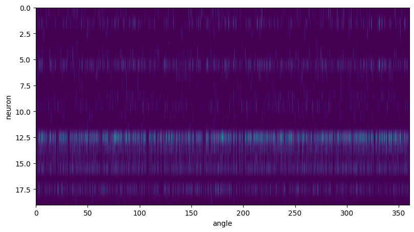

Notebook source code: notebooks/place_cells/23_inspect_reconstructed_experimental_place_cells.ipynb
Post-Training: Experimental Place Cells#
This notebook compares the place cells entering the training pipeline, to the place cells reconstructed by the decoder.
This notebook takes < 1 minute to run on a server with 32 CPUs.
Setup#
In [1]:
import os
import subprocess
gitroot_path = subprocess.check_output(
["git", "rev-parse", "--show-toplevel"], universal_newlines=True
)
os.chdir(os.path.join(gitroot_path[:-1], "neurometry"))
print("Working directory: ", os.getcwd())
import warnings
warnings.filterwarnings("ignore")
import sys
sys_dir = os.path.dirname(os.getcwd())
sys.path.append(sys_dir)
print("Directory added to path: ", sys_dir)
sys.path.append(os.getcwd())
print("Directory added to path: ", os.getcwd())
Working directory: /home/nmiolane/code/neurometry/neurometry
Directory added to path: /home/nmiolane/code/neurometry
Directory added to path: /home/nmiolane/code/neurometry/neurometry
Imports#
In [2]:
import datasets.experimental as experimental
import matplotlib.pyplot as plt
import numpy as np
import torch
TRAINED_MODELS = os.path.join(os.getcwd(), "results/trained_models")
print(f"Available trained models in directory: {TRAINED_MODELS}")
for model_path in os.listdir(TRAINED_MODELS):
print("-", model_path)
INFO: Using pytorch backend
Available trained models in directory: /home/nmiolane/code/neurometry/neurometry/results/trained_models
- run_1756e481_experimental_41_other_gain_model.pt
- run_f46a7310_s1_synthetic_noise_var_0.01_embedding_dim_3_model.pt
- run_25ef354f_experimental_34_gain_1_model.pt
- run_0084d9ad_s1_synthetic_noise_var_0.001_embedding_dim_2_model.pt
- run_5b2c428e_experimental_41_gain_1_model.pt
- run_11da60ae_experimental_41_gain_1_model.pt
- run_22e2f52a_experimental_53_hd_gain_1_model.pt
- run_dd2afc50_experimental_34_gain_1_model.pt
- run_f94d6c5f_experimental_34_gain_1_model.pt
- run_5750ae64_s1_synthetic_noise_var_0.01_embedding_dim_10_model.pt
- run_390142d9_experimental_34_gain_1_model.pt
- run_0d3f2b93_s1_synthetic_noise_var_0.001_embedding_dim_5_model.pt
- run_025c1c00_s1_synthetic_noise_var_0.01_embedding_dim_20_model.pt
- run_6c905a80_s1_synthetic_noise_var_0.01_embedding_dim_20_model.pt
- run_8170c881_s1_synthetic_noise_var_0.01_embedding_dim_8_model.pt
- run_707bd9cd_experimental_34_gain_1_model.pt
- run_97307f6a_s1_synthetic_noise_var_0.01_embedding_dim_10_model.pt
- run_bbf268d9_experimental_34_gain_1_model.pt
- run_51382f9e_s1_synthetic_noise_var_0.001_embedding_dim_5_model.pt
- run_693bb5bc_s1_synthetic_noise_var_0.001_embedding_dim_5_model.pt
- run_75bcb1a2_experimental_34_gain_1_model.pt
- run_3dc90ea5_s1_synthetic_noise_var_0.1_embedding_dim_3_model.pt
- run_9268c42e_s1_synthetic_noise_var_0.01_embedding_dim_10_model.pt
- run_3ab58417_experimental_41_other_gain_model.pt
- run_4581be0c_s1_synthetic_noise_var_0.01_embedding_dim_5_model.pt
- run_0f629bee_s1_synthetic_noise_var_0.001_embedding_dim_50_model.pt
- run_8e14545c_experimental_34_gain_1_model.pt
- run_54f8f506_experimental_41_gain_1_model.pt
- run_3c466769_experimental_41_gain_1_model.pt
- run_cd170210_s1_synthetic_noise_var_0.01_embedding_dim_20_model.pt
- run_0f73d23d_experimental_41_other_gain_model.pt
- run_8aea0339_experimental_41_other_gain_model.pt
- run_4588f6ae_experimental_53_hd_gain_1_model.pt
- run_260feff6_s1_synthetic_noise_var_0.01_embedding_dim_8_model.pt
- run_1e44e7ad_experimental_41_gain_1_model.pt
- run_5e33cc64_experimental_41_gain_1_model.pt
- run_1e9eec1e_experimental_53_hd_gain_1_model.pt
- run_2a020eb6_experimental_41_gain_1_model.pt
- run_baf59e37_experimental_41_gain_1_model.pt
- run_8823b0e1_experimental_41_other_gain_model.pt
- run_b484d677_experimental_41_other_gain_model.pt
- run_78e2fdee_s1_synthetic_noise_var_0.001_embedding_dim_10_model.pt
- run_2413aac1_experimental_34_other_gain_model.pt
- run_93fa84de_experimental_41_other_gain_model.pt
- run_88281f91_s1_synthetic_noise_var_0.1_embedding_dim_10_model.pt
- run_dc7ba34a_experimental_41_gain_1_model.pt
- run_2d7f50ca_experimental_41_gain_1_model.pt
- run_b25c9680_experimental_34_gain_1_model.pt
- run_e68e9d25_s1_synthetic_noise_var_0.001_embedding_dim_50_model.pt
- run_d0434381_s1_synthetic_noise_var_0.1_embedding_dim_3_model.pt
- run_6f5de0e8_experimental_41_gain_1_model.pt
- run_c8f88cc0_s1_synthetic_noise_var_0.1_embedding_dim_5_model.pt
- run_7a49d91d_experimental_41_gain_1_model.pt
- run_c7bdf1c3_s1_synthetic_noise_var_0.1_embedding_dim_3_model.pt
- run_2d874ebe_experimental_41_other_gain_model.pt
- run_85fa2d70_experimental_41_gain_1_model.pt
- run_8f206de0_experimental_41_gain_1_model.pt
- run_05f3f525_s1_synthetic_noise_var_0.001_embedding_dim_5_model.pt
- run_f1b325ab_experimental_41_gain_1_model.pt
- run_49672f96_experimental_53_hd_gain_1_model.pt
- run_00536ce8_s1_synthetic_noise_var_0.01_embedding_dim_3_model.pt
- run_48f31c25_s1_synthetic_noise_var_0.01_embedding_dim_20_model.pt
- run_15d854e0_experimental_53_hd_gain_1_model.pt
- run_ed333d63_s1_synthetic_noise_var_0.001_embedding_dim_10_model.pt
- run_336d68e1_experimental_41_other_gain_model.pt
- run_4a539082_experimental_41_other_gain_model.pt
- run_7961adfb_experimental_34_other_gain_model.pt
- run_81814b7e_s1_synthetic_noise_var_0.1_embedding_dim_8_model.pt
- run_dafe5f3e_experimental_41_other_gain_model.pt
- run_e22318ec_experimental_41_gain_1_model.pt
- run_4fa16b90_s1_synthetic_noise_var_0.01_embedding_dim_10_model.pt
- run_f89c2bce_experimental_41_gain_1_model.pt
- run_d9503fb4_s1_synthetic_noise_var_0.1_embedding_dim_20_model.pt
- run_c02ccb1c_s1_synthetic_noise_var_0.01_embedding_dim_2_model.pt
- run_a7dcd27e_s1_synthetic_noise_var_0.001_embedding_dim_2_model.pt
- run_32dc03b3_s1_synthetic_noise_var_0.1_embedding_dim_3_model.pt
- run_05048add_s1_synthetic_noise_var_0.01_embedding_dim_5_model.pt
- run_31105914_experimental_41_gain_1_model.pt
- run_f349beb0_experimental_41_gain_1_model.pt
- run_b533a223_s1_synthetic_noise_var_0.001_embedding_dim_50_model.pt
- run_0643a9c7_experimental_41_other_gain_model.pt
- run_4136845c_experimental_41_gain_1_model.pt
- run_c641f9e1_s1_synthetic_noise_var_0.001_embedding_dim_5_model.pt
- run_72455a23_experimental_41_gain_1_model.pt
- run_82769d9b_s1_synthetic_noise_var_0.001_embedding_dim_8_model.pt
- run_78d920b0_s1_synthetic_noise_var_0.1_embedding_dim_5_model.pt
- run_5f2aa40b_experimental_41_gain_1_model.pt
- run_e0fb8b50_s1_synthetic_noise_var_0.001_embedding_dim_20_model.pt
- run_6435da6b_experimental_41_gain_1_model.pt
- run_9781fb46_s1_synthetic_noise_var_0.01_embedding_dim_5_model.pt
- run_5a1802a2_experimental_34_gain_1_model.pt
- run_e84fc124_s1_synthetic_noise_var_0.1_embedding_dim_5_model.pt
- run_603a4217_experimental_53_hd_gain_1_model.pt
- run_8323d0e4_s1_synthetic_noise_var_0.001_embedding_dim_50_model.pt
- run_a1918fa5_s1_synthetic_noise_var_0.1_embedding_dim_8_model.pt
- run_ac4b687e_s1_synthetic_noise_var_0.001_embedding_dim_20_model.pt
- run_f835393f_experimental_34_gain_1_model.pt
- run_397368a7_s1_synthetic_noise_var_0.1_embedding_dim_8_model.pt
- run_fef8700a_s1_synthetic_noise_var_0.001_embedding_dim_10_model.pt
- run_fef6d7cd_experimental_34_other_gain_model.pt
- run_585593bf_s1_synthetic_noise_var_0.01_embedding_dim_5_model.pt
- run_be63986c_experimental_41_gain_1_model.pt
- run_433264d1_experimental_41_other_gain_model.pt
- run_94af064f_s1_synthetic_noise_var_0.1_embedding_dim_8_model.pt
- run_49129604_experimental_41_other_gain_model.pt
- run_cffd64b2_experimental_53_hd_gain_1_model.pt
- run_8a97d898_experimental_34_other_gain_model.pt
- run_0651e689_experimental_34_gain_1_model.pt
- run_b2364bc7_s1_synthetic_noise_var_0.1_embedding_dim_50_model.pt
- run_d9eb4384_experimental_53_hd_gain_1_model.pt
- run_ebf91975_s1_synthetic_noise_var_0.1_embedding_dim_50_model.pt
- run_8d85d579_s1_synthetic_noise_var_0.01_embedding_dim_50_model.pt
- run_be37c993_s1_synthetic_noise_var_0.001_embedding_dim_3_model.pt
- run_73978593_s1_synthetic_noise_var_0.1_embedding_dim_3_model.pt
- run_68466875_s1_synthetic_noise_var_0.001_embedding_dim_5_model.pt
- run_d259e508_experimental_41_gain_1_model.pt
- run_b451e911_experimental_34_gain_1_model.pt
- run_57f9f591_experimental_41_gain_1_model.pt
- run_13203d91_experimental_41_other_gain_model.pt
- run_302650a4_s1_synthetic_noise_var_0.01_embedding_dim_3_model.pt
- run_d3a7bb8d_s1_synthetic_noise_var_0.01_embedding_dim_3_model.pt
- run_bb0e2e87_experimental_34_gain_1_model.pt
- run_a993e984_experimental_41_gain_1_model.pt
- run_5a78d36e_s1_synthetic_noise_var_0.001_embedding_dim_3_model.pt
- run_eb26aec5_experimental_41_other_gain_model.pt
- run_66d1e470_experimental_41_gain_1_model.pt
- run_d522ed89_s1_synthetic_noise_var_0.1_embedding_dim_3_model.pt
- run_0ae0d903_s1_synthetic_noise_var_0.001_embedding_dim_10_model.pt
- run_e018f5d6_experimental_41_gain_1_model.pt
- run_32f527cb_s1_synthetic_noise_var_0.001_embedding_dim_10_model.pt
- run_53f19194_s1_synthetic_noise_var_0.001_embedding_dim_3_model.pt
- run_bbe5c66e_experimental_34_other_gain_model.pt
- run_d0c2b496_experimental_34_other_gain_model.pt
- run_bc56bd19_experimental_41_gain_1_model.pt
- run_0d7ee314_experimental_34_gain_1_model.pt
- run_06c0980e_experimental_34_gain_1_model.pt
- run_6f047da0_s1_synthetic_noise_var_0.001_embedding_dim_8_model.pt
- run_f92b99fd_experimental_34_gain_1_model.pt
- run_8e2a3207_experimental_41_other_gain_model.pt
- run_0df0423b_experimental_34_other_gain_model.pt
- run_9bd4ec76_experimental_34_gain_1_model.pt
- run_97e7392b_experimental_53_hd_gain_1_model.pt
- run_e43e6c70_experimental_41_other_gain_model.pt
- run_b73f1131_s1_synthetic_noise_var_0.001_embedding_dim_8_model.pt
- run_91a3e594_s1_synthetic_noise_var_0.001_embedding_dim_5_model.pt
- run_4f73705f_s1_synthetic_noise_var_0.1_embedding_dim_50_model.pt
- run_0aa6d0e6_experimental_41_other_gain_model.pt
- run_26155ee0_experimental_41_other_gain_model.pt
- run_3ae28c8d_experimental_53_hd_gain_1_model.pt
- run_3df7c622_experimental_34_gain_1_model.pt
- run_e73b1a97_experimental_41_other_gain_model.pt
- run_4e009d89_experimental_41_gain_1_model.pt
- run_2c99a9e5_s1_synthetic_noise_var_0.001_embedding_dim_3_model.pt
- run_34e77203_s1_synthetic_noise_var_0.1_embedding_dim_8_model.pt
- run_f1ef60f5_experimental_34_other_gain_model.pt
- run_936ce3ba_s1_synthetic_noise_var_0.01_embedding_dim_20_model.pt
- run_bdb1fcd9_s1_synthetic_noise_var_0.01_embedding_dim_20_model.pt
- run_1914f950_s1_synthetic_noise_var_0.001_embedding_dim_20_model.pt
- run_b523363b_experimental_41_other_gain_model.pt
- run_56207e10_experimental_41_gain_1_model.pt
- run_9dd5d341_s1_synthetic_noise_var_0.01_embedding_dim_5_model.pt
- run_d8140840_s1_synthetic_noise_var_0.01_embedding_dim_10_model.pt
- run_2dd9f6bd_experimental_34_gain_1_model.pt
- run_d3b0388c_experimental_34_other_gain_model.pt
- run_a4699726_s1_synthetic_noise_var_0.001_embedding_dim_3_model.pt
- run_20702d48_s1_synthetic_noise_var_0.1_embedding_dim_5_model.pt
- run_99f45132_s1_synthetic_noise_var_0.1_embedding_dim_8_model.pt
- run_80401e3d_experimental_41_gain_1_model.pt
- run_a12baf10_experimental_41_gain_1_model.pt
- run_e0a722b6_experimental_41_other_gain_model.pt
- run_487ee812_experimental_34_gain_1_model.pt
- run_a361459b_s1_synthetic_noise_var_0.1_embedding_dim_20_model.pt
- run_3cb01174_experimental_41_other_gain_model.pt
- run_1093f731_experimental_53_hd_gain_1_model.pt
- run_dc64f433_s1_synthetic_noise_var_0.001_embedding_dim_8_model.pt
- run_4eaa9af0_experimental_34_gain_1_model.pt
- run_e5bf06ba_s1_synthetic_noise_var_0.01_embedding_dim_10_model.pt
- run_0ae808b0_s1_synthetic_noise_var_0.01_embedding_dim_3_model.pt
- run_b34a897f_experimental_41_gain_1_model.pt
- run_432484e0_experimental_41_other_gain_model.pt
- run_b78f3328_s1_synthetic_noise_var_0.001_embedding_dim_3_model.pt
- run_37fdf44f_s1_synthetic_noise_var_0.01_embedding_dim_10_model.pt
- run_e0c19312_s1_synthetic_noise_var_0.001_embedding_dim_5_model.pt
- run_06c8eee2_s1_synthetic_noise_var_0.01_embedding_dim_5_model.pt
- run_9d36e504_s1_synthetic_noise_var_0.01_embedding_dim_10_model.pt
- run_544da283_experimental_41_other_gain_model.pt
- run_73b1e7b4_s1_synthetic_noise_var_0.001_embedding_dim_3_model.pt
- run_034ae51b_experimental_34_gain_1_model.pt
- run_ef6d6909_s1_synthetic_noise_var_0.01_embedding_dim_50_model.pt
- run_05d7a5d6_experimental_34_other_gain_model.pt
- run_ff819b69_experimental_34_gain_1_model.pt
- run_68766908_experimental_34_other_gain_model.pt
- run_fd4920e7_s1_synthetic_noise_var_0.01_embedding_dim_10_model.pt
- run_98145eb2_s1_synthetic_noise_var_0.001_embedding_dim_5_model.pt
- run_f3c0abdf_experimental_41_other_gain_model.pt
- run_a8499f3e_s1_synthetic_noise_var_0.001_embedding_dim_2_model.pt
- run_043ca9d1_experimental_41_gain_1_model.pt
- run_882b4928_s1_synthetic_noise_var_0.001_embedding_dim_8_model.pt
- run_59c8c793_s1_synthetic_noise_var_0.001_embedding_dim_5_model.pt
- run_37087026_s1_synthetic_noise_var_0.1_embedding_dim_50_model.pt
- run_7c41f124_experimental_53_hd_gain_1_model.pt
- run_9ec70076_experimental_53_hd_gain_1_model.pt
- run_29f1887c_experimental_34_gain_1_model.pt
- run_3488e0b0_s1_synthetic_noise_var_0.01_embedding_dim_5_model.pt
- run_2fff19fb_s1_synthetic_noise_var_0.001_embedding_dim_50_model.pt
- run_fb096ed3_s1_synthetic_noise_var_0.01_embedding_dim_3_model.pt
- run_ac270978_experimental_34_gain_1_model.pt
- run_d8ceb1ef_experimental_41_gain_1_model.pt
- run_5b044aa8_experimental_41_other_gain_model.pt
- run_035a7412_s1_synthetic_noise_var_0.1_embedding_dim_10_model.pt
- run_564b23e9_experimental_34_other_gain_model.pt
- run_bd94b56c_s1_synthetic_noise_var_0.001_embedding_dim_20_model.pt
- run_8c092614_experimental_41_other_gain_model.pt
- run_eabed2fd_experimental_34_gain_1_model.pt
- run_bfaedf85_experimental_53_hd_gain_1_model.pt
- run_aeab09e1_experimental_41_gain_1_model.pt
- run_2b49a267_experimental_41_other_gain_model.pt
- run_f365d4fa_s1_synthetic_noise_var_0.001_embedding_dim_3_model.pt
- run_e939fe9f_s1_synthetic_noise_var_0.001_embedding_dim_5_model.pt
- run_9a2fb86d_s1_synthetic_noise_var_0.1_embedding_dim_10_model.pt
- run_3d6ef02e_experimental_34_other_gain_model.pt
- run_83c3b147_s1_synthetic_noise_var_0.1_embedding_dim_3_model.pt
- run_3ddcf1aa_experimental_34_other_gain_model.pt
- run_8a4b7907_experimental_41_other_gain_model.pt
- run_00fffddc_experimental_34_gain_1_model.pt
- run_8c15bb4c_experimental_53_hd_gain_1_model.pt
- run_c1e5299a_s1_synthetic_noise_var_0.1_embedding_dim_50_model.pt
- run_c43d0a6a_experimental_41_gain_1_model.pt
- run_483fd880_experimental_41_gain_1_model.pt
- run_4f12e88d_experimental_41_gain_1_model.pt
- run_13c526d5_s1_synthetic_noise_var_0.001_embedding_dim_3_model.pt
- run_698a8012_experimental_41_gain_1_model.pt
- run_2966a1f5_experimental_41_gain_1_model.pt
- run_ab08e17b_s1_synthetic_noise_var_0.01_embedding_dim_50_model.pt
- run_197fec52_experimental_41_gain_1_model.pt
- run_821184be_experimental_53_hd_gain_1_model.pt
- run_d52265ee_s1_synthetic_noise_var_0.01_embedding_dim_3_model.pt
- run_1ef83fd2_experimental_41_gain_1_model.pt
- run_5367165d_s1_synthetic_noise_var_0.1_embedding_dim_5_model.pt
- run_67ba041b_experimental_53_hd_gain_1_model.pt
- run_f4a10a5a_s1_synthetic_noise_var_0.01_embedding_dim_50_model.pt
- run_58f7ad0e_experimental_34_other_gain_model.pt
- run_441af1cc_s1_synthetic_noise_var_0.001_embedding_dim_50_model.pt
- run_631dae36_experimental_34_other_gain_model.pt
- run_81f35501_experimental_41_gain_1_model.pt
- run_55581a7c_experimental_53_hd_gain_1_model.pt
- run_cfe8ea9e_experimental_53_hd_gain_1_model.pt
- run_fb43af46_s1_synthetic_noise_var_0.001_embedding_dim_3_model.pt
- run_517bbd56_experimental_34_other_gain_model.pt
- run_ea923074_experimental_34_gain_1_model.pt
- run_88c40759_s1_synthetic_noise_var_0.1_embedding_dim_50_model.pt
- run_dd36437d_experimental_34_other_gain_model.pt
- run_43934fde_experimental_34_other_gain_model.pt
- run_1ec6043f_experimental_41_other_gain_model.pt
- run_b0b752e7_experimental_41_gain_1_model.pt
- run_d6824a32_s1_synthetic_noise_var_0.1_embedding_dim_5_model.pt
- run_b20ede56_experimental_41_gain_1_model.pt
- run_ad95cdb6_experimental_41_gain_1_model.pt
- run_2051e347_experimental_34_other_gain_model.pt
- run_3916921b_s1_synthetic_noise_var_0.01_embedding_dim_5_model.pt
- run_ace82e8d_s1_synthetic_noise_var_0.1_embedding_dim_3_model.pt
- run_26258c8f_s1_synthetic_noise_var_0.001_embedding_dim_3_model.pt
- run_96dd175e_s1_synthetic_noise_var_0.01_embedding_dim_3_model.pt
- run_0b1b3667_experimental_41_gain_1_model.pt
- run_0e239a93_experimental_34_gain_1_model.pt
- run_62a7086f_experimental_41_gain_1_model.pt
- run_7c6c848d_experimental_34_other_gain_model.pt
- run_744e3541_s1_synthetic_noise_var_0.001_embedding_dim_2_model.pt
- run_63e731b6_s1_synthetic_noise_var_0.01_embedding_dim_20_model.pt
- run_cfbd2a64_experimental_41_other_gain_model.pt
- run_76998897_experimental_41_gain_1_model.pt
- run_692544d3_s1_synthetic_noise_var_0.01_embedding_dim_20_model.pt
- run_a82fc274_s1_synthetic_noise_var_0.001_embedding_dim_5_model.pt
- run_7a8b97cb_experimental_34_gain_1_model.pt
- run_0341bf92_experimental_53_hd_gain_1_model.pt
- run_fb588961_experimental_41_gain_1_model.pt
- run_b119c2a1_s1_synthetic_noise_var_0.01_embedding_dim_10_model.pt
- run_e5929c4a_experimental_34_other_gain_model.pt
- run_de4c57fd_experimental_53_hd_gain_1_model.pt
- run_32e225b4_experimental_41_other_gain_model.pt
- run_4840e318_experimental_34_gain_1_model.pt
- run_055caf4f_s1_synthetic_noise_var_0.001_embedding_dim_50_model.pt
- run_90d15923_experimental_34_gain_1_model.pt
- run_b8cf4ebc_experimental_41_gain_1_model.pt
- run_f702e3ba_experimental_41_gain_1_model.pt
- run_5b55edca_s1_synthetic_noise_var_0.01_embedding_dim_3_model.pt
- run_5dbaeee0_experimental_34_gain_1_model.pt
- run_cc52c6d0_s1_synthetic_noise_var_0.01_embedding_dim_50_model.pt
- run_17882d0b_s1_synthetic_noise_var_0.01_embedding_dim_20_model.pt
- run_75b56f69_experimental_34_gain_1_model.pt
- run_408348ff_experimental_41_other_gain_model.pt
- run_7b01e1c8_s1_synthetic_noise_var_0.1_embedding_dim_20_model.pt
- run_7526b862_s1_synthetic_noise_var_0.001_embedding_dim_50_model.pt
- run_0d583c32_experimental_34_other_gain_model.pt
- run_62b5bb6b_experimental_41_gain_1_model.pt
- run_7a255fad_s1_synthetic_noise_var_0.01_embedding_dim_20_model.pt
- run_28323d87_experimental_53_hd_gain_1_model.pt
- run_f37f4376_s1_synthetic_noise_var_0.01_embedding_dim_3_model.pt
- run_03ce789a_s1_synthetic_noise_var_0.001_embedding_dim_20_model.pt
- run_7c3265f6_experimental_41_gain_1_model.pt
- run_96e7fb7d_s1_synthetic_noise_var_0.1_embedding_dim_5_model.pt
- run_86617756_s1_synthetic_noise_var_0.001_embedding_dim_8_model.pt
- run_89e10bc9_experimental_41_other_gain_model.pt
- run_24ffcd3b_experimental_41_other_gain_model.pt
- run_190081a1_s1_synthetic_noise_var_0.1_embedding_dim_3_model.pt
- run_89d1a2aa_s1_synthetic_noise_var_0.001_embedding_dim_3_model.pt
- run_d344a34c_experimental_53_hd_gain_1_model.pt
- run_b304f4ec_s1_synthetic_noise_var_0.1_embedding_dim_20_model.pt
- run_cac2eee7_s1_synthetic_noise_var_0.01_embedding_dim_3_model.pt
- run_9152b659_experimental_41_gain_1_model.pt
- run_fabe839d_s1_synthetic_noise_var_0.01_embedding_dim_3_model.pt
- run_ff2207be_s1_synthetic_noise_var_0.001_embedding_dim_20_model.pt
- run_06369669_s1_synthetic_noise_var_0.1_embedding_dim_20_model.pt
- run_72e4db87_experimental_41_other_gain_model.pt
- run_97fa6a1b_s1_synthetic_noise_var_0.001_embedding_dim_10_model.pt
- run_8097a240_s1_synthetic_noise_var_0.01_embedding_dim_3_model.pt
- run_bb307e6b_s1_synthetic_noise_var_0.1_embedding_dim_8_model.pt
- run_ae311eba_experimental_41_gain_1_model.pt
- run_3f6af781_experimental_41_gain_1_model.pt
- run_67149f0e_s1_synthetic_noise_var_0.1_embedding_dim_10_model.pt
- run_cc5896fd_experimental_34_other_gain_model.pt
- run_dfa93e84_s1_synthetic_noise_var_0.1_embedding_dim_3_model.pt
- run_f9de549e_experimental_53_hd_gain_1_model.pt
- run_9f8fa77f_experimental_41_gain_1_model.pt
- run_8cf10d69_experimental_34_gain_1_model.pt
- run_2b2db9cd_experimental_34_gain_1_model.pt
- run_b194f1e6_experimental_41_gain_1_model.pt
- run_5c9fcd79_s1_synthetic_noise_var_0.01_embedding_dim_10_model.pt
- run_c7a8e014_experimental_34_gain_1_model.pt
- run_26c81ade_s1_synthetic_noise_var_0.001_embedding_dim_10_model.pt
- run_8c6e9b0f_s1_synthetic_noise_var_0.001_embedding_dim_8_model.pt
- run_e9403bd3_experimental_41_gain_1_model.pt
- run_ae89fa1a_experimental_34_other_gain_model.pt
- run_94df5843_experimental_41_gain_1_model.pt
- run_0d610c95_experimental_41_gain_1_model.pt
- run_20f85249_s1_synthetic_noise_var_0.001_embedding_dim_2_model.pt
- run_6febc761_s1_synthetic_noise_var_0.1_embedding_dim_3_model.pt
- run_a6dc65cc_s1_synthetic_noise_var_0.001_embedding_dim_5_model.pt
- run_74845ac9_experimental_41_other_gain_model.pt
- run_dbeef41c_experimental_41_other_gain_model.pt
- run_de8be118_s1_synthetic_noise_var_0.001_embedding_dim_50_model.pt
- run_8e9408a0_s1_synthetic_noise_var_0.01_embedding_dim_8_model.pt
- run_9c206567_s1_synthetic_noise_var_0.1_embedding_dim_8_model.pt
- run_41b3d4e6_experimental_41_other_gain_model.pt
- run_ddd6fb24_experimental_34_other_gain_model.pt
- run_6da30393_experimental_34_other_gain_model.pt
- run_b40d1190_experimental_53_hd_gain_1_model.pt
- run_20b3c7ee_experimental_41_gain_1_model.pt
- run_84499bfe_s1_synthetic_noise_var_0.01_embedding_dim_3_model.pt
- run_f6fd7991_s1_synthetic_noise_var_0.001_embedding_dim_3_model.pt
- run_d03be0b2_s1_synthetic_noise_var_0.1_embedding_dim_50_model.pt
- run_32828651_s1_synthetic_noise_var_0.01_embedding_dim_3_model.pt
- run_043b35b3_experimental_41_gain_1_model.pt
- run_12961a80_experimental_34_gain_1_model.pt
- run_7e6ac2f7_s1_synthetic_noise_var_0.01_embedding_dim_50_model.pt
- run_d13d12f1_s1_synthetic_noise_var_0.1_embedding_dim_50_model.pt
- run_5d522981_experimental_34_gain_1_model.pt
- run_eb236d3b_experimental_34_gain_1_model.pt
- run_9264aee8_experimental_41_gain_1_model.pt
- run_fbb65ff5_experimental_53_hd_gain_1_model.pt
- run_7e19ac17_s1_synthetic_noise_var_0.001_embedding_dim_10_model.pt
- run_ceeb453e_experimental_41_gain_1_model.pt
- run_9f49f444_s1_synthetic_noise_var_0.01_embedding_dim_5_model.pt
- run_516d76fe_s1_synthetic_noise_var_0.001_embedding_dim_3_model.pt
- run_a0a179bb_experimental_41_other_gain_model.pt
- run_6d52d1ce_s1_synthetic_noise_var_0.01_embedding_dim_10_model.pt
- run_b89640fc_experimental_41_gain_1_model.pt
- run_eb8e02c3_s1_synthetic_noise_var_0.01_embedding_dim_50_model.pt
- run_65e675d4_experimental_53_hd_gain_1_model.pt
- run_2eef4968_experimental_41_gain_1_model.pt
- run_f2692753_experimental_53_hd_gain_1_model.pt
- run_e9b49c30_s1_synthetic_noise_var_0.01_embedding_dim_5_model.pt
- run_b2e77c39_s1_synthetic_noise_var_0.1_embedding_dim_5_model.pt
- run_d3257931_experimental_53_hd_gain_1_model.pt
- run_967a7e70_experimental_34_gain_1_model.pt
- run_ce669e4f_s1_synthetic_noise_var_0.1_embedding_dim_5_model.pt
- run_f11f14f9_s1_synthetic_noise_var_0.001_embedding_dim_20_model.pt
- run_791dc944_s1_synthetic_noise_var_0.001_embedding_dim_8_model.pt
- run_d0426d02_experimental_41_gain_1_model.pt
- run_8377ce01_s1_synthetic_noise_var_0.001_embedding_dim_5_model.pt
- run_501d8eec_experimental_41_gain_1_model.pt
- run_df33dfe3_experimental_34_other_gain_model.pt
- run_958e864d_s1_synthetic_noise_var_0.1_embedding_dim_5_model.pt
- run_2a7c0c29_s1_synthetic_noise_var_0.001_embedding_dim_50_model.pt
- run_81ca169e_s1_synthetic_noise_var_0.01_embedding_dim_20_model.pt
- run_713aab68_experimental_34_gain_1_model.pt
- run_da87e741_experimental_34_gain_1_model.pt
- run_0e4501b3_s1_synthetic_noise_var_0.01_embedding_dim_5_model.pt
- run_60fce414_experimental_34_gain_1_model.pt
- run_54c9b691_experimental_34_other_gain_model.pt
- run_270f237f_s1_synthetic_noise_var_0.001_embedding_dim_50_model.pt
- run_b5a334ee_experimental_41_gain_1_model.pt
- run_0237767f_s1_synthetic_noise_var_0.01_embedding_dim_20_model.pt
- run_aff3bcc2_experimental_41_gain_1_model.pt
- run_8008d7b2_s1_synthetic_noise_var_0.001_embedding_dim_3_model.pt
- run_d34a9f1b_s1_synthetic_noise_var_0.1_embedding_dim_8_model.pt
- run_ae80473e_experimental_41_gain_1_model.pt
- run_c27d1eb1_experimental_53_hd_gain_1_model.pt
- run_f14a9407_s1_synthetic_noise_var_0.001_embedding_dim_2_model.pt
- run_78d1ba10_experimental_34_other_gain_model.pt
- run_b3c81a8e_s1_synthetic_noise_var_0.1_embedding_dim_10_model.pt
- run_7a0e9934_s1_synthetic_noise_var_0.01_embedding_dim_3_model.pt
- run_59422b6c_experimental_41_other_gain_model.pt
- run_99ad9708_experimental_41_other_gain_model.pt
- run_4d657f3e_experimental_34_gain_1_model.pt
- run_36d47324_s1_synthetic_noise_var_0.1_embedding_dim_50_model.pt
- run_ab7e31ba_experimental_41_gain_1_model.pt
- run_29f370ac_s1_synthetic_noise_var_0.1_embedding_dim_5_model.pt
- run_cbe9ddaf_s1_synthetic_noise_var_0.001_embedding_dim_3_model.pt
- run_3d7e00d8_experimental_34_gain_1_model.pt
- run_6b3b5e9e_s1_synthetic_noise_var_0.01_embedding_dim_3_model.pt
- run_bff2bba2_experimental_53_hd_gain_1_model.pt
- run_507bd60e_s1_synthetic_noise_var_0.1_embedding_dim_3_model.pt
- run_129cba8a_experimental_41_gain_1_model.pt
- run_87819770_s1_synthetic_noise_var_0.1_embedding_dim_50_model.pt
- run_6bd6d1bb_experimental_34_gain_1_model.pt
- run_d1206333_s1_synthetic_noise_var_0.1_embedding_dim_5_model.pt
- run_8be8f4e2_s1_synthetic_noise_var_0.001_embedding_dim_3_model.pt
- run_eafd9074_experimental_34_other_gain_model.pt
- run_5b850289_s1_synthetic_noise_var_0.1_embedding_dim_3_model.pt
- run_b6668c23_experimental_34_other_gain_model.pt
- run_284b5e3a_experimental_41_other_gain_model.pt
- run_74d9e998_experimental_41_other_gain_model.pt
- run_9860e478_experimental_41_gain_1_model.pt
- run_0b498b5e_experimental_34_other_gain_model.pt
- run_cbdb6986_experimental_41_gain_1_model.pt
- run_628e1a8d_s1_synthetic_noise_var_0.1_embedding_dim_3_model.pt
- run_8d41ee95_s1_synthetic_noise_var_0.1_embedding_dim_10_model.pt
- run_7923cf23_experimental_41_other_gain_model.pt
- run_3bc74913_experimental_41_gain_1_model.pt
- run_f41ae8c7_experimental_41_gain_1_model.pt
- run_84fd79ac_experimental_41_gain_1_model.pt
- run_e8a589d0_s1_synthetic_noise_var_0.01_embedding_dim_3_model.pt
- run_932935f1_s1_synthetic_noise_var_0.1_embedding_dim_3_model.pt
- run_f92a5ae0_s1_synthetic_noise_var_0.001_embedding_dim_20_model.pt
- run_f5d5a43e_experimental_34_other_gain_model.pt
- run_9857c0d0_experimental_34_gain_1_model.pt
- run_e543ef76_s1_synthetic_noise_var_0.01_embedding_dim_10_model.pt
- run_a86535b4_experimental_41_gain_1_model.pt
- run_f362c337_s1_synthetic_noise_var_0.001_embedding_dim_8_model.pt
- run_68d9794c_experimental_41_gain_1_model.pt
- run_0309db5e_experimental_53_hd_gain_1_model.pt
- run_86fa5a4b_experimental_41_gain_1_model.pt
- run_86de3c45_s1_synthetic_noise_var_0.001_embedding_dim_3_model.pt
- run_348788e9_experimental_41_gain_1_model.pt
- run_3e5fd1dd_experimental_41_other_gain_model.pt
- run_ba6b5667_experimental_34_other_gain_model.pt
- run_747f2353_experimental_41_other_gain_model.pt
- run_7d3761b1_experimental_34_other_gain_model.pt
- run_38ab8ea3_experimental_41_gain_1_model.pt
- run_3829d104_experimental_34_gain_1_model.pt
- run_e22a8f77_s1_synthetic_noise_var_0.1_embedding_dim_3_model.pt
- run_d8562051_experimental_34_gain_1_model.pt
- run_9fe283f6_s1_synthetic_noise_var_0.01_embedding_dim_8_model.pt
- run_ecc921bc_s1_synthetic_noise_var_0.1_embedding_dim_50_model.pt
- run_68a1bcc3_s1_synthetic_noise_var_0.01_embedding_dim_3_model.pt
- run_f7749a57_experimental_34_other_gain_model.pt
- run_004e96e9_s1_synthetic_noise_var_0.001_embedding_dim_10_model.pt
- run_49ab8af6_experimental_53_hd_gain_1_model.pt
- run_a0380d03_s1_synthetic_noise_var_0.001_embedding_dim_20_model.pt
- run_6204ad10_s1_synthetic_noise_var_0.1_embedding_dim_3_model.pt
- run_6bd90d80_experimental_34_gain_1_model.pt
- run_514bbcd0_experimental_34_gain_1_model.pt
- run_0ff8b6c4_experimental_34_gain_1_model.pt
- run_e921ec22_experimental_41_gain_1_model.pt
- run_ab423bbf_s1_synthetic_noise_var_0.1_embedding_dim_20_model.pt
- run_2d535dad_s1_synthetic_noise_var_0.1_embedding_dim_5_model.pt
- run_5910154a_s1_synthetic_noise_var_0.1_embedding_dim_10_model.pt
- run_4b2ba7b1_s1_synthetic_noise_var_0.01_embedding_dim_10_model.pt
- run_9164ae1b_experimental_41_gain_1_model.pt
- run_9f5412ec_experimental_41_gain_1_model.pt
- run_0004eb35_experimental_53_hd_gain_1_model.pt
- run_469fdb72_s1_synthetic_noise_var_0.01_embedding_dim_10_model.pt
- run_ea55965a_s1_synthetic_noise_var_0.001_embedding_dim_5_model.pt
- run_fd07f6d7_experimental_53_hd_gain_1_model.pt
- run_f9d7c9cc_experimental_34_other_gain_model.pt
- run_718f3e08_experimental_34_other_gain_model.pt
- run_1b98018d_experimental_41_gain_1_model.pt
- run_6dfba3d8_experimental_41_other_gain_model.pt
- run_dc1c1149_s1_synthetic_noise_var_0.1_embedding_dim_3_model.pt
- run_53ed844e_s1_synthetic_noise_var_0.1_embedding_dim_8_model.pt
- run_5934f3a2_experimental_41_gain_1_model.pt
- run_d3679e48_experimental_34_other_gain_model.pt
- run_4c0f8576_experimental_34_gain_1_model.pt
- run_0da94b15_experimental_53_hd_gain_1_model.pt
- run_5bb7bd5a_experimental_53_hd_gain_1_model.pt
- run_d47706f2_experimental_34_other_gain_model.pt
- run_f0113eff_experimental_41_gain_1_model.pt
- run_3afa2489_s1_synthetic_noise_var_0.001_embedding_dim_8_model.pt
- run_c851f374_s1_synthetic_noise_var_0.01_embedding_dim_20_model.pt
- run_e1ebf085_experimental_41_other_gain_model.pt
- run_0f1c0c95_experimental_41_gain_1_model.pt
- run_bba80b5d_experimental_34_gain_1_model.pt
- run_585bc1c2_experimental_34_gain_1_model.pt
- run_8d0651e1_s1_synthetic_noise_var_0.1_embedding_dim_3_model.pt
- run_84e3a8f5_experimental_53_hd_gain_1_model.pt
- run_55a0ec7a_experimental_53_hd_gain_1_model.pt
- run_0713f4df_experimental_41_gain_1_model.pt
- run_85d317ac_experimental_41_gain_1_model.pt
- run_80250ab0_s1_synthetic_noise_var_0.001_embedding_dim_8_model.pt
- run_0925e6aa_experimental_34_other_gain_model.pt
- run_e15c6448_s1_synthetic_noise_var_0.001_embedding_dim_3_model.pt
- run_9bf23262_experimental_41_other_gain_model.pt
- run_a7fb919f_experimental_34_other_gain_model.pt
- run_dbf93172_s1_synthetic_noise_var_0.001_embedding_dim_10_model.pt
- run_ea7d3dfa_s1_synthetic_noise_var_0.001_embedding_dim_20_model.pt
- run_1afe685d_s1_synthetic_noise_var_0.1_embedding_dim_5_model.pt
- run_b797eab4_experimental_34_gain_1_model.pt
- run_7c914b58_s1_synthetic_noise_var_0.01_embedding_dim_3_model.pt
- run_f9e4754b_s1_synthetic_noise_var_0.01_embedding_dim_50_model.pt
- run_a7a31f44_experimental_41_other_gain_model.pt
- run_0f5bc6a7_experimental_41_gain_1_model.pt
- run_efda7d2c_s1_synthetic_noise_var_0.1_embedding_dim_3_model.pt
- run_a476cd52_experimental_34_gain_1_model.pt
- run_175fc15b_s1_synthetic_noise_var_0.001_embedding_dim_2_model.pt
- run_79c255b5_experimental_41_gain_1_model.pt
- run_25701df4_s1_synthetic_noise_var_0.01_embedding_dim_50_model.pt
- run_9604ff3a_s1_synthetic_noise_var_0.1_embedding_dim_50_model.pt
- run_9514f254_experimental_34_gain_1_model.pt
- run_2f108cd4_s1_synthetic_noise_var_0.001_embedding_dim_50_model.pt
- run_98de77cc_experimental_41_other_gain_model.pt
- run_d93e036a_s1_synthetic_noise_var_0.01_embedding_dim_50_model.pt
- run_21faf144_s1_synthetic_noise_var_0.01_embedding_dim_20_model.pt
- run_b25dad3e_experimental_53_hd_gain_1_model.pt
- run_73a50f98_s1_synthetic_noise_var_0.01_embedding_dim_10_model.pt
- run_4f08e0c6_experimental_41_other_gain_model.pt
- run_9dcb0fe4_experimental_41_gain_1_model.pt
- run_5559c207_experimental_41_gain_1_model.pt
- run_a5a38ca8_experimental_34_other_gain_model.pt
- run_dfe53ad3_experimental_41_other_gain_model.pt
- run_9f628188_experimental_34_gain_1_model.pt
- run_fd254163_s1_synthetic_noise_var_0.01_embedding_dim_3_model.pt
- run_f0f372ad_s1_synthetic_noise_var_0.01_embedding_dim_3_model.pt
- run_8afc1d8b_s1_synthetic_noise_var_0.01_embedding_dim_10_model.pt
- run_8f92f485_experimental_41_gain_1_model.pt
- run_3549be26_s1_synthetic_noise_var_0.01_embedding_dim_5_model.pt
- run_376bdffb_s1_synthetic_noise_var_0.001_embedding_dim_3_model.pt
- run_c82a5f1a_experimental_41_other_gain_model.pt
- run_c62fc3ea_experimental_34_gain_1_model.pt
- run_f2805f7f_experimental_41_gain_1_model.pt
- run_c75ac39c_experimental_41_gain_1_model.pt
- run_8b78774c_s1_synthetic_noise_var_0.1_embedding_dim_3_model.pt
- run_0f57b7d1_s1_synthetic_noise_var_0.1_embedding_dim_8_model.pt
- run_55d510f6_experimental_34_gain_1_model.pt
- run_63f7e9ff_s1_synthetic_noise_var_0.01_embedding_dim_10_model.pt
- run_851de480_experimental_53_hd_gain_1_model.pt
- run_f7ba167e_experimental_41_other_gain_model.pt
- run_99bde4ea_experimental_41_other_gain_model.pt
- run_87533fd6_experimental_41_gain_1_model.pt
- run_78db2633_s1_synthetic_noise_var_0.01_embedding_dim_3_model.pt
- run_9215029e_experimental_34_other_gain_model.pt
- run_180bd453_s1_synthetic_noise_var_0.1_embedding_dim_8_model.pt
- run_179ac56c_s1_synthetic_noise_var_0.1_embedding_dim_3_model.pt
- run_be8a7521_s1_synthetic_noise_var_0.1_embedding_dim_20_model.pt
- run_499d617b_experimental_41_gain_1_model.pt
- run_0b305175_experimental_41_gain_1_model.pt
- run_5edeb889_experimental_41_other_gain_model.pt
- run_c4c9bb5c_s1_synthetic_noise_var_0.1_embedding_dim_20_model.pt
- run_8c01e674_experimental_41_other_gain_model.pt
- run_10aa86e8_experimental_34_gain_1_model.pt
- run_f40f2cbc_experimental_34_gain_1_model.pt
- run_a6666766_experimental_34_other_gain_model.pt
- run_939e4062_experimental_41_gain_1_model.pt
- run_3e1b8704_experimental_41_other_gain_model.pt
- run_dfe9effe_s1_synthetic_noise_var_0.001_embedding_dim_20_model.pt
- run_cefb790f_s1_synthetic_noise_var_0.1_embedding_dim_5_model.pt
- run_dc6d2f2c_experimental_34_gain_1_model.pt
- run_a0869c25_s1_synthetic_noise_var_0.1_embedding_dim_50_model.pt
- run_59c946ec_s1_synthetic_noise_var_0.001_embedding_dim_20_model.pt
- run_dd5d2df5_experimental_34_gain_1_model.pt
- run_c5dc5e6b_s1_synthetic_noise_var_0.1_embedding_dim_20_model.pt
- run_4cf77f92_experimental_41_other_gain_model.pt
- run_6de38d5f_s1_synthetic_noise_var_0.001_embedding_dim_5_model.pt
- run_2f30c3d5_experimental_53_hd_gain_1_model.pt
- run_d2474ca1_s1_synthetic_noise_var_0.1_embedding_dim_5_model.pt
- run_4f40da70_experimental_34_other_gain_model.pt
- run_1e009208_experimental_41_gain_1_model.pt
- run_34abc1ec_experimental_34_other_gain_model.pt
- run_af699b95_experimental_41_other_gain_model.pt
- run_d666b1d0_s1_synthetic_noise_var_0.1_embedding_dim_3_model.pt
- run_ea6f3a5a_experimental_41_other_gain_model.pt
- run_d68b2034_s1_synthetic_noise_var_0.001_embedding_dim_10_model.pt
- run_5f033d61_experimental_53_hd_gain_1_model.pt
- run_3ada8885_experimental_41_gain_1_model.pt
- run_9dcfb6cc_s1_synthetic_noise_var_0.001_embedding_dim_50_model.pt
- run_df470a42_s1_synthetic_noise_var_0.1_embedding_dim_3_model.pt
- run_4acfeb32_experimental_41_gain_1_model.pt
- run_8785d440_experimental_41_gain_1_model.pt
- run_63a7b5df_experimental_41_gain_1_model.pt
- run_98c0f6d3_experimental_41_other_gain_model.pt
- run_f0d86031_s1_synthetic_noise_var_0.001_embedding_dim_10_model.pt
- run_5f9dc7ad_s1_synthetic_noise_var_0.001_embedding_dim_20_model.pt
- run_382e5921_s1_synthetic_noise_var_0.1_embedding_dim_10_model.pt
- run_19143263_experimental_34_gain_1_model.pt
- run_52fe1849_experimental_41_other_gain_model.pt
- run_709b95de_experimental_41_gain_1_model.pt
- run_376c4848_experimental_41_gain_1_model.pt
- run_0d89b228_s1_synthetic_noise_var_0.01_embedding_dim_5_model.pt
- run_8a738211_s1_synthetic_noise_var_0.01_embedding_dim_50_model.pt
- run_7a23bff3_experimental_53_hd_gain_1_model.pt
- run_d9a94f5f_experimental_41_other_gain_model.pt
- run_79cb78ad_experimental_41_gain_1_model.pt
- run_a7f43fba_s1_synthetic_noise_var_0.01_embedding_dim_8_model.pt
- run_ef6d1228_s1_synthetic_noise_var_0.001_embedding_dim_3_model.pt
- run_87ed507f_experimental_53_hd_gain_1_model.pt
- run_87d30e43_experimental_53_hd_gain_1_model.pt
- run_73ce439f_s1_synthetic_noise_var_0.001_embedding_dim_8_model.pt
- run_e3816958_s1_synthetic_noise_var_0.01_embedding_dim_20_model.pt
- run_550127d5_s1_synthetic_noise_var_0.001_embedding_dim_20_model.pt
- run_015e0536_s1_synthetic_noise_var_0.1_embedding_dim_50_model.pt
- run_bbb318d3_experimental_41_gain_1_model.pt
- run_5cf14d40_experimental_53_hd_gain_1_model.pt
- run_80b95fa3_experimental_41_other_gain_model.pt
- run_c28be906_experimental_41_gain_1_model.pt
- run_808a3513_s1_synthetic_noise_var_0.1_embedding_dim_3_model.pt
- run_002ef0ed_experimental_41_other_gain_model.pt
- run_51af358e_experimental_41_gain_1_model.pt
- run_e8a9d94e_experimental_34_gain_1_model.pt
- run_50560b01_s1_synthetic_noise_var_0.01_embedding_dim_50_model.pt
- run_e6283755_s1_synthetic_noise_var_0.001_embedding_dim_2_model.pt
- run_bdea9a8e_s1_synthetic_noise_var_0.01_embedding_dim_10_model.pt
- run_e31cd036_experimental_53_hd_gain_1_model.pt
- run_b770f44d_experimental_41_gain_1_model.pt
- run_a131f6a7_s1_synthetic_noise_var_0.001_embedding_dim_50_model.pt
- run_02ab9638_s1_synthetic_noise_var_0.001_embedding_dim_10_model.pt
- run_38ed9e66_experimental_53_hd_gain_1_model.pt
- run_bb22a1fc_experimental_41_gain_1_model.pt
- run_16aed809_experimental_53_hd_gain_1_model.pt
- run_8a0088cd_s1_synthetic_noise_var_0.001_embedding_dim_3_model.pt
- run_2a47c454_s1_synthetic_noise_var_0.001_embedding_dim_50_model.pt
- run_3ec12a8b_experimental_34_gain_1_model.pt
- run_2c398ebc_experimental_41_gain_1_model.pt
- run_b0051595_experimental_41_other_gain_model.pt
- run_3b9b908a_experimental_41_gain_1_model.pt
- run_a3e39890_s1_synthetic_noise_var_0.001_embedding_dim_3_model.pt
- run_ad0ae983_experimental_34_gain_1_model.pt
- run_89b0431a_experimental_41_other_gain_model.pt
- run_c967e0eb_experimental_41_other_gain_model.pt
- run_dc9c9d12_experimental_41_other_gain_model.pt
- run_07d9d919_s1_synthetic_noise_var_0.01_embedding_dim_5_model.pt
- run_e5a11967_s1_synthetic_noise_var_0.01_embedding_dim_20_model.pt
- run_ef84774a_s1_synthetic_noise_var_0.1_embedding_dim_20_model.pt
- run_08863091_experimental_41_gain_1_model.pt
- run_f595b647_experimental_34_other_gain_model.pt
- run_bed2b00d_experimental_41_other_gain_model.pt
- run_4002f08a_s1_synthetic_noise_var_0.01_embedding_dim_50_model.pt
- run_f5091222_s1_synthetic_noise_var_0.001_embedding_dim_10_model.pt
- run_d1a9f36f_experimental_53_hd_gain_1_model.pt
- run_94a1ec9e_s1_synthetic_noise_var_0.01_embedding_dim_8_model.pt
- run_964605d7_experimental_41_other_gain_model.pt
- run_d3a259c5_experimental_41_gain_1_model.pt
- run_8925f3fd_experimental_41_gain_1_model.pt
- run_282952da_s1_synthetic_noise_var_0.001_embedding_dim_3_model.pt
- run_7f3b7276_experimental_34_other_gain_model.pt
- run_e2358fc8_experimental_41_gain_1_model.pt
- run_643f1b0a_s1_synthetic_noise_var_0.1_embedding_dim_20_model.pt
- run_1ae444a3_s1_synthetic_noise_var_0.01_embedding_dim_3_model.pt
- run_d828fb9a_s1_synthetic_noise_var_0.1_embedding_dim_20_model.pt
- run_36f40736_experimental_34_other_gain_model.pt
- run_7027b678_experimental_41_gain_1_model.pt
- run_506bed63_s1_synthetic_noise_var_0.01_embedding_dim_5_model.pt
- run_65de201c_experimental_53_hd_gain_1_model.pt
- run_f2a3311b_experimental_41_gain_1_model.pt
- run_419088d0_experimental_41_other_gain_model.pt
- run_a5a8f338_s1_synthetic_noise_var_0.001_embedding_dim_8_model.pt
- run_e9f2b09a_s1_synthetic_noise_var_0.1_embedding_dim_10_model.pt
- run_db82fcb4_experimental_34_gain_1_model.pt
- run_e922608b_s1_synthetic_noise_var_0.1_embedding_dim_5_model.pt
- run_6843bf16_experimental_34_other_gain_model.pt
- run_973a03da_experimental_41_other_gain_model.pt
- run_9213675a_s1_synthetic_noise_var_0.1_embedding_dim_3_model.pt
- run_4fc14a2b_experimental_41_gain_1_model.pt
- run_ba60e189_s1_synthetic_noise_var_0.01_embedding_dim_8_model.pt
- run_756a260c_s1_synthetic_noise_var_0.1_embedding_dim_3_model.pt
- run_03641b64_s1_synthetic_noise_var_0.01_embedding_dim_3_model.pt
- run_cf87f131_experimental_53_hd_gain_1_model.pt
- run_3c48df3b_experimental_34_gain_1_model.pt
- run_fb6baa6a_experimental_41_gain_1_model.pt
- run_b1017c21_experimental_53_hd_gain_1_model.pt
- run_37a47c05_s1_synthetic_noise_var_0.001_embedding_dim_3_model.pt
- run_7dbd5fda_experimental_41_gain_1_model.pt
- run_e0849509_s1_synthetic_noise_var_0.001_embedding_dim_20_model.pt
- run_1a62450d_experimental_41_other_gain_model.pt
- run_2b27727b_experimental_41_other_gain_model.pt
- run_bb28593c_experimental_53_hd_gain_1_model.pt
- run_064bf194_experimental_41_gain_1_model.pt
- run_e88ec067_s1_synthetic_noise_var_0.1_embedding_dim_8_model.pt
- run_e7c0c569_experimental_53_hd_gain_1_model.pt
- run_158cd4ce_experimental_41_other_gain_model.pt
- run_3ef7a57e_s1_synthetic_noise_var_0.01_embedding_dim_5_model.pt
- run_68ea4876_s1_synthetic_noise_var_0.001_embedding_dim_20_model.pt
- run_a37036f9_s1_synthetic_noise_var_0.001_embedding_dim_50_model.pt
- run_0d7229a2_s1_synthetic_noise_var_0.001_embedding_dim_3_model.pt
- run_c4e2a287_s1_synthetic_noise_var_0.001_embedding_dim_3_model.pt
- run_90ea9355_experimental_41_gain_1_model.pt
- run_ecbeeacc_s1_synthetic_noise_var_0.001_embedding_dim_10_model.pt
- run_15c51976_s1_synthetic_noise_var_0.1_embedding_dim_10_model.pt
- run_60ec98bf_s1_synthetic_noise_var_0.01_embedding_dim_5_model.pt
- run_b03361b5_s1_synthetic_noise_var_0.01_embedding_dim_8_model.pt
- run_d421af0f_experimental_41_other_gain_model.pt
- run_48479b5c_s1_synthetic_noise_var_0.1_embedding_dim_8_model.pt
- run_d4a097fb_experimental_34_other_gain_model.pt
- run_23bae745_experimental_41_other_gain_model.pt
- run_bc434bf4_experimental_41_gain_1_model.pt
- run_02a00c48_experimental_41_gain_1_model.pt
- run_674f9e73_experimental_41_other_gain_model.pt
- run_5cf3e966_s1_synthetic_noise_var_0.1_embedding_dim_50_model.pt
- run_591be6cd_s1_synthetic_noise_var_0.001_embedding_dim_8_model.pt
- run_1cbf7f15_experimental_41_gain_1_model.pt
- run_27d82b50_s1_synthetic_noise_var_0.1_embedding_dim_5_model.pt
- run_499393f2_experimental_34_gain_1_model.pt
- run_e5de1267_s1_synthetic_noise_var_0.01_embedding_dim_8_model.pt
- run_6032ee8f_s1_synthetic_noise_var_0.01_embedding_dim_3_model.pt
- run_066c3637_s1_synthetic_noise_var_0.001_embedding_dim_2_model.pt
- run_a1d06c0d_experimental_41_other_gain_model.pt
- run_dc1021f3_s1_synthetic_noise_var_0.1_embedding_dim_10_model.pt
- run_2f1694e6_s1_synthetic_noise_var_0.01_embedding_dim_8_model.pt
- run_5214a5c8_experimental_41_other_gain_model.pt
- run_2513485e_s1_synthetic_noise_var_0.01_embedding_dim_3_model.pt
- run_2bb483eb_experimental_34_gain_1_model.pt
- run_7efa0160_experimental_53_hd_gain_1_model.pt
- run_ed7bae60_s1_synthetic_noise_var_0.1_embedding_dim_50_model.pt
- run_44e66971_experimental_34_gain_1_model.pt
- run_f0718cfc_experimental_34_other_gain_model.pt
- run_df7c2860_s1_synthetic_noise_var_0.001_embedding_dim_3_model.pt
- run_aac90689_experimental_41_other_gain_model.pt
- run_f154a7a0_s1_synthetic_noise_var_0.01_embedding_dim_2_model.pt
- run_827f769e_s1_synthetic_noise_var_0.01_embedding_dim_3_model.pt
- run_ce2583e4_s1_synthetic_noise_var_0.1_embedding_dim_5_model.pt
- run_7229ba47_experimental_34_other_gain_model.pt
- run_9630532f_experimental_34_other_gain_model.pt
- run_6365d519_experimental_53_hd_gain_1_model.pt
- run_e3313ef5_experimental_53_hd_gain_1_model.pt
- run_209f1f1d_experimental_41_gain_1_model.pt
- run_a4effaa0_experimental_41_other_gain_model.pt
- run_a8f1c550_s1_synthetic_noise_var_0.01_embedding_dim_3_model.pt
- run_6fc73ce5_experimental_41_gain_1_model.pt
- run_c3a67c29_experimental_34_gain_1_model.pt
- run_3f263cf7_s1_synthetic_noise_var_0.01_embedding_dim_50_model.pt
- run_8f4ab9f7_experimental_41_gain_1_model.pt
- run_38a727b7_s1_synthetic_noise_var_0.1_embedding_dim_3_model.pt
- run_6f3f57da_experimental_34_other_gain_model.pt
- run_33402dbb_experimental_34_other_gain_model.pt
- run_b96ac4c2_s1_synthetic_noise_var_0.01_embedding_dim_8_model.pt
- run_72ee301c_s1_synthetic_noise_var_0.001_embedding_dim_3_model.pt
- run_1292c7d1_s1_synthetic_noise_var_0.1_embedding_dim_20_model.pt
- run_3ce1d35e_s1_synthetic_noise_var_0.1_embedding_dim_3_model.pt
- run_d9ba05a1_experimental_34_other_gain_model.pt
- run_5cdc7a9c_s1_synthetic_noise_var_0.1_embedding_dim_8_model.pt
- run_65751018_experimental_34_other_gain_model.pt
- run_e24aca1e_experimental_41_other_gain_model.pt
- run_036593b8_experimental_41_other_gain_model.pt
- run_75c1b8ab_experimental_34_other_gain_model.pt
- run_aaa1602c_s1_synthetic_noise_var_0.1_embedding_dim_3_model.pt
- run_ca69b3e3_experimental_41_gain_1_model.pt
- run_69d8303d_experimental_41_gain_1_model.pt
- run_fe2167f8_s1_synthetic_noise_var_0.01_embedding_dim_3_model.pt
- run_cae7dfb8_s1_synthetic_noise_var_0.01_embedding_dim_20_model.pt
- run_db26f881_s1_synthetic_noise_var_0.001_embedding_dim_3_model.pt
- run_852a396c_experimental_41_other_gain_model.pt
- run_51805f57_experimental_34_gain_1_model.pt
- run_35c4f88e_s1_synthetic_noise_var_0.001_embedding_dim_50_model.pt
- run_b5485a4d_experimental_41_other_gain_model.pt
- run_33ca75c6_experimental_41_gain_1_model.pt
- run_462d136d_s1_synthetic_noise_var_0.1_embedding_dim_8_model.pt
- run_9e99812e_s1_synthetic_noise_var_0.1_embedding_dim_50_model.pt
- run_e58546ef_experimental_41_other_gain_model.pt
- run_b1f247e8_s1_synthetic_noise_var_0.01_embedding_dim_10_model.pt
- run_45c2e862_experimental_34_gain_1_model.pt
- run_b7060cc9_experimental_41_gain_1_model.pt
- run_b7697149_experimental_41_other_gain_model.pt
- run_cb3f3307_s1_synthetic_noise_var_0.1_embedding_dim_3_model.pt
- run_6e667785_experimental_41_other_gain_model.pt
- run_5ccca4ea_experimental_41_other_gain_model.pt
- run_08792ec3_s1_synthetic_noise_var_0.01_embedding_dim_50_model.pt
- run_830da75a_s1_synthetic_noise_var_0.1_embedding_dim_50_model.pt
- run_fdf7939b_experimental_34_other_gain_model.pt
- run_a8cbe126_s1_synthetic_noise_var_0.001_embedding_dim_5_model.pt
- run_5286a1ff_experimental_53_hd_gain_1_model.pt
- run_40722423_experimental_41_gain_1_model.pt
- run_d89bbe67_s1_synthetic_noise_var_0.1_embedding_dim_50_model.pt
- run_e5acc2cf_experimental_53_hd_gain_1_model.pt
- run_50e3a94f_experimental_53_hd_gain_1_model.pt
- run_567ed1b2_experimental_41_gain_1_model.pt
- run_c60ccb64_experimental_41_gain_1_model.pt
- run_63f80423_s1_synthetic_noise_var_0.01_embedding_dim_3_model.pt
- run_6eade1dc_s1_synthetic_noise_var_0.001_embedding_dim_8_model.pt
- run_9c40f373_experimental_41_gain_1_model.pt
- run_263b18c1_s1_synthetic_noise_var_0.1_embedding_dim_3_model.pt
- run_666873e3_s1_synthetic_noise_var_0.01_embedding_dim_2_model.pt
- run_7ff78c2a_s1_synthetic_noise_var_0.01_embedding_dim_20_model.pt
- run_df8308cc_s1_synthetic_noise_var_0.01_embedding_dim_50_model.pt
- run_7b3c0728_experimental_34_other_gain_model.pt
- run_f70d822b_experimental_41_gain_1_model.pt
- run_06e3a059_s1_synthetic_noise_var_0.01_embedding_dim_20_model.pt
- run_005fac4a_experimental_53_hd_gain_1_model.pt
- run_0838e7b4_experimental_53_hd_gain_1_model.pt
- run_ddf2d6c1_experimental_34_gain_1_model.pt
- run_5cbb8429_s1_synthetic_noise_var_0.1_embedding_dim_3_model.pt
- run_43f10e7d_s1_synthetic_noise_var_0.001_embedding_dim_8_model.pt
- run_1fead428_experimental_34_other_gain_model.pt
- run_df66c26b_experimental_41_other_gain_model.pt
- run_b3ecf6b5_s1_synthetic_noise_var_0.01_embedding_dim_5_model.pt
- run_69ba074a_experimental_41_gain_1_model.pt
- run_da7b21e4_experimental_34_gain_1_model.pt
- run_11452d79_experimental_34_gain_1_model.pt
- run_d6c1d4f2_experimental_34_other_gain_model.pt
- run_500c5b00_s1_synthetic_noise_var_0.1_embedding_dim_5_model.pt
- run_3a493174_experimental_41_other_gain_model.pt
- run_2256b51b_experimental_41_gain_1_model.pt
- run_5e6f6818_s1_synthetic_noise_var_0.01_embedding_dim_8_model.pt
- run_72fb8db6_s1_synthetic_noise_var_0.001_embedding_dim_20_model.pt
- run_fb148d26_s1_synthetic_noise_var_0.1_embedding_dim_3_model.pt
- run_29267430_experimental_34_gain_1_model.pt
- run_fe15ace9_s1_synthetic_noise_var_0.01_embedding_dim_50_model.pt
- run_8bfd373c_s1_synthetic_noise_var_0.01_embedding_dim_3_model.pt
- run_e04894d8_experimental_41_gain_1_model.pt
- run_94a9832a_s1_synthetic_noise_var_0.01_embedding_dim_3_model.pt
- run_27983d47_experimental_53_hd_gain_1_model.pt
- run_44fde5aa_s1_synthetic_noise_var_0.001_embedding_dim_3_model.pt
- run_969d8542_experimental_34_gain_1_model.pt
- run_5183b668_s1_synthetic_noise_var_0.001_embedding_dim_2_model.pt
- run_358ddc3d_s1_synthetic_noise_var_0.01_embedding_dim_3_model.pt
- run_2fecaea2_experimental_53_hd_gain_1_model.pt
- run_587f2e5b_experimental_41_gain_1_model.pt
- run_1a4f9004_s1_synthetic_noise_var_0.001_embedding_dim_5_model.pt
- run_0010b3c2_s1_synthetic_noise_var_0.01_embedding_dim_3_model.pt
- run_d4d57f04_experimental_41_other_gain_model.pt
- run_36c10ee7_s1_synthetic_noise_var_0.001_embedding_dim_50_model.pt
- run_03d6478f_s1_synthetic_noise_var_0.001_embedding_dim_2_model.pt
- run_69add028_s1_synthetic_noise_var_0.01_embedding_dim_5_model.pt
- run_a6dc5e4c_experimental_41_gain_1_model.pt
- run_f4143cfb_experimental_41_other_gain_model.pt
- run_db1d6f3e_s1_synthetic_noise_var_0.1_embedding_dim_20_model.pt
- run_1b261b94_experimental_41_gain_1_model.pt
- run_34578b1f_s1_synthetic_noise_var_0.1_embedding_dim_50_model.pt
- run_d1013d31_s1_synthetic_noise_var_0.01_embedding_dim_50_model.pt
- run_c5a65a68_experimental_41_gain_1_model.pt
- run_00ddf1b0_s1_synthetic_noise_var_0.01_embedding_dim_3_model.pt
- run_0a52f05a_s1_synthetic_noise_var_0.1_embedding_dim_20_model.pt
- run_2d70c546_experimental_34_gain_1_model.pt
- run_a7189c7b_experimental_34_gain_1_model.pt
- run_6ba0df35_s1_synthetic_noise_var_0.001_embedding_dim_10_model.pt
- run_ec3fc460_s1_synthetic_noise_var_0.001_embedding_dim_3_model.pt
- run_9dee2ccf_experimental_34_other_gain_model.pt
- run_666b2a3c_s1_synthetic_noise_var_0.001_embedding_dim_3_model.pt
- run_2cd5a439_experimental_34_gain_1_model.pt
- run_a3d138a7_experimental_34_gain_1_model.pt
- run_5931d43a_experimental_34_other_gain_model.pt
- run_291bedfa_experimental_34_other_gain_model.pt
- run_6345e9d9_s1_synthetic_noise_var_0.01_embedding_dim_10_model.pt
- run_ce0ae03e_s1_synthetic_noise_var_0.1_embedding_dim_10_model.pt
- run_cb70c018_experimental_41_other_gain_model.pt
- run_251e76a9_experimental_41_gain_1_model.pt
- run_8302db26_experimental_53_hd_gain_1_model.pt
- run_e1dac3b1_experimental_41_other_gain_model.pt
- run_64724771_experimental_53_hd_gain_1_model.pt
- run_1c8f92b2_s1_synthetic_noise_var_0.01_embedding_dim_3_model.pt
- run_6ba02cd8_experimental_41_other_gain_model.pt
- run_e94d1313_experimental_53_hd_gain_1_model.pt
- run_118843fa_experimental_53_hd_gain_1_model.pt
- run_796b9f1f_s1_synthetic_noise_var_0.001_embedding_dim_8_model.pt
- run_10a17ece_s1_synthetic_noise_var_0.001_embedding_dim_20_model.pt
- run_19cf1a38_experimental_34_gain_1_model.pt
- run_3732f150_experimental_41_gain_1_model.pt
- run_d93d6edb_s1_synthetic_noise_var_0.01_embedding_dim_8_model.pt
- run_283476f8_s1_synthetic_noise_var_0.01_embedding_dim_50_model.pt
- run_62350d4f_s1_synthetic_noise_var_0.01_embedding_dim_5_model.pt
- run_6bb9885c_s1_synthetic_noise_var_0.1_embedding_dim_20_model.pt
- run_2615720a_experimental_41_other_gain_model.pt
- run_a0d22786_experimental_41_gain_1_model.pt
- run_ca68683e_experimental_41_gain_1_model.pt
- run_150d897a_experimental_34_other_gain_model.pt
- run_474c70c2_experimental_34_gain_1_model.pt
- run_ea30c728_s1_synthetic_noise_var_0.1_embedding_dim_5_model.pt
- run_e131a14a_s1_synthetic_noise_var_0.01_embedding_dim_10_model.pt
- run_475a01bc_experimental_34_other_gain_model.pt
- run_8c1993f4_experimental_34_gain_1_model.pt
- run_a8366318_experimental_34_other_gain_model.pt
- run_04f19322_experimental_41_other_gain_model.pt
- run_0e89f43f_experimental_41_other_gain_model.pt
- run_8279836d_s1_synthetic_noise_var_0.01_embedding_dim_3_model.pt
- run_96872f61_experimental_34_other_gain_model.pt
- run_984f2aed_s1_synthetic_noise_var_0.001_embedding_dim_3_model.pt
- run_a0f4eec9_s1_synthetic_noise_var_0.01_embedding_dim_5_model.pt
- run_411e503d_s1_synthetic_noise_var_0.001_embedding_dim_50_model.pt
- run_9f4052ba_experimental_41_other_gain_model.pt
- run_4208f9ef_s1_synthetic_noise_var_0.1_embedding_dim_3_model.pt
- run_6f0b37bf_s1_synthetic_noise_var_0.1_embedding_dim_20_model.pt
- run_87c3f145_s1_synthetic_noise_var_0.1_embedding_dim_20_model.pt
- run_19b80823_experimental_41_gain_1_model.pt
- run_43c97d94_experimental_41_gain_1_model.pt
- run_c0a0b748_experimental_41_other_gain_model.pt
- run_7438d727_s1_synthetic_noise_var_0.001_embedding_dim_3_model.pt
- run_3abced00_s1_synthetic_noise_var_0.1_embedding_dim_50_model.pt
- run_ab022728_s1_synthetic_noise_var_0.1_embedding_dim_10_model.pt
- run_e352210c_experimental_41_other_gain_model.pt
- run_5a74f581_s1_synthetic_noise_var_0.001_embedding_dim_3_model.pt
- run_f3b438e4_experimental_41_other_gain_model.pt
- run_96ffd48f_experimental_41_other_gain_model.pt
- run_ebe8b030_experimental_41_gain_1_model.pt
- run_2282eb3b_experimental_34_gain_1_model.pt
- run_27e786ea_s1_synthetic_noise_var_0.01_embedding_dim_3_model.pt
- run_ffb91c81_experimental_41_other_gain_model.pt
- run_1f3f2e4a_s1_synthetic_noise_var_0.1_embedding_dim_10_model.pt
- run_312d99b7_experimental_53_hd_gain_1_model.pt
- run_9e23cda6_experimental_53_hd_gain_1_model.pt
- run_c0f3b45f_s1_synthetic_noise_var_0.001_embedding_dim_8_model.pt
- run_2587d06d_s1_synthetic_noise_var_0.001_embedding_dim_10_model.pt
- run_3bff76ef_s1_synthetic_noise_var_0.01_embedding_dim_5_model.pt
- run_5462f63c_experimental_34_other_gain_model.pt
- run_0f315db3_s1_synthetic_noise_var_0.1_embedding_dim_3_model.pt
- run_e611b6f9_experimental_41_other_gain_model.pt
- run_ea854f86_experimental_53_hd_gain_1_model.pt
- run_7de31910_experimental_41_other_gain_model.pt
- run_409fe1fe_experimental_41_other_gain_model.pt
- run_c998c55e_experimental_53_hd_gain_1_model.pt
- run_3cae728c_experimental_41_other_gain_model.pt
- run_7b838a0a_experimental_41_other_gain_model.pt
- run_516267a6_experimental_41_other_gain_model.pt
- run_ad22062b_s1_synthetic_noise_var_0.01_embedding_dim_50_model.pt
- run_635e2a79_s1_synthetic_noise_var_0.1_embedding_dim_3_model.pt
- run_6a354ef9_s1_synthetic_noise_var_0.001_embedding_dim_2_model.pt
- run_74cff195_s1_synthetic_noise_var_0.01_embedding_dim_3_model.pt
- run_d19ef519_experimental_41_other_gain_model.pt
- run_3f0c4816_experimental_41_gain_1_model.pt
- run_52ba9706_experimental_34_gain_1_model.pt
- run_d4ef6765_experimental_34_gain_1_model.pt
- run_528344a6_s1_synthetic_noise_var_0.001_embedding_dim_3_model.pt
- run_a14f6ad9_experimental_41_gain_1_model.pt
- run_b9ee91bf_experimental_41_other_gain_model.pt
- run_42a73035_experimental_34_gain_1_model.pt
- run_221c281e_experimental_41_other_gain_model.pt
- run_fc21ecad_s1_synthetic_noise_var_0.01_embedding_dim_50_model.pt
- run_81a2e18e_s1_synthetic_noise_var_0.001_embedding_dim_8_model.pt
- run_fa31af2e_s1_synthetic_noise_var_0.1_embedding_dim_3_model.pt
- run_654a7254_s1_synthetic_noise_var_0.001_embedding_dim_10_model.pt
- run_7725ea78_s1_synthetic_noise_var_0.001_embedding_dim_5_model.pt
- run_d5d2cb77_experimental_41_gain_1_model.pt
- run_cf6e65c4_s1_synthetic_noise_var_0.1_embedding_dim_50_model.pt
- run_ac4091cb_experimental_41_gain_1_model.pt
- run_127d8b74_experimental_34_gain_1_model.pt
- run_ab7abe52_experimental_34_gain_1_model.pt
- run_aeb8526c_s1_synthetic_noise_var_0.001_embedding_dim_50_model.pt
- run_0d8724c5_experimental_41_other_gain_model.pt
- run_1efa3903_experimental_41_gain_1_model.pt
- run_23a9511a_s1_synthetic_noise_var_0.01_embedding_dim_8_model.pt
- run_b70c72d8_experimental_41_gain_1_model.pt
- run_35252143_experimental_41_gain_1_model.pt
- run_67ed8a0e_s1_synthetic_noise_var_0.1_embedding_dim_50_model.pt
- run_afa41f3b_experimental_34_gain_1_model.pt
- run_b7a2eb08_experimental_41_gain_1_model.pt
- run_f01ebe7f_experimental_41_other_gain_model.pt
- run_7af0ebf7_experimental_41_gain_1_model.pt
- run_f812de70_s1_synthetic_noise_var_0.001_embedding_dim_10_model.pt
- run_c45e9786_experimental_41_other_gain_model.pt
- run_952c7e8a_experimental_41_gain_1_model.pt
- run_f77b01c5_s1_synthetic_noise_var_0.1_embedding_dim_3_model.pt
- run_90296c8b_experimental_41_gain_1_model.pt
- run_2e62ae43_experimental_34_other_gain_model.pt
- run_b2f1911d_s1_synthetic_noise_var_0.001_embedding_dim_3_model.pt
- run_e6760309_experimental_41_gain_1_model.pt
- run_c6f7e3d3_experimental_41_other_gain_model.pt
- run_897def5e_s1_synthetic_noise_var_0.01_embedding_dim_3_model.pt
- run_3c5d9d0d_s1_synthetic_noise_var_0.01_embedding_dim_50_model.pt
- run_aeea6b7e_s1_synthetic_noise_var_0.01_embedding_dim_20_model.pt
- run_b75ef347_experimental_41_gain_1_model.pt
- run_ee6f414d_experimental_41_other_gain_model.pt
- run_9646ae3f_s1_synthetic_noise_var_0.01_embedding_dim_3_model.pt
- run_ab9f6a0b_s1_synthetic_noise_var_0.1_embedding_dim_10_model.pt
- run_ecdeda2d_s1_synthetic_noise_var_0.001_embedding_dim_8_model.pt
- run_eb2f8bd8_experimental_41_gain_1_model.pt
- run_83aa7954_experimental_41_other_gain_model.pt
- run_36b1037d_experimental_41_gain_1_model.pt
- run_d3ada190_s1_synthetic_noise_var_0.01_embedding_dim_3_model.pt
- run_3e25492f_s1_synthetic_noise_var_0.001_embedding_dim_50_model.pt
- run_b235f5cd_s1_synthetic_noise_var_0.001_embedding_dim_50_model.pt
- run_fa2aa8b4_experimental_41_gain_1_model.pt
- run_ad94193a_s1_synthetic_noise_var_0.001_embedding_dim_3_model.pt
- run_aa97418f_experimental_34_other_gain_model.pt
- run_ac242964_experimental_41_other_gain_model.pt
- run_18bb75fa_experimental_41_other_gain_model.pt
- run_44a3a0cc_experimental_41_gain_1_model.pt
- run_25c64231_s1_synthetic_noise_var_0.01_embedding_dim_8_model.pt
- run_b16a6049_experimental_53_hd_gain_1_model.pt
- run_d2aff2d4_s1_synthetic_noise_var_0.001_embedding_dim_50_model.pt
- run_e6ab81c5_experimental_41_gain_1_model.pt
- run_afac4417_experimental_53_hd_gain_1_model.pt
- run_b227c446_experimental_41_gain_1_model.pt
- run_0f834444_experimental_41_other_gain_model.pt
- run_217173fa_experimental_41_gain_1_model.pt
- run_1388e71b_experimental_41_gain_1_model.pt
- run_a0c5ce4c_experimental_53_hd_gain_1_model.pt
- run_27723346_experimental_41_other_gain_model.pt
- run_28e8dd52_experimental_41_gain_1_model.pt
- run_280b09d0_experimental_41_gain_1_model.pt
- run_449ceabd_s1_synthetic_noise_var_0.001_embedding_dim_20_model.pt
- run_0e11cc82_experimental_53_hd_gain_1_model.pt
- run_8e2ddd32_s1_synthetic_noise_var_0.01_embedding_dim_3_model.pt
- run_ea18df8d_experimental_34_gain_1_model.pt
- run_903882d2_s1_synthetic_noise_var_0.01_embedding_dim_3_model.pt
- run_54c9b2b6_experimental_41_other_gain_model.pt
- run_12a56c2e_s1_synthetic_noise_var_0.001_embedding_dim_50_model.pt
- run_e70b960f_experimental_34_other_gain_model.pt
- run_348b26dc_s1_synthetic_noise_var_0.1_embedding_dim_10_model.pt
- run_9b793119_experimental_41_gain_1_model.pt
- run_061627d9_s1_synthetic_noise_var_0.01_embedding_dim_2_model.pt
- run_b1facdbf_s1_synthetic_noise_var_0.01_embedding_dim_20_model.pt
- run_bb443c49_s1_synthetic_noise_var_0.01_embedding_dim_2_model.pt
- run_d4a5e5a2_experimental_41_gain_1_model.pt
- run_2541e502_s1_synthetic_noise_var_0.1_embedding_dim_10_model.pt
- run_0869cca5_s1_synthetic_noise_var_0.001_embedding_dim_3_model.pt
- run_80200914_experimental_41_other_gain_model.pt
- run_2fce1c1f_s1_synthetic_noise_var_0.001_embedding_dim_10_model.pt
- run_ed6e4f21_experimental_41_gain_1_model.pt
- run_0c2089fb_experimental_53_hd_gain_1_model.pt
- run_1a9e4aa0_s1_synthetic_noise_var_0.01_embedding_dim_2_model.pt
- run_83a73e2a_experimental_53_hd_gain_1_model.pt
- run_a613360c_experimental_53_hd_gain_1_model.pt
- run_7fc27420_s1_synthetic_noise_var_0.1_embedding_dim_20_model.pt
- run_1846d1f5_s1_synthetic_noise_var_0.001_embedding_dim_5_model.pt
- run_e7f09fce_s1_synthetic_noise_var_0.1_embedding_dim_50_model.pt
- run_db7fe378_s1_synthetic_noise_var_0.01_embedding_dim_5_model.pt
- run_8df441b6_experimental_34_gain_1_model.pt
- run_9dc1ba7b_s1_synthetic_noise_var_0.001_embedding_dim_3_model.pt
- run_ebf870c7_experimental_41_gain_1_model.pt
- run_31d7fc0e_s1_synthetic_noise_var_0.001_embedding_dim_3_model.pt
- run_fee6dce0_experimental_41_gain_1_model.pt
- run_aff2eb1f_experimental_41_gain_1_model.pt
- run_829d2fc9_experimental_34_gain_1_model.pt
- run_7f5ce834_experimental_41_gain_1_model.pt
- run_e20c6e8c_s1_synthetic_noise_var_0.1_embedding_dim_10_model.pt
- run_722a2400_experimental_41_gain_1_model.pt
- run_20df85a7_experimental_53_hd_gain_1_model.pt
- run_89e364a5_experimental_34_gain_1_model.pt
- run_c7c7ec03_s1_synthetic_noise_var_0.1_embedding_dim_8_model.pt
- run_fbb3232c_experimental_34_other_gain_model.pt
- run_3ceaac88_s1_synthetic_noise_var_0.1_embedding_dim_3_model.pt
- run_192ee39a_experimental_41_gain_1_model.pt
- run_8804ffc1_s1_synthetic_noise_var_0.01_embedding_dim_10_model.pt
- run_2ee7c2fd_s1_synthetic_noise_var_0.1_embedding_dim_10_model.pt
- run_b9694932_experimental_41_gain_1_model.pt
- run_8c0ef10d_s1_synthetic_noise_var_0.001_embedding_dim_20_model.pt
- run_90bbee31_experimental_53_hd_gain_1_model.pt
- run_b961db41_s1_synthetic_noise_var_0.001_embedding_dim_2_model.pt
- run_7c655030_experimental_34_gain_1_model.pt
- run_0661c91a_s1_synthetic_noise_var_0.1_embedding_dim_5_model.pt
- run_78644379_experimental_41_gain_1_model.pt
- run_f35fe5f0_experimental_53_hd_gain_1_model.pt
- run_c14d0bc3_s1_synthetic_noise_var_0.01_embedding_dim_3_model.pt
- run_b0cef104_experimental_34_gain_1_model.pt
- run_c87554f6_s1_synthetic_noise_var_0.01_embedding_dim_3_model.pt
- run_105c51d7_s1_synthetic_noise_var_0.001_embedding_dim_3_model.pt
- run_0a24c356_experimental_34_gain_1_model.pt
- run_50c3053e_experimental_41_other_gain_model.pt
- run_2dacf472_s1_synthetic_noise_var_0.01_embedding_dim_50_model.pt
- run_81fa6955_experimental_41_gain_1_model.pt
- run_f57170da_experimental_34_other_gain_model.pt
- run_1f51deef_experimental_34_other_gain_model.pt
- run_4de1417c_experimental_41_gain_1_model.pt
- run_4264c958_experimental_41_other_gain_model.pt
- run_844e90d3_s1_synthetic_noise_var_0.1_embedding_dim_8_model.pt
- run_16653059_s1_synthetic_noise_var_0.001_embedding_dim_20_model.pt
- run_79fc17f5_s1_synthetic_noise_var_0.01_embedding_dim_10_model.pt
- run_2607d9d3_s1_synthetic_noise_var_0.1_embedding_dim_8_model.pt
- run_859f14ba_s1_synthetic_noise_var_0.001_embedding_dim_3_model.pt
- run_ccd25e22_s1_synthetic_noise_var_0.001_embedding_dim_8_model.pt
- run_0479e33b_experimental_41_other_gain_model.pt
- run_bb1371d8_s1_synthetic_noise_var_0.1_embedding_dim_5_model.pt
- run_f075ec2c_experimental_41_gain_1_model.pt
- run_b1389f7d_s1_synthetic_noise_var_0.001_embedding_dim_5_model.pt
- run_c2099c7e_s1_synthetic_noise_var_0.001_embedding_dim_5_model.pt
- run_9dbcc8e7_experimental_41_gain_1_model.pt
- run_d5767bc2_s1_synthetic_noise_var_0.01_embedding_dim_10_model.pt
- run_a61621f1_experimental_41_other_gain_model.pt
- run_d7e6549a_experimental_41_gain_1_model.pt
- run_fd4b0060_s1_synthetic_noise_var_0.01_embedding_dim_8_model.pt
- run_41fd2f72_s1_synthetic_noise_var_0.001_embedding_dim_5_model.pt
- run_cca9e75f_experimental_34_gain_1_model.pt
- run_3e700b08_s1_synthetic_noise_var_0.001_embedding_dim_50_model.pt
- run_d7dfbaa9_s1_synthetic_noise_var_0.01_embedding_dim_3_model.pt
- run_fe744c7c_experimental_41_gain_1_model.pt
- run_e168cf66_experimental_41_gain_1_model.pt
- run_362aa58a_s1_synthetic_noise_var_0.001_embedding_dim_3_model.pt
- run_a28c049b_s1_synthetic_noise_var_0.001_embedding_dim_2_model.pt
- run_eec3fe44_s1_synthetic_noise_var_0.01_embedding_dim_20_model.pt
- run_cc45e078_experimental_41_gain_1_model.pt
- run_04081171_experimental_41_other_gain_model.pt
- run_903c3830_s1_synthetic_noise_var_0.001_embedding_dim_3_model.pt
- run_2fa081ae_experimental_53_hd_gain_1_model.pt
- run_3a51a26a_s1_synthetic_noise_var_0.1_embedding_dim_3_model.pt
- run_5d251174_s1_synthetic_noise_var_0.01_embedding_dim_50_model.pt
- run_9b8ec6c0_experimental_34_gain_1_model.pt
- run_035d86f8_experimental_41_gain_1_model.pt
- run_403b071e_experimental_41_gain_1_model.pt
- run_8ae20bdd_experimental_34_gain_1_model.pt
- run_55c0a2d2_experimental_41_other_gain_model.pt
- run_a827f828_experimental_53_hd_gain_1_model.pt
- run_950f3c87_s1_synthetic_noise_var_0.1_embedding_dim_3_model.pt
- run_3bfe2a31_experimental_41_gain_1_model.pt
- run_31fc8906_s1_synthetic_noise_var_0.001_embedding_dim_20_model.pt
- run_8fb69521_experimental_41_gain_1_model.pt
- run_a7111c82_experimental_41_other_gain_model.pt
- run_c6914c41_s1_synthetic_noise_var_0.01_embedding_dim_50_model.pt
- run_c57bd644_experimental_41_other_gain_model.pt
- run_59f33599_s1_synthetic_noise_var_0.1_embedding_dim_3_model.pt
- run_25ac4323_s1_synthetic_noise_var_0.1_embedding_dim_50_model.pt
- run_f3de92b5_experimental_53_hd_gain_1_model.pt
- run_022e1a75_s1_synthetic_noise_var_0.01_embedding_dim_10_model.pt
- run_0c37f338_experimental_41_other_gain_model.pt
- run_df9b2600_experimental_41_other_gain_model.pt
- run_7015c7a6_s1_synthetic_noise_var_0.01_embedding_dim_3_model.pt
- run_53581f7a_experimental_34_other_gain_model.pt
- run_c99cae1e_s1_synthetic_noise_var_0.01_embedding_dim_10_model.pt
- run_24db11d9_experimental_34_other_gain_model.pt
- run_f570d132_experimental_53_hd_gain_1_model.pt
- run_831896cb_experimental_53_hd_gain_1_model.pt
- run_f3ebd75d_experimental_41_other_gain_model.pt
- run_f8c2fe8e_s1_synthetic_noise_var_0.1_embedding_dim_10_model.pt
- run_9d7c99d9_s1_synthetic_noise_var_0.1_embedding_dim_3_model.pt
- run_4966e14a_experimental_41_gain_1_model.pt
- run_23094a15_experimental_53_hd_gain_1_model.pt
- run_390df1f3_experimental_53_hd_gain_1_model.pt
- run_0ce597cd_s1_synthetic_noise_var_0.01_embedding_dim_8_model.pt
- run_db7da264_s1_synthetic_noise_var_0.001_embedding_dim_2_model.pt
- run_f488c037_experimental_41_gain_1_model.pt
- run_8b72154f_experimental_41_gain_1_model.pt
- run_25fd4bb4_s1_synthetic_noise_var_0.01_embedding_dim_8_model.pt
- run_5ad54edb_experimental_41_other_gain_model.pt
- run_1e30d0a0_s1_synthetic_noise_var_0.001_embedding_dim_3_model.pt
- run_8f651846_experimental_34_other_gain_model.pt
- run_3db668a7_s1_synthetic_noise_var_0.1_embedding_dim_3_model.pt
- run_2450df10_experimental_34_gain_1_model.pt
- run_fa3d5ca1_experimental_41_gain_1_model.pt
- run_ced38e07_s1_synthetic_noise_var_0.001_embedding_dim_5_model.pt
- run_e6ecf696_experimental_34_other_gain_model.pt
- run_2694a691_s1_synthetic_noise_var_0.001_embedding_dim_3_model.pt
- run_1662271d_s1_synthetic_noise_var_0.1_embedding_dim_10_model.pt
- run_c437e93c_s1_synthetic_noise_var_0.1_embedding_dim_10_model.pt
- run_b2e3acdf_experimental_34_other_gain_model.pt
- run_f3522238_s1_synthetic_noise_var_0.01_embedding_dim_10_model.pt
- run_516074d2_experimental_34_gain_1_model.pt
- run_b7b9a822_experimental_53_hd_gain_1_model.pt
- run_cf1b0a42_s1_synthetic_noise_var_0.01_embedding_dim_3_model.pt
- run_a83a112d_experimental_41_other_gain_model.pt
- run_ff66ac20_s1_synthetic_noise_var_0.001_embedding_dim_8_model.pt
- run_35ff3004_experimental_34_gain_1_model.pt
- run_d2cd2f85_s1_synthetic_noise_var_0.1_embedding_dim_10_model.pt
- run_7f35c064_experimental_34_other_gain_model.pt
- run_7164c998_s1_synthetic_noise_var_0.001_embedding_dim_8_model.pt
- run_3876ca7c_experimental_41_other_gain_model.pt
- run_b3240cc2_experimental_34_other_gain_model.pt
- run_80dc4292_experimental_53_hd_gain_1_model.pt
- run_c7ced1f1_s1_synthetic_noise_var_0.01_embedding_dim_8_model.pt
- run_1aa8f348_experimental_41_gain_1_model.pt
- run_ae89ece3_experimental_34_gain_1_model.pt
- run_a0ddc389_experimental_41_gain_1_model.pt
- run_4031528d_experimental_41_gain_1_model.pt
- run_041fe0ad_experimental_53_hd_gain_1_model.pt
- run_8115cdf5_experimental_34_other_gain_model.pt
- run_1bd66ecf_experimental_53_hd_gain_1_model.pt
- run_94394212_experimental_53_hd_gain_1_model.pt
- run_c8e44e98_s1_synthetic_noise_var_0.1_embedding_dim_20_model.pt
- run_b7e68e88_s1_synthetic_noise_var_0.001_embedding_dim_3_model.pt
- run_34111e04_s1_synthetic_noise_var_0.001_embedding_dim_5_model.pt
- run_ed0e51ab_s1_synthetic_noise_var_0.01_embedding_dim_3_model.pt
- run_a7cd3c71_experimental_41_other_gain_model.pt
- run_342afbaf_experimental_34_other_gain_model.pt
- run_3cca209b_s1_synthetic_noise_var_0.01_embedding_dim_20_model.pt
- run_6992ccaa_experimental_53_hd_gain_1_model.pt
- run_9c36ae67_experimental_34_gain_1_model.pt
- run_d9e0cf9e_experimental_34_other_gain_model.pt
- run_f8b16193_s1_synthetic_noise_var_0.001_embedding_dim_10_model.pt
- run_8918cbbc_experimental_53_hd_gain_1_model.pt
- run_ca3e301f_s1_synthetic_noise_var_0.1_embedding_dim_3_model.pt
- run_51c6cf9f_experimental_53_hd_gain_1_model.pt
- run_e1a1e002_s1_synthetic_noise_var_0.1_embedding_dim_50_model.pt
- run_efcd4236_experimental_34_other_gain_model.pt
- run_70ebb175_experimental_41_other_gain_model.pt
- run_85fe23a7_experimental_41_gain_1_model.pt
- run_1687fbcd_experimental_41_other_gain_model.pt
- run_66094e98_experimental_34_gain_1_model.pt
- run_9438aa69_s1_synthetic_noise_var_0.1_embedding_dim_10_model.pt
- run_f59a88d8_experimental_41_other_gain_model.pt
- run_713095d2_s1_synthetic_noise_var_0.01_embedding_dim_50_model.pt
- run_dc48387a_experimental_41_gain_1_model.pt
- run_4d9ed7ea_experimental_41_gain_1_model.pt
- run_0f875588_experimental_53_hd_gain_1_model.pt
- run_28ac8487_experimental_41_gain_1_model.pt
- run_9d38837c_s1_synthetic_noise_var_0.01_embedding_dim_10_model.pt
- run_7f760c0d_experimental_41_gain_1_model.pt
- run_b1dbf587_s1_synthetic_noise_var_0.1_embedding_dim_3_model.pt
- run_e8e95aae_s1_synthetic_noise_var_0.1_embedding_dim_3_model.pt
- run_79d0edd0_experimental_53_hd_gain_1_model.pt
- run_7efe4952_experimental_41_other_gain_model.pt
- run_76e5bd93_experimental_34_gain_1_model.pt
- run_26a8478b_experimental_41_gain_1_model.pt
- run_ed4355da_experimental_41_other_gain_model.pt
- run_e45cdde3_s1_synthetic_noise_var_0.01_embedding_dim_20_model.pt
- run_2533b65c_s1_synthetic_noise_var_0.01_embedding_dim_3_model.pt
- run_b0cf7c9b_experimental_41_gain_1_model.pt
- run_015ff328_experimental_34_gain_1_model.pt
- run_36e1737e_experimental_41_gain_1_model.pt
- run_7fb54bc0_s1_synthetic_noise_var_0.01_embedding_dim_50_model.pt
- run_dffe17e7_experimental_41_other_gain_model.pt
- run_6bb58601_experimental_41_other_gain_model.pt
- run_d363bbaa_experimental_41_gain_1_model.pt
- run_d34a8378_s1_synthetic_noise_var_0.1_embedding_dim_8_model.pt
- run_b31d5fed_s1_synthetic_noise_var_0.01_embedding_dim_10_model.pt
- run_2e7591c9_s1_synthetic_noise_var_0.01_embedding_dim_3_model.pt
- run_2707a9d1_s1_synthetic_noise_var_0.01_embedding_dim_5_model.pt
- run_3c8a9ce1_experimental_41_other_gain_model.pt
- run_45ae868b_experimental_34_other_gain_model.pt
- run_f8a0171e_s1_synthetic_noise_var_0.001_embedding_dim_5_model.pt
- run_50c41a30_experimental_41_gain_1_model.pt
- run_792336c0_experimental_34_gain_1_model.pt
- run_ca185b81_experimental_34_gain_1_model.pt
- run_6567aa3e_experimental_41_gain_1_model.pt
- run_0c2afd36_experimental_41_gain_1_model.pt
- run_78baca5b_s1_synthetic_noise_var_0.01_embedding_dim_8_model.pt
- run_4e8ce27f_experimental_41_gain_1_model.pt
- run_bad900ab_s1_synthetic_noise_var_0.01_embedding_dim_50_model.pt
- run_598b2a88_s1_synthetic_noise_var_0.1_embedding_dim_20_model.pt
- run_2860196c_s1_synthetic_noise_var_0.1_embedding_dim_8_model.pt
- run_11bb87bb_s1_synthetic_noise_var_0.01_embedding_dim_2_model.pt
- run_2ba146f5_s1_synthetic_noise_var_0.001_embedding_dim_8_model.pt
- run_cf8dfac6_s1_synthetic_noise_var_0.01_embedding_dim_3_model.pt
- run_9c9f7b22_s1_synthetic_noise_var_0.1_embedding_dim_50_model.pt
- run_6a748475_experimental_53_hd_gain_1_model.pt
- run_85a8e670_s1_synthetic_noise_var_0.01_embedding_dim_8_model.pt
- run_e8049290_s1_synthetic_noise_var_0.1_embedding_dim_10_model.pt
- run_cd4e53b8_experimental_41_gain_1_model.pt
- run_c664ac86_experimental_41_gain_1_model.pt
- run_dbe41c41_experimental_41_gain_1_model.pt
- run_e037312b_experimental_41_gain_1_model.pt
- run_107b38d5_s1_synthetic_noise_var_0.01_embedding_dim_3_model.pt
- run_b6a29d75_experimental_41_other_gain_model.pt
- run_ec0ef7bf_experimental_41_gain_1_model.pt
- run_332d8cc3_s1_synthetic_noise_var_0.01_embedding_dim_5_model.pt
- run_5b6603ab_experimental_41_other_gain_model.pt
- run_8c5b6ece_s1_synthetic_noise_var_0.001_embedding_dim_3_model.pt
- run_43a5e5de_experimental_34_gain_1_model.pt
- run_56a428fe_s1_synthetic_noise_var_0.1_embedding_dim_20_model.pt
- run_89bc33a1_s1_synthetic_noise_var_0.01_embedding_dim_20_model.pt
- run_7a2905b2_experimental_34_gain_1_model.pt
- run_3816b4d5_s1_synthetic_noise_var_0.01_embedding_dim_5_model.pt
- run_63ac6b6c_experimental_53_hd_gain_1_model.pt
- run_9d5a68b3_s1_synthetic_noise_var_0.01_embedding_dim_5_model.pt
- run_c06cc764_s1_synthetic_noise_var_0.001_embedding_dim_20_model.pt
- run_4e50011e_s1_synthetic_noise_var_0.01_embedding_dim_5_model.pt
- run_726ef782_experimental_34_gain_1_model.pt
- run_59a5c879_s1_synthetic_noise_var_0.1_embedding_dim_5_model.pt
- run_1e6107ad_experimental_41_gain_1_model.pt
- run_4ec2c5a0_experimental_41_gain_1_model.pt
- run_bbdfa04d_experimental_34_gain_1_model.pt
- run_e3f2cf4d_s1_synthetic_noise_var_0.1_embedding_dim_10_model.pt
- run_bb6da3c7_experimental_41_gain_1_model.pt
- run_f6558550_s1_synthetic_noise_var_0.1_embedding_dim_3_model.pt
- run_dfeb6744_experimental_53_hd_gain_1_model.pt
- run_7b5d3f55_s1_synthetic_noise_var_0.1_embedding_dim_5_model.pt
- run_c1503b70_experimental_34_other_gain_model.pt
- run_1170dcce_s1_synthetic_noise_var_0.1_embedding_dim_8_model.pt
- run_12ad7744_experimental_34_gain_1_model.pt
- run_676b80ad_s1_synthetic_noise_var_0.01_embedding_dim_5_model.pt
- run_6105e6b1_experimental_53_hd_gain_1_model.pt
- run_3303bc75_experimental_41_other_gain_model.pt
- run_6ad4c036_s1_synthetic_noise_var_0.001_embedding_dim_3_model.pt
- run_0bd35785_experimental_41_gain_1_model.pt
- run_348590bc_s1_synthetic_noise_var_0.1_embedding_dim_3_model.pt
- run_0c190e26_s1_synthetic_noise_var_0.01_embedding_dim_5_model.pt
- run_b49ee222_s1_synthetic_noise_var_0.01_embedding_dim_3_model.pt
- run_9b348a24_s1_synthetic_noise_var_0.01_embedding_dim_3_model.pt
- run_82f709e9_experimental_41_gain_1_model.pt
- run_775921b2_s1_synthetic_noise_var_0.1_embedding_dim_10_model.pt
- run_8588cea8_s1_synthetic_noise_var_0.001_embedding_dim_10_model.pt
- run_aa8d778c_s1_synthetic_noise_var_0.01_embedding_dim_5_model.pt
- run_88add2af_experimental_34_other_gain_model.pt
- run_6dcb9726_s1_synthetic_noise_var_0.1_embedding_dim_3_model.pt
- run_a7afb3ec_s1_synthetic_noise_var_0.001_embedding_dim_3_model.pt
- run_aeaeb6f7_experimental_41_gain_1_model.pt
- run_ef1bc746_experimental_41_other_gain_model.pt
- run_4908b66e_s1_synthetic_noise_var_0.1_embedding_dim_5_model.pt
- run_9a20d9fc_experimental_41_gain_1_model.pt
- run_83d403ca_s1_synthetic_noise_var_0.1_embedding_dim_8_model.pt
- run_3698ad7a_experimental_34_other_gain_model.pt
- run_e2318ff2_s1_synthetic_noise_var_0.01_embedding_dim_3_model.pt
- run_cd679c3a_experimental_53_hd_gain_1_model.pt
- run_f78fb4e7_s1_synthetic_noise_var_0.001_embedding_dim_50_model.pt
- run_2a8baca9_experimental_41_other_gain_model.pt
- run_66a043b8_experimental_41_other_gain_model.pt
- run_0365baf0_experimental_41_other_gain_model.pt
- run_50a6edf9_experimental_53_hd_gain_1_model.pt
- run_180772a0_experimental_41_gain_1_model.pt
- run_71f97aa6_experimental_41_other_gain_model.pt
- run_52954486_experimental_41_other_gain_model.pt
- run_e4c00817_experimental_34_gain_1_model.pt
- run_7b9ef436_s1_synthetic_noise_var_0.1_embedding_dim_10_model.pt
- run_fe1a337b_s1_synthetic_noise_var_0.001_embedding_dim_50_model.pt
- run_e12f62df_s1_synthetic_noise_var_0.1_embedding_dim_20_model.pt
- run_7fd0001f_experimental_41_gain_1_model.pt
- run_d7629ce9_s1_synthetic_noise_var_0.01_embedding_dim_3_model.pt
- run_18203e8c_experimental_41_other_gain_model.pt
- run_3fba4697_s1_synthetic_noise_var_0.001_embedding_dim_3_model.pt
- run_911baf82_experimental_34_other_gain_model.pt
- run_19e95cb9_experimental_34_gain_1_model.pt
- run_0f62a0ae_s1_synthetic_noise_var_0.01_embedding_dim_10_model.pt
- run_6948500c_experimental_41_gain_1_model.pt
- run_5b31a094_s1_synthetic_noise_var_0.001_embedding_dim_8_model.pt
- run_ef219672_s1_synthetic_noise_var_0.001_embedding_dim_50_model.pt
- run_4418f312_s1_synthetic_noise_var_0.1_embedding_dim_50_model.pt
- run_cab8116f_s1_synthetic_noise_var_0.001_embedding_dim_2_model.pt
- run_5262aeed_experimental_41_gain_1_model.pt
- run_4974de59_experimental_41_gain_1_model.pt
- run_bcca86b1_experimental_41_gain_1_model.pt
- run_02087756_experimental_41_gain_1_model.pt
- run_6056177b_experimental_41_gain_1_model.pt
- run_d4791f9f_s1_synthetic_noise_var_0.01_embedding_dim_50_model.pt
- run_e1deed93_experimental_34_other_gain_model.pt
- run_a20eddf1_experimental_53_hd_gain_1_model.pt
- run_1c04ca54_experimental_41_other_gain_model.pt
- run_783635f7_s1_synthetic_noise_var_0.001_embedding_dim_8_model.pt
- run_93121f83_experimental_41_other_gain_model.pt
- run_a92451e6_s1_synthetic_noise_var_0.001_embedding_dim_50_model.pt
- run_dce72a31_experimental_34_other_gain_model.pt
- run_003c0f10_s1_synthetic_noise_var_0.01_embedding_dim_10_model.pt
- run_1eabed24_s1_synthetic_noise_var_0.001_embedding_dim_8_model.pt
- run_26ba2eb3_experimental_53_hd_gain_1_model.pt
- run_3460f2ee_s1_synthetic_noise_var_0.001_embedding_dim_10_model.pt
- run_ef88dd98_experimental_53_hd_gain_1_model.pt
- run_1e3dc151_experimental_41_other_gain_model.pt
- run_ebbe58ad_s1_synthetic_noise_var_0.001_embedding_dim_3_model.pt
- run_97efc7dd_s1_synthetic_noise_var_0.01_embedding_dim_3_model.pt
- run_567329b8_experimental_41_other_gain_model.pt
- run_3a10bbeb_s1_synthetic_noise_var_0.001_embedding_dim_8_model.pt
- run_225e5108_experimental_34_gain_1_model.pt
- run_becf09b0_s1_synthetic_noise_var_0.001_embedding_dim_50_model.pt
- run_262ac28c_experimental_41_gain_1_model.pt
- run_2fc6550d_experimental_41_other_gain_model.pt
- run_50c0d5c5_experimental_41_gain_1_model.pt
- run_662a19d3_s1_synthetic_noise_var_0.01_embedding_dim_3_model.pt
- run_5be0b358_s1_synthetic_noise_var_0.01_embedding_dim_5_model.pt
- run_f702b106_s1_synthetic_noise_var_0.001_embedding_dim_10_model.pt
- run_ab3afb47_experimental_41_gain_1_model.pt
- run_8dd82803_experimental_53_hd_gain_1_model.pt
- run_b1773001_experimental_41_gain_1_model.pt
- run_8b2c02b4_experimental_41_other_gain_model.pt
- run_b333c9c9_s1_synthetic_noise_var_0.001_embedding_dim_50_model.pt
- run_853a2a97_experimental_41_gain_1_model.pt
- run_6588bfd5_experimental_53_hd_gain_1_model.pt
- run_870952a8_s1_synthetic_noise_var_0.01_embedding_dim_8_model.pt
- run_288a9292_s1_synthetic_noise_var_0.001_embedding_dim_2_model.pt
- run_40b113a1_experimental_34_gain_1_model.pt
- run_0e3073c5_experimental_41_gain_1_model.pt
- run_ee4f6404_s1_synthetic_noise_var_0.001_embedding_dim_3_model.pt
- run_30129630_s1_synthetic_noise_var_0.01_embedding_dim_50_model.pt
- run_06f38f83_experimental_53_hd_gain_1_model.pt
- run_5a4d59dd_experimental_41_other_gain_model.pt
- run_dc649a99_s1_synthetic_noise_var_0.001_embedding_dim_3_model.pt
- run_f2285897_experimental_41_gain_1_model.pt
- run_51a0b0f9_experimental_34_gain_1_model.pt
- run_10cb6cd9_s1_synthetic_noise_var_0.001_embedding_dim_3_model.pt
- run_3258ad32_s1_synthetic_noise_var_0.001_embedding_dim_10_model.pt
- run_d7a41c6f_experimental_53_hd_gain_1_model.pt
- run_92ddd7fd_s1_synthetic_noise_var_0.001_embedding_dim_20_model.pt
- run_9913a146_experimental_41_gain_1_model.pt
- run_30401a27_s1_synthetic_noise_var_0.001_embedding_dim_50_model.pt
- run_d68e382c_experimental_41_gain_1_model.pt
- run_a005d347_experimental_53_hd_gain_1_model.pt
- run_002f4a26_s1_synthetic_noise_var_0.1_embedding_dim_3_model.pt
- run_b14a89cd_experimental_41_other_gain_model.pt
- run_19837ebf_experimental_41_gain_1_model.pt
- run_10d6f03c_s1_synthetic_noise_var_0.001_embedding_dim_8_model.pt
- run_da44573e_experimental_41_other_gain_model.pt
- run_947bf26d_experimental_34_gain_1_model.pt
- run_3ea2d6fb_s1_synthetic_noise_var_0.001_embedding_dim_5_model.pt
- run_973f1f8d_experimental_41_gain_1_model.pt
- run_6e0cdd00_experimental_34_gain_1_model.pt
- run_ffea7e3c_s1_synthetic_noise_var_0.001_embedding_dim_20_model.pt
- run_c01887f7_s1_synthetic_noise_var_0.001_embedding_dim_2_model.pt
- run_e5829092_s1_synthetic_noise_var_0.1_embedding_dim_10_model.pt
- run_4e44550e_s1_synthetic_noise_var_0.001_embedding_dim_10_model.pt
- run_4e624c3c_experimental_41_gain_1_model.pt
- run_03a91bdc_s1_synthetic_noise_var_0.001_embedding_dim_10_model.pt
- run_1fe8df95_s1_synthetic_noise_var_0.1_embedding_dim_3_model.pt
- run_7b4aed5b_experimental_34_other_gain_model.pt
- run_d5e65cd4_s1_synthetic_noise_var_0.01_embedding_dim_3_model.pt
- run_83d9894b_s1_synthetic_noise_var_0.01_embedding_dim_50_model.pt
- run_b73f90c8_s1_synthetic_noise_var_0.001_embedding_dim_2_model.pt
- run_14230d79_experimental_41_gain_1_model.pt
- run_5fe00141_experimental_41_gain_1_model.pt
- run_a2315422_experimental_53_hd_gain_1_model.pt
- run_f9d0d93a_experimental_41_gain_1_model.pt
- run_def8aa6d_s1_synthetic_noise_var_0.001_embedding_dim_8_model.pt
- run_92779e36_s1_synthetic_noise_var_0.01_embedding_dim_50_model.pt
- run_4dda2417_experimental_34_other_gain_model.pt
- run_6be73ddf_s1_synthetic_noise_var_0.001_embedding_dim_2_model.pt
- run_9bfcfe88_experimental_41_gain_1_model.pt
- run_c0a4391f_experimental_41_gain_1_model.pt
- run_2a512852_experimental_41_gain_1_model.pt
- run_196c522a_experimental_34_other_gain_model.pt
- run_9ac972a0_experimental_41_other_gain_model.pt
- run_6ae0ec49_experimental_53_hd_gain_1_model.pt
- run_8f6cf487_s1_synthetic_noise_var_0.001_embedding_dim_2_model.pt
- run_b02f4d26_experimental_41_gain_1_model.pt
- run_a1897c84_s1_synthetic_noise_var_0.1_embedding_dim_3_model.pt
- run_0d29fc4c_s1_synthetic_noise_var_0.001_embedding_dim_3_model.pt
- run_ddf284d3_experimental_41_other_gain_model.pt
- run_91a6a456_s1_synthetic_noise_var_0.1_embedding_dim_10_model.pt
- run_920937b9_s1_synthetic_noise_var_0.1_embedding_dim_3_model.pt
- run_273aead2_s1_synthetic_noise_var_0.1_embedding_dim_3_model.pt
- run_ce30d059_s1_synthetic_noise_var_0.001_embedding_dim_5_model.pt
- run_01fa88c1_experimental_41_other_gain_model.pt
- run_bae99a07_s1_synthetic_noise_var_0.1_embedding_dim_8_model.pt
- run_2244dee3_experimental_41_gain_1_model.pt
- run_cb047a77_experimental_41_other_gain_model.pt
- run_296b5031_s1_synthetic_noise_var_0.01_embedding_dim_20_model.pt
- run_90bafdd5_s1_synthetic_noise_var_0.001_embedding_dim_20_model.pt
- run_90a77a32_s1_synthetic_noise_var_0.1_embedding_dim_20_model.pt
- run_625a7e19_s1_synthetic_noise_var_0.1_embedding_dim_20_model.pt
- run_35629186_experimental_41_other_gain_model.pt
- run_560c7ca7_experimental_53_hd_gain_1_model.pt
- run_c54d4ac2_s1_synthetic_noise_var_0.1_embedding_dim_50_model.pt
- run_e89a1e91_s1_synthetic_noise_var_0.1_embedding_dim_20_model.pt
- run_61b1acf5_experimental_41_other_gain_model.pt
- run_984606f9_experimental_41_gain_1_model.pt
- run_6fb71237_s1_synthetic_noise_var_0.1_embedding_dim_8_model.pt
- run_a5004ecf_s1_synthetic_noise_var_0.01_embedding_dim_50_model.pt
- run_0d4a584a_experimental_41_gain_1_model.pt
- run_62f0ac92_s1_synthetic_noise_var_0.001_embedding_dim_3_model.pt
- run_3c275528_experimental_41_gain_1_model.pt
- run_cbf9c3e0_s1_synthetic_noise_var_0.001_embedding_dim_5_model.pt
- run_22024491_s1_synthetic_noise_var_0.001_embedding_dim_20_model.pt
- run_b5449074_s1_synthetic_noise_var_0.01_embedding_dim_10_model.pt
- run_0ff3bf9b_experimental_34_gain_1_model.pt
- run_0b323adb_experimental_41_gain_1_model.pt
- run_99066c2b_experimental_53_hd_gain_1_model.pt
- run_1855667a_s1_synthetic_noise_var_0.01_embedding_dim_3_model.pt
- run_27ea93f3_experimental_53_hd_gain_1_model.pt
- run_a240b598_experimental_41_other_gain_model.pt
- run_2a1ea7b3_s1_synthetic_noise_var_0.001_embedding_dim_8_model.pt
- run_6d57d7a7_experimental_53_hd_gain_1_model.pt
- run_48ab16ae_s1_synthetic_noise_var_0.001_embedding_dim_3_model.pt
- run_7813a3f5_experimental_41_other_gain_model.pt
- run_94e8c97a_experimental_34_gain_1_model.pt
- run_ae18e977_s1_synthetic_noise_var_0.001_embedding_dim_50_model.pt
- run_f1d5922c_s1_synthetic_noise_var_0.1_embedding_dim_10_model.pt
- run_bfe9a52b_experimental_41_other_gain_model.pt
- run_46e33e66_experimental_41_other_gain_model.pt
- run_b2087424_s1_synthetic_noise_var_0.01_embedding_dim_20_model.pt
- run_e98d99dd_experimental_53_hd_gain_1_model.pt
- run_1a3ec1fe_experimental_34_gain_1_model.pt
- run_a66a02f4_experimental_53_hd_gain_1_model.pt
- run_d4cf04ba_s1_synthetic_noise_var_0.1_embedding_dim_10_model.pt
- run_28ec08c1_experimental_53_hd_gain_1_model.pt
- run_460b6d66_s1_synthetic_noise_var_0.001_embedding_dim_3_model.pt
- run_fbd903cb_experimental_34_other_gain_model.pt
- run_6aec1f53_experimental_34_gain_1_model.pt
- run_33b58053_s1_synthetic_noise_var_0.001_embedding_dim_20_model.pt
- run_81b399cb_s1_synthetic_noise_var_0.001_embedding_dim_2_model.pt
- run_efd952b1_experimental_34_other_gain_model.pt
- run_565f4201_experimental_41_gain_1_model.pt
- run_4b420f5e_s1_synthetic_noise_var_0.001_embedding_dim_3_model.pt
- run_0310c31a_experimental_41_gain_1_model.pt
- run_e2214285_experimental_34_other_gain_model.pt
- run_e4553858_experimental_34_other_gain_model.pt
- run_1f7c3d51_experimental_34_other_gain_model.pt
- run_b817d124_s1_synthetic_noise_var_0.01_embedding_dim_10_model.pt
- run_b117c9ea_experimental_41_gain_1_model.pt
- run_d229e6de_experimental_41_gain_1_model.pt
- run_45e30cdc_s1_synthetic_noise_var_0.01_embedding_dim_20_model.pt
- run_a50af721_experimental_53_hd_gain_1_model.pt
- run_6dbec28c_s1_synthetic_noise_var_0.01_embedding_dim_50_model.pt
- run_9771a441_experimental_34_other_gain_model.pt
- run_34d3e934_experimental_41_gain_1_model.pt
- run_f183bf71_s1_synthetic_noise_var_0.001_embedding_dim_50_model.pt
- run_c753a988_s1_synthetic_noise_var_0.001_embedding_dim_20_model.pt
- run_a824161a_experimental_34_gain_1_model.pt
- run_81e9bf69_s1_synthetic_noise_var_0.01_embedding_dim_3_model.pt
- run_cbbb7f17_experimental_41_gain_1_model.pt
- run_1abd9ef2_experimental_34_other_gain_model.pt
- run_c93d62b1_experimental_34_other_gain_model.pt
- run_aa183e2a_s1_synthetic_noise_var_0.001_embedding_dim_10_model.pt
- run_b16121c0_experimental_34_other_gain_model.pt
- run_980df608_s1_synthetic_noise_var_0.1_embedding_dim_50_model.pt
- run_d064a858_experimental_53_hd_gain_1_model.pt
- run_0b47b232_s1_synthetic_noise_var_0.001_embedding_dim_2_model.pt
- run_e283b88e_s1_synthetic_noise_var_0.01_embedding_dim_3_model.pt
- run_1f879bd8_s1_synthetic_noise_var_0.001_embedding_dim_10_model.pt
- run_7ad19524_experimental_34_gain_1_model.pt
- run_40995f0b_s1_synthetic_noise_var_0.01_embedding_dim_10_model.pt
- run_8f1698f2_experimental_41_gain_1_model.pt
- run_2e2148e6_experimental_34_gain_1_model.pt
- run_7f0b0c33_experimental_41_gain_1_model.pt
- run_8e974eb0_s1_synthetic_noise_var_0.001_embedding_dim_5_model.pt
- run_0c487ff0_s1_synthetic_noise_var_0.1_embedding_dim_3_model.pt
- run_bd6eaae1_s1_synthetic_noise_var_0.001_embedding_dim_10_model.pt
- run_4dbf4e68_s1_synthetic_noise_var_0.001_embedding_dim_2_model.pt
- run_60530304_s1_synthetic_noise_var_0.01_embedding_dim_3_model.pt
- run_4eaa7ebe_s1_synthetic_noise_var_0.1_embedding_dim_10_model.pt
- run_9ad5e120_experimental_34_other_gain_model.pt
- run_a5e735a8_s1_synthetic_noise_var_0.01_embedding_dim_50_model.pt
- run_e87a29ae_experimental_41_gain_1_model.pt
- run_6bd7a321_experimental_53_hd_gain_1_model.pt
- run_fcc356a0_s1_synthetic_noise_var_0.01_embedding_dim_8_model.pt
- run_389870d5_experimental_34_other_gain_model.pt
- run_8c974268_s1_synthetic_noise_var_0.001_embedding_dim_3_model.pt
- run_5d3a5742_experimental_34_other_gain_model.pt
- run_b9cfc0fe_s1_synthetic_noise_var_0.001_embedding_dim_10_model.pt
- run_e52648f8_experimental_53_hd_gain_1_model.pt
- run_ec4dd23d_s1_synthetic_noise_var_0.01_embedding_dim_5_model.pt
- run_ecd50764_s1_synthetic_noise_var_0.001_embedding_dim_2_model.pt
- run_4ce7d439_experimental_41_gain_1_model.pt
- run_d76cf62a_experimental_41_other_gain_model.pt
- run_bc2c17cf_experimental_53_hd_gain_1_model.pt
- run_b2f2aad9_experimental_34_other_gain_model.pt
- run_89bb0dfe_experimental_41_other_gain_model.pt
- run_485297fa_s1_synthetic_noise_var_0.001_embedding_dim_3_model.pt
- run_15600960_s1_synthetic_noise_var_0.01_embedding_dim_5_model.pt
- run_6f96f33d_s1_synthetic_noise_var_0.1_embedding_dim_3_model.pt
- run_54e8d873_experimental_53_hd_gain_1_model.pt
- run_ffe05312_experimental_34_gain_1_model.pt
- run_53eb0a9b_experimental_53_hd_gain_1_model.pt
- run_8492611b_s1_synthetic_noise_var_0.001_embedding_dim_50_model.pt
- run_8a6a97c3_s1_synthetic_noise_var_0.1_embedding_dim_8_model.pt
- run_50f1ad80_s1_synthetic_noise_var_0.01_embedding_dim_50_model.pt
- run_89b5d0aa_experimental_41_gain_1_model.pt
- run_ad280650_experimental_34_other_gain_model.pt
- run_068c7383_experimental_41_gain_1_model.pt
- run_7d26e8e3_experimental_41_gain_1_model.pt
- run_bac97c09_s1_synthetic_noise_var_0.1_embedding_dim_8_model.pt
- run_28710598_experimental_41_gain_1_model.pt
- run_34d73b17_experimental_34_other_gain_model.pt
- run_6f02567e_s1_synthetic_noise_var_0.001_embedding_dim_5_model.pt
- run_1544b9ca_experimental_41_gain_1_model.pt
- run_9dfd377e_experimental_41_gain_1_model.pt
- run_241b4c45_experimental_41_gain_1_model.pt
- run_5fc3b1f1_s1_synthetic_noise_var_0.01_embedding_dim_3_model.pt
- run_791e2ff5_experimental_41_other_gain_model.pt
- run_ead1d532_s1_synthetic_noise_var_0.1_embedding_dim_3_model.pt
- run_85c345d3_s1_synthetic_noise_var_0.001_embedding_dim_3_model.pt
- run_517ba377_experimental_41_gain_1_model.pt
- run_6d906510_s1_synthetic_noise_var_0.1_embedding_dim_3_model.pt
- run_ed95b035_experimental_53_hd_gain_1_model.pt
- run_a0db64b5_experimental_34_other_gain_model.pt
- run_ce953245_experimental_53_hd_gain_1_model.pt
- run_a17cd46b_experimental_34_other_gain_model.pt
- run_010f8b68_experimental_34_other_gain_model.pt
- run_866d2089_s1_synthetic_noise_var_0.1_embedding_dim_50_model.pt
- run_ba9d5061_experimental_34_other_gain_model.pt
- run_39a278d5_experimental_41_gain_1_model.pt
- run_7c86998a_experimental_41_gain_1_model.pt
- run_72532e0e_experimental_41_other_gain_model.pt
- run_457a833f_experimental_41_other_gain_model.pt
- run_667eb005_experimental_34_gain_1_model.pt
- run_e1585a2b_experimental_41_gain_1_model.pt
- run_4f111b1f_experimental_41_gain_1_model.pt
- run_24a3bf72_experimental_34_gain_1_model.pt
- run_3bbc3b16_s1_synthetic_noise_var_0.001_embedding_dim_10_model.pt
- run_7d6d246e_s1_synthetic_noise_var_0.01_embedding_dim_8_model.pt
- run_5980180e_s1_synthetic_noise_var_0.01_embedding_dim_3_model.pt
- run_9401986a_s1_synthetic_noise_var_0.1_embedding_dim_50_model.pt
- run_e325677b_s1_synthetic_noise_var_0.1_embedding_dim_20_model.pt
- run_d0ed802e_experimental_41_gain_1_model.pt
- run_44b2e7d2_s1_synthetic_noise_var_0.01_embedding_dim_5_model.pt
- run_ce52b881_s1_synthetic_noise_var_0.1_embedding_dim_5_model.pt
- run_306e5f89_experimental_41_other_gain_model.pt
- run_eb0c3cbd_s1_synthetic_noise_var_0.1_embedding_dim_3_model.pt
- run_a1d94ebe_s1_synthetic_noise_var_0.1_embedding_dim_20_model.pt
- run_611f5df9_s1_synthetic_noise_var_0.1_embedding_dim_8_model.pt
- run_dfde04d5_s1_synthetic_noise_var_0.1_embedding_dim_3_model.pt
- run_66cb2c77_experimental_53_hd_gain_1_model.pt
- run_438b6033_s1_synthetic_noise_var_0.1_embedding_dim_8_model.pt
- run_898304cf_s1_synthetic_noise_var_0.001_embedding_dim_50_model.pt
- run_33dd753d_s1_synthetic_noise_var_0.01_embedding_dim_8_model.pt
- run_a7d56b16_experimental_34_gain_1_model.pt
- run_8df46c5a_experimental_34_gain_1_model.pt
- run_f466a838_s1_synthetic_noise_var_0.1_embedding_dim_3_model.pt
- run_11c9643e_experimental_41_gain_1_model.pt
- run_5c5768e8_experimental_34_gain_1_model.pt
- run_13b20907_experimental_53_hd_gain_1_model.pt
- run_ab34f5dd_experimental_41_gain_1_model.pt
- run_94b42807_experimental_34_other_gain_model.pt
- run_8559e16b_experimental_53_hd_gain_1_model.pt
- run_19d1ea03_s1_synthetic_noise_var_0.01_embedding_dim_3_model.pt
- run_8c7862fb_s1_synthetic_noise_var_0.01_embedding_dim_50_model.pt
- run_2d9307eb_experimental_53_hd_gain_1_model.pt
- run_222d8085_experimental_53_hd_gain_1_model.pt
- run_55ac8442_experimental_34_other_gain_model.pt
- run_6ec0ccbd_s1_synthetic_noise_var_0.01_embedding_dim_20_model.pt
- run_2f808dba_s1_synthetic_noise_var_0.01_embedding_dim_50_model.pt
- run_5ca639b4_s1_synthetic_noise_var_0.001_embedding_dim_3_model.pt
- run_eb2587b0_s1_synthetic_noise_var_0.001_embedding_dim_5_model.pt
- run_1dee7ba7_experimental_41_gain_1_model.pt
- run_d077b98f_experimental_34_gain_1_model.pt
- run_259a6db6_experimental_41_gain_1_model.pt
- run_10788526_s1_synthetic_noise_var_0.001_embedding_dim_8_model.pt
- run_a486698f_experimental_34_gain_1_model.pt
- run_f3b89354_experimental_34_gain_1_model.pt
- run_57c0b6e2_s1_synthetic_noise_var_0.001_embedding_dim_8_model.pt
- run_1c70d277_s1_synthetic_noise_var_0.001_embedding_dim_8_model.pt
- run_3c981956_s1_synthetic_noise_var_0.001_embedding_dim_8_model.pt
- run_ee099781_experimental_41_other_gain_model.pt
- run_5f8982f5_experimental_41_gain_1_model.pt
- run_3b477e6e_s1_synthetic_noise_var_0.001_embedding_dim_8_model.pt
- run_f7132907_s1_synthetic_noise_var_0.01_embedding_dim_3_model.pt
- run_204ec3b5_experimental_41_other_gain_model.pt
- run_923be6e7_experimental_41_gain_1_model.pt
- run_1a633e91_s1_synthetic_noise_var_0.1_embedding_dim_10_model.pt
- run_82367144_experimental_53_hd_gain_1_model.pt
- run_97a30392_experimental_34_gain_1_model.pt
- run_18baa6f1_experimental_53_hd_gain_1_model.pt
- run_aea3567e_s1_synthetic_noise_var_0.01_embedding_dim_3_model.pt
- run_f1f8ae75_experimental_41_gain_1_model.pt
- run_b6fc0705_s1_synthetic_noise_var_0.1_embedding_dim_10_model.pt
- run_81c9e85f_experimental_41_gain_1_model.pt
- run_d0125436_s1_synthetic_noise_var_0.001_embedding_dim_5_model.pt
- run_b17466c9_s1_synthetic_noise_var_0.1_embedding_dim_20_model.pt
- run_91176256_experimental_34_other_gain_model.pt
- run_a3f87ff6_experimental_41_gain_1_model.pt
- run_95671a6d_s1_synthetic_noise_var_0.01_embedding_dim_8_model.pt
- run_88510fec_experimental_53_hd_gain_1_model.pt
- run_074460d2_s1_synthetic_noise_var_0.1_embedding_dim_50_model.pt
- run_e2f50ce4_s1_synthetic_noise_var_0.001_embedding_dim_50_model.pt
- run_e0e7e72b_experimental_41_other_gain_model.pt
- run_0bbdfe08_s1_synthetic_noise_var_0.01_embedding_dim_10_model.pt
- run_8192593a_experimental_41_gain_1_model.pt
- run_ffa01be0_experimental_53_hd_gain_1_model.pt
- run_4c9f909d_experimental_41_gain_1_model.pt
- run_a38dc8da_s1_synthetic_noise_var_0.1_embedding_dim_5_model.pt
- run_a4addf1c_experimental_41_gain_1_model.pt
- run_87a71311_experimental_41_other_gain_model.pt
- run_e13f570b_experimental_41_other_gain_model.pt
- run_a00c0805_experimental_41_other_gain_model.pt
- run_d6932852_s1_synthetic_noise_var_0.01_embedding_dim_10_model.pt
- run_7777d10b_s1_synthetic_noise_var_0.01_embedding_dim_5_model.pt
- run_f68f1476_experimental_41_gain_1_model.pt
- run_b365e450_experimental_34_gain_1_model.pt
- run_ce8f83db_s1_synthetic_noise_var_0.01_embedding_dim_5_model.pt
- run_f626405e_s1_synthetic_noise_var_0.001_embedding_dim_10_model.pt
- run_4b3341aa_experimental_34_gain_1_model.pt
- run_7750af12_experimental_41_other_gain_model.pt
- run_477d031c_s1_synthetic_noise_var_0.001_embedding_dim_50_model.pt
- run_1c9f84fa_experimental_34_gain_1_model.pt
- run_a4d58fde_experimental_34_gain_1_model.pt
- run_dd50e25a_experimental_34_other_gain_model.pt
- run_bc260e2b_s1_synthetic_noise_var_0.001_embedding_dim_50_model.pt
- run_24cc0ed1_experimental_41_gain_1_model.pt
- run_e757610c_experimental_41_other_gain_model.pt
- run_53400e34_s1_synthetic_noise_var_0.001_embedding_dim_8_model.pt
- run_a61ce946_s1_synthetic_noise_var_0.1_embedding_dim_3_model.pt
- run_95ce7311_experimental_34_gain_1_model.pt
- run_bc1225e6_s1_synthetic_noise_var_0.01_embedding_dim_20_model.pt
- run_f98e1d7a_s1_synthetic_noise_var_0.1_embedding_dim_5_model.pt
- run_56111f9b_s1_synthetic_noise_var_0.01_embedding_dim_3_model.pt
- run_5c0286a1_experimental_34_gain_1_model.pt
- run_d3f0d7cc_s1_synthetic_noise_var_0.1_embedding_dim_8_model.pt
- run_0ae5fc71_s1_synthetic_noise_var_0.1_embedding_dim_3_model.pt
- run_25f8d85e_s1_synthetic_noise_var_0.001_embedding_dim_50_model.pt
- run_f1004180_experimental_53_hd_gain_1_model.pt
- run_ae6bd09f_s1_synthetic_noise_var_0.001_embedding_dim_20_model.pt
- run_d67a97a4_experimental_41_gain_1_model.pt
- run_c43ca69f_experimental_53_hd_gain_1_model.pt
- run_8433cea0_s1_synthetic_noise_var_0.001_embedding_dim_3_model.pt
- run_37bdd57e_experimental_53_hd_gain_1_model.pt
- run_c1e6e3e9_experimental_34_gain_1_model.pt
- run_5c27074a_s1_synthetic_noise_var_0.1_embedding_dim_5_model.pt
- run_53dcbaa4_experimental_41_other_gain_model.pt
- run_c3f81f51_s1_synthetic_noise_var_0.01_embedding_dim_20_model.pt
- run_52c88a15_experimental_41_gain_1_model.pt
- run_f4750eeb_s1_synthetic_noise_var_0.001_embedding_dim_50_model.pt
- run_7de0f8ba_experimental_41_gain_1_model.pt
- run_8188ddac_experimental_34_gain_1_model.pt
- run_4a4687e7_experimental_53_hd_gain_1_model.pt
- run_752582c5_experimental_41_gain_1_model.pt
- run_2e02facd_experimental_34_gain_1_model.pt
- run_192448ac_experimental_41_other_gain_model.pt
- run_34e9169b_experimental_41_gain_1_model.pt
- run_8ab50a4b_s1_synthetic_noise_var_0.001_embedding_dim_20_model.pt
- run_85036275_s1_synthetic_noise_var_0.001_embedding_dim_3_model.pt
- run_fcf01ae3_s1_synthetic_noise_var_0.01_embedding_dim_3_model.pt
- run_98f47f59_s1_synthetic_noise_var_0.001_embedding_dim_10_model.pt
- run_1223fc6e_s1_synthetic_noise_var_0.01_embedding_dim_3_model.pt
- run_dac274a2_experimental_41_gain_1_model.pt
- run_6e540a9c_s1_synthetic_noise_var_0.001_embedding_dim_5_model.pt
- run_e377ac86_experimental_41_gain_1_model.pt
- run_2dc6cf60_s1_synthetic_noise_var_0.1_embedding_dim_8_model.pt
- run_17cd9eb7_s1_synthetic_noise_var_0.001_embedding_dim_2_model.pt
- run_09148f31_experimental_41_other_gain_model.pt
- run_e3646d22_s1_synthetic_noise_var_0.1_embedding_dim_20_model.pt
- run_7f83a55c_experimental_41_gain_1_model.pt
- run_66cff3d2_experimental_34_gain_1_model.pt
- run_a584d861_s1_synthetic_noise_var_0.001_embedding_dim_3_model.pt
- run_ac8146ab_s1_synthetic_noise_var_0.01_embedding_dim_5_model.pt
- run_de925a81_s1_synthetic_noise_var_0.01_embedding_dim_5_model.pt
- run_27e22238_s1_synthetic_noise_var_0.01_embedding_dim_5_model.pt
- run_3494062a_s1_synthetic_noise_var_0.001_embedding_dim_10_model.pt
- run_aa554f6c_s1_synthetic_noise_var_0.1_embedding_dim_20_model.pt
- run_06a54d92_experimental_34_gain_1_model.pt
- run_e52b2242_experimental_41_gain_1_model.pt
- run_b9f75dac_experimental_41_gain_1_model.pt
- run_0aa2f856_s1_synthetic_noise_var_0.1_embedding_dim_8_model.pt
- run_9d841af2_s1_synthetic_noise_var_0.1_embedding_dim_3_model.pt
- run_5b8bfd17_experimental_34_other_gain_model.pt
- run_e1887d10_experimental_34_other_gain_model.pt
- run_2ff0c8ce_s1_synthetic_noise_var_0.01_embedding_dim_20_model.pt
- run_90a735f2_s1_synthetic_noise_var_0.1_embedding_dim_20_model.pt
- run_80f5f0c4_s1_synthetic_noise_var_0.1_embedding_dim_50_model.pt
- run_4d3bd2ab_s1_synthetic_noise_var_0.1_embedding_dim_10_model.pt
- run_69228b0a_s1_synthetic_noise_var_0.001_embedding_dim_2_model.pt
- run_67a7e2e5_s1_synthetic_noise_var_0.001_embedding_dim_3_model.pt
- run_41adde85_s1_synthetic_noise_var_0.001_embedding_dim_5_model.pt
- run_065bd012_s1_synthetic_noise_var_0.1_embedding_dim_3_model.pt
- run_af2280d1_s1_synthetic_noise_var_0.001_embedding_dim_50_model.pt
- run_3d98d48e_s1_synthetic_noise_var_0.001_embedding_dim_8_model.pt
- run_d1cba61d_experimental_41_other_gain_model.pt
- run_7549acdb_s1_synthetic_noise_var_0.01_embedding_dim_8_model.pt
- run_5a1da1bb_experimental_41_gain_1_model.pt
- run_7a5d494d_experimental_41_other_gain_model.pt
- run_630d2205_experimental_41_other_gain_model.pt
- run_1fa6ba2a_experimental_41_other_gain_model.pt
- run_57f9a1f2_experimental_41_gain_1_model.pt
- run_bc061a3a_s1_synthetic_noise_var_0.001_embedding_dim_50_model.pt
- run_33ebaab1_s1_synthetic_noise_var_0.01_embedding_dim_20_model.pt
- run_0ba73717_experimental_41_gain_1_model.pt
- run_d1a6542b_s1_synthetic_noise_var_0.1_embedding_dim_5_model.pt
- run_5927568e_s1_synthetic_noise_var_0.01_embedding_dim_3_model.pt
- run_7cfa7de6_s1_synthetic_noise_var_0.001_embedding_dim_20_model.pt
- run_fc9b8776_s1_synthetic_noise_var_0.1_embedding_dim_5_model.pt
- run_39d821dc_experimental_41_other_gain_model.pt
- run_ac47e78d_experimental_53_hd_gain_1_model.pt
- run_9d60012b_s1_synthetic_noise_var_0.01_embedding_dim_3_model.pt
- run_cf5cd3a5_s1_synthetic_noise_var_0.1_embedding_dim_20_model.pt
- run_7ac6d6b4_s1_synthetic_noise_var_0.001_embedding_dim_2_model.pt
- run_29271a3e_s1_synthetic_noise_var_0.1_embedding_dim_10_model.pt
- run_0aef39af_experimental_41_gain_1_model.pt
- run_097cb08c_s1_synthetic_noise_var_0.001_embedding_dim_50_model.pt
- run_43ac7b32_experimental_34_other_gain_model.pt
- run_b4e1ef14_experimental_41_gain_1_model.pt
- run_2df3954c_s1_synthetic_noise_var_0.01_embedding_dim_3_model.pt
- run_de3da6ef_s1_synthetic_noise_var_0.001_embedding_dim_20_model.pt
- run_bf9b801a_s1_synthetic_noise_var_0.1_embedding_dim_20_model.pt
- run_7755206d_experimental_53_hd_gain_1_model.pt
- run_bc567f64_experimental_41_gain_1_model.pt
- run_f9b6e8af_experimental_41_gain_1_model.pt
- run_5be12303_experimental_41_gain_1_model.pt
- run_4e46e8a5_experimental_53_hd_gain_1_model.pt
- run_cb780b50_experimental_41_gain_1_model.pt
- run_a624e90d_s1_synthetic_noise_var_0.1_embedding_dim_5_model.pt
- run_45ecfac1_experimental_41_gain_1_model.pt
- run_ebbca716_experimental_41_other_gain_model.pt
- run_170f5e1d_experimental_53_hd_gain_1_model.pt
- run_18a7a9ac_s1_synthetic_noise_var_0.001_embedding_dim_3_model.pt
- run_5310ccb5_experimental_41_other_gain_model.pt
- run_eec10697_s1_synthetic_noise_var_0.001_embedding_dim_3_model.pt
- run_9ede12ac_s1_synthetic_noise_var_0.1_embedding_dim_50_model.pt
- run_73a33ddb_experimental_41_gain_1_model.pt
- run_155efb4c_experimental_41_other_gain_model.pt
- run_4698a50f_experimental_34_gain_1_model.pt
- run_f471f771_experimental_41_gain_1_model.pt
- run_a4a33e15_experimental_34_gain_1_model.pt
- run_252d1395_s1_synthetic_noise_var_0.001_embedding_dim_10_model.pt
- run_56351c66_experimental_41_gain_1_model.pt
- run_2f3818cc_s1_synthetic_noise_var_0.001_embedding_dim_5_model.pt
- run_3251b57b_experimental_41_other_gain_model.pt
- run_2eba4a20_experimental_41_gain_1_model.pt
- run_c929f345_experimental_41_other_gain_model.pt
- run_a81b1496_s1_synthetic_noise_var_0.001_embedding_dim_5_model.pt
- run_b53e460a_s1_synthetic_noise_var_0.1_embedding_dim_5_model.pt
- run_46c3be5d_s1_synthetic_noise_var_0.001_embedding_dim_10_model.pt
- run_4a1d8b70_s1_synthetic_noise_var_0.001_embedding_dim_3_model.pt
- run_89cbe35c_s1_synthetic_noise_var_0.01_embedding_dim_5_model.pt
- run_6c6255e8_experimental_41_gain_1_model.pt
- run_1e53491d_experimental_41_other_gain_model.pt
- run_bd6a3bf4_experimental_34_gain_1_model.pt
- run_02cb52da_s1_synthetic_noise_var_0.01_embedding_dim_8_model.pt
- run_94c6cc06_s1_synthetic_noise_var_0.001_embedding_dim_3_model.pt
- run_2834ed60_s1_synthetic_noise_var_0.1_embedding_dim_5_model.pt
- run_bab2f9c2_s1_synthetic_noise_var_0.1_embedding_dim_3_model.pt
- run_3a06089e_experimental_34_other_gain_model.pt
- run_52d97452_experimental_34_gain_1_model.pt
- run_4f8842be_s1_synthetic_noise_var_0.1_embedding_dim_50_model.pt
- run_e2c08d48_s1_synthetic_noise_var_0.01_embedding_dim_3_model.pt
- run_c2dfadf2_experimental_53_hd_gain_1_model.pt
- run_994240f6_experimental_34_gain_1_model.pt
- run_2904abd2_experimental_34_gain_1_model.pt
- run_5293bc0a_s1_synthetic_noise_var_0.1_embedding_dim_5_model.pt
- run_b752624c_experimental_41_gain_1_model.pt
- run_8ae6fc82_experimental_41_gain_1_model.pt
- run_a3be2626_s1_synthetic_noise_var_0.001_embedding_dim_2_model.pt
- run_231f20e6_s1_synthetic_noise_var_0.1_embedding_dim_5_model.pt
- run_4962dec5_s1_synthetic_noise_var_0.001_embedding_dim_5_model.pt
- run_789991fe_experimental_34_other_gain_model.pt
- run_5269c575_s1_synthetic_noise_var_0.01_embedding_dim_8_model.pt
- run_b8953c60_experimental_41_gain_1_model.pt
- run_19ab4c3b_experimental_53_hd_gain_1_model.pt
- run_554389c2_experimental_53_hd_gain_1_model.pt
- run_7b96d1bc_s1_synthetic_noise_var_0.01_embedding_dim_3_model.pt
- run_9d583d20_experimental_34_gain_1_model.pt
- run_55da99e8_s1_synthetic_noise_var_0.01_embedding_dim_3_model.pt
- run_c58c3fff_experimental_41_gain_1_model.pt
- run_e4b0d91d_experimental_41_gain_1_model.pt
- run_efd83a4a_s1_synthetic_noise_var_0.1_embedding_dim_3_model.pt
- run_ad9c4db0_s1_synthetic_noise_var_0.001_embedding_dim_2_model.pt
- run_7a6a62bb_s1_synthetic_noise_var_0.01_embedding_dim_20_model.pt
- run_62f20791_experimental_41_other_gain_model.pt
- run_d1964d6f_s1_synthetic_noise_var_0.001_embedding_dim_3_model.pt
- run_3ac3845c_experimental_34_other_gain_model.pt
- run_7dabea02_s1_synthetic_noise_var_0.1_embedding_dim_20_model.pt
- run_9569751d_experimental_41_gain_1_model.pt
- run_c5c1ca2e_s1_synthetic_noise_var_0.001_embedding_dim_2_model.pt
- run_4e084498_experimental_41_other_gain_model.pt
- run_01dc8f39_experimental_34_gain_1_model.pt
- run_ceaa8cc1_s1_synthetic_noise_var_0.1_embedding_dim_10_model.pt
- run_b45627a6_s1_synthetic_noise_var_0.01_embedding_dim_3_model.pt
- run_10991a8f_experimental_41_gain_1_model.pt
- run_6384cd0f_experimental_41_gain_1_model.pt
- run_402711eb_experimental_34_gain_1_model.pt
- run_6d004b41_experimental_34_gain_1_model.pt
- run_34f668d8_experimental_41_other_gain_model.pt
- run_277f7d88_experimental_41_gain_1_model.pt
- run_61eba7d1_experimental_53_hd_gain_1_model.pt
- run_17158186_experimental_41_other_gain_model.pt
- run_45844678_experimental_34_other_gain_model.pt
- run_a0894e9d_s1_synthetic_noise_var_0.1_embedding_dim_3_model.pt
- run_f250e167_s1_synthetic_noise_var_0.001_embedding_dim_3_model.pt
- run_95f10965_s1_synthetic_noise_var_0.01_embedding_dim_5_model.pt
- run_ccc2cfa2_s1_synthetic_noise_var_0.01_embedding_dim_8_model.pt
- run_006725d4_s1_synthetic_noise_var_0.001_embedding_dim_10_model.pt
- run_d76721fa_experimental_34_other_gain_model.pt
- run_494ac90c_experimental_34_gain_1_model.pt
- run_7c7b3e51_s1_synthetic_noise_var_0.001_embedding_dim_3_model.pt
- run_01b18a75_experimental_41_other_gain_model.pt
- run_1703c65b_experimental_34_gain_1_model.pt
- run_7e881f70_experimental_41_gain_1_model.pt
- run_edca023a_experimental_34_gain_1_model.pt
- run_93dbbe82_s1_synthetic_noise_var_0.01_embedding_dim_10_model.pt
- run_afea75ed_experimental_53_hd_gain_1_model.pt
- run_6f29560e_experimental_41_gain_1_model.pt
- run_ff9485ce_experimental_41_other_gain_model.pt
- run_b0051be0_s1_synthetic_noise_var_0.1_embedding_dim_5_model.pt
- run_e600357f_s1_synthetic_noise_var_0.001_embedding_dim_3_model.pt
- run_f0aa38c0_experimental_41_gain_1_model.pt
- run_ef57332e_s1_synthetic_noise_var_0.001_embedding_dim_50_model.pt
- run_07515208_experimental_34_other_gain_model.pt
- run_40f2b069_s1_synthetic_noise_var_0.001_embedding_dim_3_model.pt
- run_41bb3872_s1_synthetic_noise_var_0.1_embedding_dim_8_model.pt
- run_82c1fe91_experimental_41_gain_1_model.pt
- run_9205e780_s1_synthetic_noise_var_0.001_embedding_dim_2_model.pt
- run_749efc3a_s1_synthetic_noise_var_0.01_embedding_dim_3_model.pt
- run_f64d8349_experimental_34_other_gain_model.pt
- run_36e7e31f_s1_synthetic_noise_var_0.1_embedding_dim_8_model.pt
- run_b2ac1752_experimental_34_other_gain_model.pt
- run_f817a340_experimental_41_gain_1_model.pt
- run_0a8ca5ff_s1_synthetic_noise_var_0.001_embedding_dim_5_model.pt
- run_6268e2ea_s1_synthetic_noise_var_0.01_embedding_dim_50_model.pt
- run_10752044_s1_synthetic_noise_var_0.001_embedding_dim_3_model.pt
- run_cf078a94_s1_synthetic_noise_var_0.01_embedding_dim_5_model.pt
- run_986c8169_experimental_34_other_gain_model.pt
- run_f7e26314_experimental_34_other_gain_model.pt
- run_17e3a0a3_experimental_34_gain_1_model.pt
- run_8c09698c_experimental_34_gain_1_model.pt
- run_efec1ac4_experimental_41_other_gain_model.pt
- run_da00db90_s1_synthetic_noise_var_0.001_embedding_dim_2_model.pt
- run_b9996f43_experimental_53_hd_gain_1_model.pt
- run_92f60e65_s1_synthetic_noise_var_0.1_embedding_dim_50_model.pt
- run_79c69be6_s1_synthetic_noise_var_0.01_embedding_dim_50_model.pt
- run_5ebba836_s1_synthetic_noise_var_0.001_embedding_dim_10_model.pt
- run_a97afc05_s1_synthetic_noise_var_0.01_embedding_dim_5_model.pt
- run_e90c78b4_experimental_34_other_gain_model.pt
- run_65c259a8_s1_synthetic_noise_var_0.01_embedding_dim_8_model.pt
- run_34d51a6c_s1_synthetic_noise_var_0.1_embedding_dim_20_model.pt
- run_d8f1f64b_experimental_41_other_gain_model.pt
- run_3714dd5b_experimental_41_gain_1_model.pt
- run_0f5452d6_experimental_41_gain_1_model.pt
- run_e9a503bf_experimental_41_other_gain_model.pt
- run_2f0df73f_s1_synthetic_noise_var_0.01_embedding_dim_50_model.pt
- run_fa859d03_s1_synthetic_noise_var_0.001_embedding_dim_3_model.pt
- run_4789ccdd_s1_synthetic_noise_var_0.01_embedding_dim_8_model.pt
- run_0fbc6cd6_s1_synthetic_noise_var_0.001_embedding_dim_8_model.pt
- run_25a40db9_s1_synthetic_noise_var_0.1_embedding_dim_50_model.pt
- run_da6ae4ec_experimental_41_other_gain_model.pt
- run_de664cb1_s1_synthetic_noise_var_0.1_embedding_dim_3_model.pt
- run_3ae9812d_experimental_53_hd_gain_1_model.pt
- run_6785c268_experimental_34_gain_1_model.pt
- run_8ffecaff_s1_synthetic_noise_var_0.01_embedding_dim_10_model.pt
- run_76a01055_experimental_41_gain_1_model.pt
- run_af2da409_s1_synthetic_noise_var_0.01_embedding_dim_10_model.pt
- run_cf7ec1dd_experimental_41_gain_1_model.pt
- run_7dd8b6ce_experimental_41_other_gain_model.pt
- run_95f10b95_s1_synthetic_noise_var_0.1_embedding_dim_8_model.pt
- run_bbb0fa84_experimental_41_other_gain_model.pt
- run_76dc3468_experimental_34_gain_1_model.pt
- run_a4703989_s1_synthetic_noise_var_0.01_embedding_dim_8_model.pt
- run_7d4ed260_s1_synthetic_noise_var_0.001_embedding_dim_20_model.pt
- run_2ff8d88a_experimental_41_gain_1_model.pt
- run_7197afe3_experimental_41_gain_1_model.pt
- run_d5ed2d9d_experimental_41_gain_1_model.pt
- run_9616d8a9_experimental_41_gain_1_model.pt
- run_e2535738_s1_synthetic_noise_var_0.1_embedding_dim_3_model.pt
- run_a09f9443_experimental_34_gain_1_model.pt
- run_92afe71a_experimental_41_other_gain_model.pt
- run_8bc5c514_s1_synthetic_noise_var_0.001_embedding_dim_3_model.pt
- run_7e1c173e_experimental_34_other_gain_model.pt
- run_4432b731_s1_synthetic_noise_var_0.001_embedding_dim_5_model.pt
- run_893b6690_experimental_41_gain_1_model.pt
- run_4f9ff31f_experimental_41_gain_1_model.pt
- run_cc88dbc0_experimental_34_other_gain_model.pt
- run_cb995c35_experimental_53_hd_gain_1_model.pt
- run_00e4fc17_experimental_34_gain_1_model.pt
- run_34537852_s1_synthetic_noise_var_0.001_embedding_dim_3_model.pt
- run_350953fd_s1_synthetic_noise_var_0.001_embedding_dim_3_model.pt
- run_2b1085f2_s1_synthetic_noise_var_0.01_embedding_dim_3_model.pt
- run_27b1935d_s1_synthetic_noise_var_0.1_embedding_dim_10_model.pt
- run_85d6c56a_experimental_53_hd_gain_1_model.pt
- run_aee29a75_s1_synthetic_noise_var_0.001_embedding_dim_8_model.pt
- run_86f108ed_experimental_53_hd_gain_1_model.pt
- run_725b1183_s1_synthetic_noise_var_0.1_embedding_dim_20_model.pt
- run_4e9b7d15_experimental_41_gain_1_model.pt
- run_e61cfb6b_experimental_41_gain_1_model.pt
- run_276375db_experimental_34_other_gain_model.pt
- run_b54e53fa_experimental_41_gain_1_model.pt
- run_ecf0a4ab_experimental_41_gain_1_model.pt
- run_5f816eae_s1_synthetic_noise_var_0.1_embedding_dim_8_model.pt
- run_149a9f81_experimental_41_other_gain_model.pt
- run_6fce4d4c_experimental_34_gain_1_model.pt
- run_ab703225_experimental_34_other_gain_model.pt
- run_78c78579_s1_synthetic_noise_var_0.01_embedding_dim_20_model.pt
- run_71792332_experimental_41_other_gain_model.pt
- run_4229e08d_s1_synthetic_noise_var_0.001_embedding_dim_10_model.pt
- run_f2e85f9a_s1_synthetic_noise_var_0.1_embedding_dim_10_model.pt
- run_780f9ff1_experimental_41_gain_1_model.pt
- run_83799acb_s1_synthetic_noise_var_0.01_embedding_dim_20_model.pt
- run_87443c6f_experimental_34_other_gain_model.pt
- run_bec37306_experimental_53_hd_gain_1_model.pt
- run_1cad6f44_s1_synthetic_noise_var_0.001_embedding_dim_20_model.pt
- run_cb5d1b01_experimental_53_hd_gain_1_model.pt
- run_ad26e0ef_experimental_53_hd_gain_1_model.pt
- run_a1df2622_experimental_41_other_gain_model.pt
- run_e3dfddcb_experimental_34_gain_1_model.pt
- run_563743e2_experimental_53_hd_gain_1_model.pt
- run_2917d09b_s1_synthetic_noise_var_0.001_embedding_dim_20_model.pt
- run_22e82773_experimental_41_other_gain_model.pt
- run_32c2d5e4_experimental_34_gain_1_model.pt
- run_adcea199_experimental_41_other_gain_model.pt
- run_96571095_s1_synthetic_noise_var_0.1_embedding_dim_50_model.pt
- run_b3fe0532_experimental_34_other_gain_model.pt
- run_2593e62a_experimental_53_hd_gain_1_model.pt
- run_caf8624d_s1_synthetic_noise_var_0.001_embedding_dim_50_model.pt
- run_3e092d51_s1_synthetic_noise_var_0.001_embedding_dim_10_model.pt
- run_531672e5_s1_synthetic_noise_var_0.01_embedding_dim_5_model.pt
- run_cb1896a1_experimental_34_other_gain_model.pt
- run_db5ecea2_experimental_41_gain_1_model.pt
- run_6bc28e80_experimental_41_other_gain_model.pt
- run_dc2b8957_s1_synthetic_noise_var_0.001_embedding_dim_10_model.pt
- run_91d4cc15_s1_synthetic_noise_var_0.1_embedding_dim_10_model.pt
- run_a3747126_experimental_34_other_gain_model.pt
- run_834b4a4e_experimental_34_gain_1_model.pt
- run_e586cd1a_s1_synthetic_noise_var_0.01_embedding_dim_10_model.pt
- run_6b5b0473_experimental_34_other_gain_model.pt
- run_de15b193_s1_synthetic_noise_var_0.01_embedding_dim_3_model.pt
- run_11829be9_s1_synthetic_noise_var_0.01_embedding_dim_8_model.pt
- run_493c715b_s1_synthetic_noise_var_0.001_embedding_dim_50_model.pt
- run_3f43ce34_s1_synthetic_noise_var_0.1_embedding_dim_3_model.pt
- run_dcee964e_experimental_41_other_gain_model.pt
- run_0919f8c2_experimental_53_hd_gain_1_model.pt
- run_dbc9a366_s1_synthetic_noise_var_0.1_embedding_dim_3_model.pt
- run_1df3f1b5_s1_synthetic_noise_var_0.01_embedding_dim_3_model.pt
- run_c34f33b5_experimental_34_other_gain_model.pt
- run_64f60d15_experimental_34_other_gain_model.pt
- run_a8c63f18_s1_synthetic_noise_var_0.001_embedding_dim_20_model.pt
- run_76749502_experimental_41_other_gain_model.pt
- run_7dcba08d_s1_synthetic_noise_var_0.01_embedding_dim_2_model.pt
- run_bfb1558a_s1_synthetic_noise_var_0.1_embedding_dim_10_model.pt
- run_b1356a4e_s1_synthetic_noise_var_0.1_embedding_dim_5_model.pt
- run_3052ca76_experimental_41_gain_1_model.pt
- run_3aa987e0_experimental_41_gain_1_model.pt
- run_e7093ae2_s1_synthetic_noise_var_0.1_embedding_dim_3_model.pt
- run_cef02868_experimental_34_gain_1_model.pt
- run_12c690f7_s1_synthetic_noise_var_0.1_embedding_dim_50_model.pt
- run_d8def2ff_experimental_34_other_gain_model.pt
- run_341a1678_experimental_41_gain_1_model.pt
- run_2baa2730_experimental_34_gain_1_model.pt
- run_e1099cbe_s1_synthetic_noise_var_0.01_embedding_dim_50_model.pt
- run_807edeae_s1_synthetic_noise_var_0.001_embedding_dim_50_model.pt
- run_f0ac07cf_experimental_53_hd_gain_1_model.pt
- run_6dd9c95d_experimental_34_gain_1_model.pt
- run_610dc4e8_s1_synthetic_noise_var_0.1_embedding_dim_20_model.pt
- run_5a9adc65_experimental_41_gain_1_model.pt
- run_8c95cfd6_experimental_41_other_gain_model.pt
- run_fe850061_experimental_41_other_gain_model.pt
- run_dbbac287_s1_synthetic_noise_var_0.01_embedding_dim_10_model.pt
- run_af789329_experimental_41_gain_1_model.pt
- run_2667d938_s1_synthetic_noise_var_0.01_embedding_dim_20_model.pt
- run_74c93abf_experimental_41_gain_1_model.pt
- run_8290edbf_s1_synthetic_noise_var_0.1_embedding_dim_20_model.pt
- run_ac217b65_experimental_41_gain_1_model.pt
- run_ad983d90_experimental_34_gain_1_model.pt
- run_bb9bdf83_experimental_34_gain_1_model.pt
- run_96a990c7_s1_synthetic_noise_var_0.001_embedding_dim_50_model.pt
- run_01d948c5_experimental_41_gain_1_model.pt
- run_5ef49f9c_s1_synthetic_noise_var_0.001_embedding_dim_3_model.pt
- run_80d6168b_s1_synthetic_noise_var_0.01_embedding_dim_5_model.pt
- run_01890b0c_s1_synthetic_noise_var_0.1_embedding_dim_3_model.pt
- run_783faedc_experimental_41_gain_1_model.pt
- run_c91041bc_s1_synthetic_noise_var_0.001_embedding_dim_20_model.pt
- run_b8a843ea_s1_synthetic_noise_var_0.01_embedding_dim_50_model.pt
- run_7ac1066a_s1_synthetic_noise_var_0.001_embedding_dim_50_model.pt
- run_288f0eef_s1_synthetic_noise_var_0.1_embedding_dim_50_model.pt
- run_80bfd613_experimental_41_gain_1_model.pt
- run_2e0828a0_s1_synthetic_noise_var_0.001_embedding_dim_8_model.pt
- run_1c65b1ab_s1_synthetic_noise_var_0.001_embedding_dim_20_model.pt
- run_7096201d_experimental_41_gain_1_model.pt
- run_aa3cd9ce_experimental_41_gain_1_model.pt
- run_ee5548ad_experimental_41_gain_1_model.pt
- run_6232d3af_experimental_53_hd_gain_1_model.pt
- run_add6bc9a_s1_synthetic_noise_var_0.1_embedding_dim_20_model.pt
- run_031554a2_s1_synthetic_noise_var_0.1_embedding_dim_5_model.pt
- run_94e4a88d_experimental_41_other_gain_model.pt
- run_baef5eca_experimental_34_other_gain_model.pt
- run_6ce73969_s1_synthetic_noise_var_0.001_embedding_dim_3_model.pt
- run_07887b76_s1_synthetic_noise_var_0.01_embedding_dim_10_model.pt
- run_19dd567e_experimental_34_other_gain_model.pt
- run_10e31217_experimental_41_other_gain_model.pt
- run_24fb7f81_experimental_34_other_gain_model.pt
- run_41f4958f_experimental_34_gain_1_model.pt
- run_da5d7111_experimental_41_gain_1_model.pt
- run_06d05068_s1_synthetic_noise_var_0.001_embedding_dim_50_model.pt
- run_4108c0fc_experimental_34_gain_1_model.pt
- run_96d995d6_s1_synthetic_noise_var_0.1_embedding_dim_10_model.pt
- run_26ca2441_s1_synthetic_noise_var_0.1_embedding_dim_3_model.pt
- run_c1c18706_experimental_53_hd_gain_1_model.pt
- run_83fa19cd_experimental_53_hd_gain_1_model.pt
- run_a17b61de_s1_synthetic_noise_var_0.1_embedding_dim_8_model.pt
- run_abf114dd_s1_synthetic_noise_var_0.001_embedding_dim_2_model.pt
- run_37646e6d_s1_synthetic_noise_var_0.1_embedding_dim_8_model.pt
- run_dc376690_experimental_41_other_gain_model.pt
- run_8878c573_experimental_34_gain_1_model.pt
- run_5ec308d1_experimental_34_gain_1_model.pt
- run_1c1e2f6b_s1_synthetic_noise_var_0.01_embedding_dim_5_model.pt
- run_e175cd92_experimental_53_hd_gain_1_model.pt
- run_4c325184_experimental_53_hd_gain_1_model.pt
- run_1b6208fd_s1_synthetic_noise_var_0.1_embedding_dim_5_model.pt
- run_3fa29947_s1_synthetic_noise_var_0.1_embedding_dim_8_model.pt
- run_e235d24e_s1_synthetic_noise_var_0.1_embedding_dim_3_model.pt
- run_702f4cd3_experimental_34_gain_1_model.pt
- run_c55a9998_s1_synthetic_noise_var_0.01_embedding_dim_10_model.pt
- run_29d717b9_experimental_41_other_gain_model.pt
- run_588fc6de_s1_synthetic_noise_var_0.1_embedding_dim_20_model.pt
- run_bd052741_experimental_41_gain_1_model.pt
- run_0189eab7_experimental_41_gain_1_model.pt
- run_250ef324_s1_synthetic_noise_var_0.01_embedding_dim_50_model.pt
- run_34bae5dc_experimental_53_hd_gain_1_model.pt
- run_e70fb75c_experimental_41_other_gain_model.pt
- run_f514b939_s1_synthetic_noise_var_0.1_embedding_dim_20_model.pt
- run_89ba92cc_experimental_41_gain_1_model.pt
- run_e09969e1_s1_synthetic_noise_var_0.01_embedding_dim_10_model.pt
- run_3e126587_s1_synthetic_noise_var_0.001_embedding_dim_5_model.pt
- run_4e75d42b_experimental_53_hd_gain_1_model.pt
- run_5fbfa21d_experimental_41_gain_1_model.pt
- run_2935cbb5_s1_synthetic_noise_var_0.01_embedding_dim_5_model.pt
- run_1c1e7a07_experimental_34_other_gain_model.pt
- run_bc00edc9_s1_synthetic_noise_var_0.001_embedding_dim_10_model.pt
- run_00d607f9_experimental_34_gain_1_model.pt
- run_d4f9627c_experimental_53_hd_gain_1_model.pt
- run_2e0ae144_experimental_34_other_gain_model.pt
- run_23a8acf0_s1_synthetic_noise_var_0.1_embedding_dim_10_model.pt
- run_5e4b08ac_experimental_53_hd_gain_1_model.pt
- run_176ae788_s1_synthetic_noise_var_0.01_embedding_dim_5_model.pt
- run_cd470f6e_s1_synthetic_noise_var_0.1_embedding_dim_8_model.pt
- run_d3ddb809_experimental_41_gain_1_model.pt
- run_af9df881_experimental_41_other_gain_model.pt
- run_e2baacb4_experimental_34_other_gain_model.pt
- run_36c4050b_experimental_41_gain_1_model.pt
- run_13f1f627_s1_synthetic_noise_var_0.1_embedding_dim_3_model.pt
- run_032f1026_s1_synthetic_noise_var_0.1_embedding_dim_3_model.pt
- run_58602b0b_s1_synthetic_noise_var_0.1_embedding_dim_3_model.pt
- run_0cfe19e0_experimental_34_gain_1_model.pt
- run_540677b5_s1_synthetic_noise_var_0.1_embedding_dim_5_model.pt
- run_b9ef9469_experimental_41_gain_1_model.pt
- run_d739df5c_experimental_41_gain_1_model.pt
- run_90a2b3b9_s1_synthetic_noise_var_0.001_embedding_dim_20_model.pt
- run_99847525_s1_synthetic_noise_var_0.001_embedding_dim_20_model.pt
- run_c9851f05_experimental_53_hd_gain_1_model.pt
- run_cc0ddcdc_s1_synthetic_noise_var_0.01_embedding_dim_8_model.pt
- run_2a069786_experimental_53_hd_gain_1_model.pt
- run_a0afe72d_experimental_34_gain_1_model.pt
- run_47958926_experimental_41_other_gain_model.pt
- run_975196c8_experimental_34_gain_1_model.pt
- run_25b20115_experimental_41_other_gain_model.pt
- run_064ace7e_s1_synthetic_noise_var_0.01_embedding_dim_10_model.pt
- run_aff058b4_experimental_41_gain_1_model.pt
- run_582433aa_experimental_41_gain_1_model.pt
- run_dd6b03ca_experimental_53_hd_gain_1_model.pt
- run_fbd5f516_s1_synthetic_noise_var_0.01_embedding_dim_20_model.pt
- run_3fee46d3_experimental_41_other_gain_model.pt
- run_7d7c4e2c_s1_synthetic_noise_var_0.1_embedding_dim_3_model.pt
- run_d5a17f58_experimental_41_gain_1_model.pt
- run_e6a9ecc7_experimental_53_hd_gain_1_model.pt
- run_a60b3516_s1_synthetic_noise_var_0.1_embedding_dim_3_model.pt
- run_5a56b098_experimental_41_gain_1_model.pt
- run_f89420e3_experimental_41_gain_1_model.pt
- run_2536f735_s1_synthetic_noise_var_0.1_embedding_dim_10_model.pt
- run_1a870900_s1_synthetic_noise_var_0.001_embedding_dim_3_model.pt
- run_d7881454_experimental_41_other_gain_model.pt
- run_bf643851_s1_synthetic_noise_var_0.001_embedding_dim_10_model.pt
- run_f4fa8b9f_experimental_34_other_gain_model.pt
- run_28357e9d_s1_synthetic_noise_var_0.001_embedding_dim_5_model.pt
- run_d56976f9_s1_synthetic_noise_var_0.01_embedding_dim_3_model.pt
- run_8a48cbcf_experimental_53_hd_gain_1_model.pt
- run_67f95946_experimental_41_gain_1_model.pt
- run_15cab2df_s1_synthetic_noise_var_0.001_embedding_dim_5_model.pt
- run_9fe37f5e_experimental_41_gain_1_model.pt
- run_cf42ba90_s1_synthetic_noise_var_0.1_embedding_dim_8_model.pt
- run_c94f81f3_s1_synthetic_noise_var_0.001_embedding_dim_3_model.pt
- run_6e30b696_s1_synthetic_noise_var_0.01_embedding_dim_20_model.pt
- run_87c19789_experimental_41_other_gain_model.pt
- run_ed1b0f87_experimental_53_hd_gain_1_model.pt
- run_613910d3_experimental_41_gain_1_model.pt
- run_b46b8fc5_experimental_41_gain_1_model.pt
- run_da0eca27_s1_synthetic_noise_var_0.1_embedding_dim_3_model.pt
- run_4916da5d_s1_synthetic_noise_var_0.01_embedding_dim_10_model.pt
- run_543faa98_experimental_41_gain_1_model.pt
- run_d6266b9c_s1_synthetic_noise_var_0.001_embedding_dim_10_model.pt
- run_8e066b27_experimental_41_gain_1_model.pt
- run_44feb367_s1_synthetic_noise_var_0.1_embedding_dim_3_model.pt
- run_4df76f48_experimental_53_hd_gain_1_model.pt
- run_b36b4068_s1_synthetic_noise_var_0.1_embedding_dim_3_model.pt
- run_bc46f3e0_s1_synthetic_noise_var_0.01_embedding_dim_8_model.pt
- run_e6fb4cd5_s1_synthetic_noise_var_0.1_embedding_dim_5_model.pt
- run_b5586cb4_experimental_41_other_gain_model.pt
- run_89c36d60_s1_synthetic_noise_var_0.1_embedding_dim_8_model.pt
- run_c3298b38_experimental_34_gain_1_model.pt
- run_6ba72832_experimental_41_gain_1_model.pt
- run_690d1ede_experimental_41_gain_1_model.pt
- run_f49932ef_s1_synthetic_noise_var_0.01_embedding_dim_3_model.pt
- run_3b775132_experimental_53_hd_gain_1_model.pt
- run_9a0a36bc_s1_synthetic_noise_var_0.01_embedding_dim_8_model.pt
- run_efb81a9d_experimental_34_gain_1_model.pt
- run_53b0ae76_experimental_34_other_gain_model.pt
- run_6745fecc_experimental_41_gain_1_model.pt
- run_9cffcadb_s1_synthetic_noise_var_0.001_embedding_dim_10_model.pt
- run_d0345e86_experimental_41_gain_1_model.pt
- run_41eb5517_s1_synthetic_noise_var_0.01_embedding_dim_20_model.pt
- run_e12ab5b8_s1_synthetic_noise_var_0.1_embedding_dim_3_model.pt
- run_acfe371d_s1_synthetic_noise_var_0.1_embedding_dim_5_model.pt
- run_6c9d8b73_experimental_41_gain_1_model.pt
- run_44930ff7_experimental_34_gain_1_model.pt
- run_b7d98626_s1_synthetic_noise_var_0.1_embedding_dim_3_model.pt
- run_e943ec4f_experimental_41_gain_1_model.pt
- run_54b65d5b_s1_synthetic_noise_var_0.1_embedding_dim_3_model.pt
- run_1b14ce49_experimental_41_other_gain_model.pt
- run_15d669ae_experimental_41_other_gain_model.pt
- run_b4e9b9f8_s1_synthetic_noise_var_0.01_embedding_dim_20_model.pt
- run_bad57aed_experimental_34_other_gain_model.pt
- run_301f70d9_experimental_41_gain_1_model.pt
- run_dc7b13bf_s1_synthetic_noise_var_0.1_embedding_dim_20_model.pt
- run_74dad29c_experimental_34_gain_1_model.pt
- run_a1a8a88c_s1_synthetic_noise_var_0.001_embedding_dim_3_model.pt
- run_262e569f_experimental_53_hd_gain_1_model.pt
- run_f7d279ed_experimental_41_gain_1_model.pt
- run_42598eab_s1_synthetic_noise_var_0.001_embedding_dim_3_model.pt
- run_cd02ecd3_s1_synthetic_noise_var_0.01_embedding_dim_10_model.pt
- run_a3a24c7c_s1_synthetic_noise_var_0.01_embedding_dim_20_model.pt
- run_95bc8b71_s1_synthetic_noise_var_0.001_embedding_dim_8_model.pt
- run_ae78989c_experimental_34_gain_1_model.pt
- run_3b485f25_experimental_34_gain_1_model.pt
- run_07eb015b_s1_synthetic_noise_var_0.1_embedding_dim_3_model.pt
- run_a94a62c0_experimental_34_gain_1_model.pt
- run_f4363399_experimental_53_hd_gain_1_model.pt
- run_53b139ab_s1_synthetic_noise_var_0.1_embedding_dim_50_model.pt
- run_a95c922c_experimental_34_other_gain_model.pt
- run_6eff0433_experimental_41_gain_1_model.pt
- run_05b31c91_s1_synthetic_noise_var_0.001_embedding_dim_8_model.pt
- run_50aec0dc_experimental_34_gain_1_model.pt
- run_66792703_s1_synthetic_noise_var_0.01_embedding_dim_10_model.pt
- run_f1e9b101_experimental_41_gain_1_model.pt
- run_3d6602fc_experimental_41_other_gain_model.pt
- run_09a13eaf_s1_synthetic_noise_var_0.01_embedding_dim_8_model.pt
- run_1cdc1a53_s1_synthetic_noise_var_0.001_embedding_dim_8_model.pt
- run_120214b4_s1_synthetic_noise_var_0.01_embedding_dim_8_model.pt
- run_f0cdb1d9_experimental_34_gain_1_model.pt
- run_a9409e29_experimental_34_gain_1_model.pt
- run_63f2a354_s1_synthetic_noise_var_0.001_embedding_dim_3_model.pt
- run_fd01a17e_s1_synthetic_noise_var_0.01_embedding_dim_8_model.pt
- run_081e0d0f_experimental_41_gain_1_model.pt
- run_020456cd_experimental_41_gain_1_model.pt
- run_874a4d62_experimental_41_gain_1_model.pt
- run_7126388b_experimental_41_other_gain_model.pt
- run_7fdf5e4d_experimental_53_hd_gain_1_model.pt
- run_13d6e91f_experimental_34_other_gain_model.pt
- run_5c357078_s1_synthetic_noise_var_0.001_embedding_dim_10_model.pt
- run_a86496a0_experimental_41_gain_1_model.pt
- run_34df9868_s1_synthetic_noise_var_0.1_embedding_dim_50_model.pt
- run_9bae902e_experimental_53_hd_gain_1_model.pt
- run_00b28f3d_s1_synthetic_noise_var_0.001_embedding_dim_8_model.pt
- run_7ac5d3c7_experimental_41_gain_1_model.pt
- run_776010f4_s1_synthetic_noise_var_0.01_embedding_dim_3_model.pt
- run_875517cb_experimental_41_gain_1_model.pt
- run_1880749a_experimental_34_other_gain_model.pt
- run_880ae8fd_s1_synthetic_noise_var_0.01_embedding_dim_3_model.pt
- run_518671ca_s1_synthetic_noise_var_0.1_embedding_dim_3_model.pt
- run_40c13baa_s1_synthetic_noise_var_0.001_embedding_dim_20_model.pt
- run_f27de6bb_experimental_41_gain_1_model.pt
- run_6a2f76bd_experimental_34_gain_1_model.pt
- run_2928d7e9_experimental_41_other_gain_model.pt
- run_ca60efd0_experimental_41_gain_1_model.pt
- run_1ae09025_s1_synthetic_noise_var_0.01_embedding_dim_8_model.pt
- run_a67f9722_s1_synthetic_noise_var_0.001_embedding_dim_3_model.pt
- run_4eb6b315_experimental_34_gain_1_model.pt
- run_1f541714_experimental_41_other_gain_model.pt
- run_cada518f_experimental_34_gain_1_model.pt
- run_57ba34ef_experimental_34_gain_1_model.pt
- run_84149572_experimental_34_gain_1_model.pt
- run_da3e652a_s1_synthetic_noise_var_0.001_embedding_dim_10_model.pt
- run_e27c0a3b_s1_synthetic_noise_var_0.01_embedding_dim_10_model.pt
- run_4adc4521_experimental_53_hd_gain_1_model.pt
- run_d6eb6fc7_experimental_41_other_gain_model.pt
- run_72364c1e_experimental_34_gain_1_model.pt
- run_36129882_s1_synthetic_noise_var_0.001_embedding_dim_8_model.pt
- run_481371b1_s1_synthetic_noise_var_0.01_embedding_dim_3_model.pt
- run_23db9487_experimental_41_gain_1_model.pt
- run_e5fd5789_s1_synthetic_noise_var_0.1_embedding_dim_10_model.pt
- run_4410a62e_experimental_34_other_gain_model.pt
- run_846f6cea_experimental_41_gain_1_model.pt
- run_79a29264_s1_synthetic_noise_var_0.001_embedding_dim_8_model.pt
- run_de1a80b4_s1_synthetic_noise_var_0.01_embedding_dim_10_model.pt
- run_7b180885_experimental_41_gain_1_model.pt
- run_f8cd61eb_experimental_41_gain_1_model.pt
- run_f5e7a4a7_experimental_34_gain_1_model.pt
- run_9401b435_experimental_34_gain_1_model.pt
- run_6ccf4d4d_s1_synthetic_noise_var_0.001_embedding_dim_20_model.pt
- run_6ae69620_experimental_53_hd_gain_1_model.pt
- run_1e6a8a01_experimental_41_other_gain_model.pt
- run_6a2eac40_s1_synthetic_noise_var_0.001_embedding_dim_3_model.pt
- run_69275224_experimental_41_gain_1_model.pt
- run_0ff1ea65_experimental_41_gain_1_model.pt
- run_7cec3ae2_experimental_41_other_gain_model.pt
- run_131cda67_s1_synthetic_noise_var_0.001_embedding_dim_20_model.pt
- run_bfcc24c2_experimental_34_gain_1_model.pt
- run_f931bcd7_experimental_34_gain_1_model.pt
- run_71bef4d8_s1_synthetic_noise_var_0.1_embedding_dim_50_model.pt
- run_b5e96fe4_s1_synthetic_noise_var_0.001_embedding_dim_3_model.pt
- run_2ced250f_s1_synthetic_noise_var_0.01_embedding_dim_8_model.pt
- run_22393032_s1_synthetic_noise_var_0.1_embedding_dim_8_model.pt
- run_86739825_experimental_53_hd_gain_1_model.pt
- run_2d1f5507_experimental_41_other_gain_model.pt
- run_deefb9a7_s1_synthetic_noise_var_0.1_embedding_dim_8_model.pt
- run_1f101294_experimental_53_hd_gain_1_model.pt
- run_50d505c7_s1_synthetic_noise_var_0.001_embedding_dim_2_model.pt
- run_f22a06b4_s1_synthetic_noise_var_0.001_embedding_dim_3_model.pt
- run_5ace4061_s1_synthetic_noise_var_0.01_embedding_dim_5_model.pt
- run_85f94dda_s1_synthetic_noise_var_0.01_embedding_dim_8_model.pt
- run_0bcd6fd1_experimental_41_other_gain_model.pt
- run_1b7f0f15_experimental_41_other_gain_model.pt
- run_5287d3bc_s1_synthetic_noise_var_0.001_embedding_dim_3_model.pt
- run_273ade8d_experimental_41_other_gain_model.pt
- run_4e1a6544_s1_synthetic_noise_var_0.001_embedding_dim_8_model.pt
- run_29009706_s1_synthetic_noise_var_0.01_embedding_dim_8_model.pt
- run_5dd68b71_s1_synthetic_noise_var_0.01_embedding_dim_20_model.pt
- run_2de6a06c_experimental_41_gain_1_model.pt
- run_387b5f55_experimental_34_other_gain_model.pt
- run_d9d7eff3_experimental_53_hd_gain_1_model.pt
- run_7e7a5541_experimental_34_other_gain_model.pt
- run_6cb81c9e_experimental_53_hd_gain_1_model.pt
- run_409735e5_experimental_41_gain_1_model.pt
- run_20c9684a_experimental_34_gain_1_model.pt
- run_15eb3ee0_experimental_41_gain_1_model.pt
- run_3ae0d4fe_experimental_41_gain_1_model.pt
- run_97fc4eda_s1_synthetic_noise_var_0.1_embedding_dim_3_model.pt
- run_fb4b5aac_s1_synthetic_noise_var_0.01_embedding_dim_20_model.pt
- run_5d10662c_experimental_34_other_gain_model.pt
- run_710ceaa6_experimental_41_other_gain_model.pt
- run_cf3b9b9e_s1_synthetic_noise_var_0.1_embedding_dim_20_model.pt
- run_927eb2e2_s1_synthetic_noise_var_0.01_embedding_dim_20_model.pt
- run_2995bc6b_experimental_53_hd_gain_1_model.pt
- run_bd22b558_s1_synthetic_noise_var_0.1_embedding_dim_3_model.pt
- run_c76eccce_s1_synthetic_noise_var_0.01_embedding_dim_8_model.pt
- run_78f76524_s1_synthetic_noise_var_0.001_embedding_dim_8_model.pt
- run_6be82cff_experimental_41_other_gain_model.pt
- run_2312bdd6_s1_synthetic_noise_var_0.001_embedding_dim_20_model.pt
- run_7a829433_experimental_53_hd_gain_1_model.pt
- run_5ac9ee53_experimental_34_other_gain_model.pt
- run_b4933d7e_s1_synthetic_noise_var_0.1_embedding_dim_8_model.pt
- run_be422629_experimental_41_gain_1_model.pt
- run_c46f776b_experimental_41_other_gain_model.pt
- run_5c3803d3_s1_synthetic_noise_var_0.01_embedding_dim_5_model.pt
- run_69186d68_experimental_34_gain_1_model.pt
- run_30e0aa93_experimental_41_other_gain_model.pt
- run_0109c596_experimental_41_gain_1_model.pt
- run_35146aa6_experimental_41_gain_1_model.pt
- run_efd9c250_experimental_34_other_gain_model.pt
- run_6f4378b0_experimental_34_gain_1_model.pt
- run_f63646cd_experimental_41_other_gain_model.pt
- run_079bdef6_experimental_34_gain_1_model.pt
- run_d199a461_s1_synthetic_noise_var_0.001_embedding_dim_5_model.pt
- run_74b1411d_s1_synthetic_noise_var_0.01_embedding_dim_8_model.pt
- run_353afce6_s1_synthetic_noise_var_0.001_embedding_dim_8_model.pt
- run_3e21af55_experimental_41_gain_1_model.pt
- run_a5f15136_experimental_41_other_gain_model.pt
- run_b721adab_experimental_34_gain_1_model.pt
- run_cf1ab884_experimental_41_other_gain_model.pt
- run_bca216b8_experimental_41_other_gain_model.pt
- run_b2b578c1_experimental_41_gain_1_model.pt
- run_ea94f403_experimental_34_gain_1_model.pt
- run_4c865204_experimental_41_other_gain_model.pt
- run_3dd42395_experimental_34_gain_1_model.pt
- run_11c0220f_s1_synthetic_noise_var_0.001_embedding_dim_3_model.pt
- run_9a8d052f_s1_synthetic_noise_var_0.01_embedding_dim_50_model.pt
- run_e53538ad_experimental_41_other_gain_model.pt
- run_9faad2a0_s1_synthetic_noise_var_0.01_embedding_dim_20_model.pt
- run_c8aa378f_experimental_34_other_gain_model.pt
- run_c0fba6f6_experimental_41_other_gain_model.pt
- run_cdc4e388_s1_synthetic_noise_var_0.1_embedding_dim_8_model.pt
- run_77b19c49_experimental_41_gain_1_model.pt
- run_41fa11f7_s1_synthetic_noise_var_0.1_embedding_dim_10_model.pt
- run_4086cca9_s1_synthetic_noise_var_0.1_embedding_dim_10_model.pt
- run_fa0f6590_s1_synthetic_noise_var_0.1_embedding_dim_3_model.pt
- run_1710213c_s1_synthetic_noise_var_0.01_embedding_dim_10_model.pt
- run_a3ee1f21_experimental_53_hd_gain_1_model.pt
- run_b62030e1_experimental_34_other_gain_model.pt
- run_39473c78_experimental_34_other_gain_model.pt
- run_2b594c28_s1_synthetic_noise_var_0.001_embedding_dim_20_model.pt
- run_eebd65c2_experimental_41_gain_1_model.pt
- run_b24128d4_s1_synthetic_noise_var_0.01_embedding_dim_8_model.pt
- run_f92036b3_s1_synthetic_noise_var_0.001_embedding_dim_8_model.pt
- run_0ce24097_s1_synthetic_noise_var_0.01_embedding_dim_3_model.pt
- run_a3e57e63_experimental_34_gain_1_model.pt
- run_b2a46574_experimental_34_gain_1_model.pt
- run_a5b839fa_experimental_41_gain_1_model.pt
- run_2ae1acdd_experimental_34_other_gain_model.pt
- run_b8ea479e_experimental_34_gain_1_model.pt
- run_90fbac3c_experimental_34_other_gain_model.pt
- run_cd2ac79f_s1_synthetic_noise_var_0.1_embedding_dim_5_model.pt
- run_3bd27dbc_experimental_41_gain_1_model.pt
- run_dead6e6d_experimental_41_other_gain_model.pt
- run_87fa5c8c_s1_synthetic_noise_var_0.1_embedding_dim_3_model.pt
- run_12fa14f5_s1_synthetic_noise_var_0.01_embedding_dim_3_model.pt
- run_273094a0_experimental_41_gain_1_model.pt
- run_dd12a0cb_experimental_34_gain_1_model.pt
- run_8bec2023_s1_synthetic_noise_var_0.001_embedding_dim_10_model.pt
- run_55992d92_experimental_41_other_gain_model.pt
- run_28029f90_experimental_53_hd_gain_1_model.pt
- run_64493800_experimental_41_gain_1_model.pt
- run_f2b929df_s1_synthetic_noise_var_0.01_embedding_dim_20_model.pt
- run_5db1de4b_s1_synthetic_noise_var_0.001_embedding_dim_10_model.pt
- run_378cc879_s1_synthetic_noise_var_0.1_embedding_dim_5_model.pt
- run_defdb09b_s1_synthetic_noise_var_0.001_embedding_dim_50_model.pt
- run_4540200c_experimental_34_gain_1_model.pt
- run_53f88ef6_experimental_34_gain_1_model.pt
- run_5773e22e_s1_synthetic_noise_var_0.001_embedding_dim_50_model.pt
- run_1f46188e_experimental_41_other_gain_model.pt
- run_93a79f2d_s1_synthetic_noise_var_0.001_embedding_dim_10_model.pt
- run_79cf5e37_experimental_41_other_gain_model.pt
- run_32bdd4f3_experimental_34_other_gain_model.pt
- run_e51121fa_s1_synthetic_noise_var_0.1_embedding_dim_5_model.pt
- run_1ca6c32a_s1_synthetic_noise_var_0.01_embedding_dim_8_model.pt
- run_9b4bd73f_experimental_34_other_gain_model.pt
- run_9e6aa1df_s1_synthetic_noise_var_0.1_embedding_dim_3_model.pt
- run_c35a035f_s1_synthetic_noise_var_0.01_embedding_dim_3_model.pt
- run_8351dfe0_experimental_41_gain_1_model.pt
- run_4d160483_s1_synthetic_noise_var_0.1_embedding_dim_50_model.pt
- run_bbe76466_s1_synthetic_noise_var_0.01_embedding_dim_50_model.pt
- run_4abd324f_experimental_34_gain_1_model.pt
- run_54d68f51_experimental_41_other_gain_model.pt
- run_5025c7d8_s1_synthetic_noise_var_0.001_embedding_dim_20_model.pt
- run_19a870f8_s1_synthetic_noise_var_0.01_embedding_dim_3_model.pt
- run_b1a7590b_experimental_34_other_gain_model.pt
- run_41997d3a_s1_synthetic_noise_var_0.1_embedding_dim_3_model.pt
- run_2ef4fb83_s1_synthetic_noise_var_0.001_embedding_dim_5_model.pt
- run_30bcc561_experimental_41_other_gain_model.pt
- run_76036cf5_experimental_41_gain_1_model.pt
- run_fca8960f_experimental_41_gain_1_model.pt
- run_d7ba6aad_s1_synthetic_noise_var_0.001_embedding_dim_50_model.pt
- run_48a7012c_s1_synthetic_noise_var_0.1_embedding_dim_20_model.pt
- run_cd60dd01_experimental_41_gain_1_model.pt
- run_db3ca5e1_experimental_53_hd_gain_1_model.pt
- run_153179be_s1_synthetic_noise_var_0.1_embedding_dim_8_model.pt
- run_8d603025_experimental_41_other_gain_model.pt
- run_e7acfc7d_s1_synthetic_noise_var_0.01_embedding_dim_3_model.pt
- run_d3abc906_experimental_53_hd_gain_1_model.pt
- run_85c22130_s1_synthetic_noise_var_0.1_embedding_dim_20_model.pt
- run_038aa9a0_s1_synthetic_noise_var_0.001_embedding_dim_20_model.pt
- run_5f390393_experimental_41_other_gain_model.pt
- run_321eb6aa_s1_synthetic_noise_var_0.1_embedding_dim_10_model.pt
- run_15c109d6_s1_synthetic_noise_var_0.1_embedding_dim_8_model.pt
- run_87a7277f_s1_synthetic_noise_var_0.01_embedding_dim_20_model.pt
- run_2dc94b97_s1_synthetic_noise_var_0.01_embedding_dim_8_model.pt
- run_6419ec67_experimental_41_gain_1_model.pt
- run_2b16da33_s1_synthetic_noise_var_0.01_embedding_dim_3_model.pt
- run_eec0c4d7_experimental_41_gain_1_model.pt
- run_437ab895_s1_synthetic_noise_var_0.1_embedding_dim_8_model.pt
- run_f69b9c17_experimental_34_gain_1_model.pt
- run_036b7eff_experimental_41_other_gain_model.pt
- run_d3fe3f3e_experimental_41_other_gain_model.pt
- run_bdb737ba_s1_synthetic_noise_var_0.1_embedding_dim_50_model.pt
- run_f2463704_experimental_41_gain_1_model.pt
- run_41d241d7_experimental_41_other_gain_model.pt
- run_f3e0abe7_s1_synthetic_noise_var_0.1_embedding_dim_8_model.pt
- run_2534aede_experimental_53_hd_gain_1_model.pt
- run_94c98a6f_experimental_41_gain_1_model.pt
- run_1cf7948f_s1_synthetic_noise_var_0.001_embedding_dim_3_model.pt
- run_bfd15600_experimental_53_hd_gain_1_model.pt
- run_e96d9ea8_s1_synthetic_noise_var_0.1_embedding_dim_5_model.pt
- run_b24071a7_s1_synthetic_noise_var_0.1_embedding_dim_10_model.pt
- run_c9e4ac10_s1_synthetic_noise_var_0.1_embedding_dim_8_model.pt
- run_c39542f3_experimental_41_other_gain_model.pt
- run_1bb60476_s1_synthetic_noise_var_0.01_embedding_dim_50_model.pt
- run_1807414d_s1_synthetic_noise_var_0.1_embedding_dim_10_model.pt
- run_724bd439_s1_synthetic_noise_var_0.01_embedding_dim_50_model.pt
- run_a7532077_s1_synthetic_noise_var_0.1_embedding_dim_5_model.pt
- run_ec5aaf4a_s1_synthetic_noise_var_0.1_embedding_dim_20_model.pt
- run_2c89e4c8_s1_synthetic_noise_var_0.001_embedding_dim_5_model.pt
- run_cefc73d2_experimental_41_gain_1_model.pt
- run_32636e9b_experimental_41_other_gain_model.pt
- run_3f8aa3be_s1_synthetic_noise_var_0.01_embedding_dim_3_model.pt
- run_0495331d_experimental_41_gain_1_model.pt
- run_be7ab13a_s1_synthetic_noise_var_0.1_embedding_dim_3_model.pt
- run_03a8b50b_experimental_41_gain_1_model.pt
- run_29e2683d_experimental_34_other_gain_model.pt
- run_01524cb2_s1_synthetic_noise_var_0.01_embedding_dim_20_model.pt
- run_ecb04cb3_experimental_41_other_gain_model.pt
- run_5cbce20d_experimental_34_other_gain_model.pt
- run_cceaf9f6_experimental_41_gain_1_model.pt
- run_a6e9b265_s1_synthetic_noise_var_0.01_embedding_dim_50_model.pt
- run_e6ebad1d_experimental_41_other_gain_model.pt
- run_a1ed93d6_experimental_41_other_gain_model.pt
- run_00162618_experimental_41_other_gain_model.pt
- run_852114f0_experimental_41_other_gain_model.pt
- run_9eff0d30_experimental_41_gain_1_model.pt
- run_730a18dc_experimental_41_other_gain_model.pt
- run_c4b6ad19_experimental_41_other_gain_model.pt
- run_720d0ae7_s1_synthetic_noise_var_0.1_embedding_dim_3_model.pt
- run_897050ba_s1_synthetic_noise_var_0.1_embedding_dim_5_model.pt
- run_3c30b62b_experimental_41_other_gain_model.pt
- run_09dccbcb_experimental_41_gain_1_model.pt
- run_0a6492fc_experimental_41_other_gain_model.pt
- run_a642c011_s1_synthetic_noise_var_0.1_embedding_dim_10_model.pt
- run_c7a79ffb_s1_synthetic_noise_var_0.001_embedding_dim_10_model.pt
- run_e9591c55_experimental_41_other_gain_model.pt
- run_8b773174_s1_synthetic_noise_var_0.1_embedding_dim_8_model.pt
- run_f0489ab5_experimental_41_gain_1_model.pt
- run_b27290ab_s1_synthetic_noise_var_0.001_embedding_dim_50_model.pt
- run_22e3862a_s1_synthetic_noise_var_0.001_embedding_dim_2_model.pt
- run_8dd46507_experimental_34_gain_1_model.pt
- run_f912bd1d_experimental_41_gain_1_model.pt
- run_6953b14b_s1_synthetic_noise_var_0.1_embedding_dim_50_model.pt
- run_e9a3128d_experimental_41_gain_1_model.pt
- run_6fa113ef_experimental_34_gain_1_model.pt
- run_3fd1e98d_s1_synthetic_noise_var_0.01_embedding_dim_20_model.pt
- run_01f755da_s1_synthetic_noise_var_0.01_embedding_dim_8_model.pt
- run_4c6795db_s1_synthetic_noise_var_0.1_embedding_dim_20_model.pt
- run_89b00dda_s1_synthetic_noise_var_0.01_embedding_dim_3_model.pt
- run_cd373148_experimental_41_gain_1_model.pt
- run_032ffa78_experimental_41_gain_1_model.pt
- run_deb1f833_s1_synthetic_noise_var_0.001_embedding_dim_5_model.pt
- run_020b856c_experimental_53_hd_gain_1_model.pt
- run_e103e318_experimental_34_other_gain_model.pt
- run_1e982875_experimental_41_gain_1_model.pt
- run_23484390_s1_synthetic_noise_var_0.001_embedding_dim_3_model.pt
- run_d1b3a219_experimental_53_hd_gain_1_model.pt
- run_9d9da4e9_experimental_41_gain_1_model.pt
- run_9e44b89d_experimental_41_other_gain_model.pt
- run_c9520389_experimental_41_gain_1_model.pt
- run_703cd1c8_s1_synthetic_noise_var_0.1_embedding_dim_3_model.pt
- run_a604479d_s1_synthetic_noise_var_0.001_embedding_dim_8_model.pt
- run_e866a20f_experimental_41_other_gain_model.pt
- run_49ec7dd6_experimental_34_gain_1_model.pt
- run_0e3603d6_experimental_41_other_gain_model.pt
- run_523798e8_experimental_53_hd_gain_1_model.pt
- run_7c3962ce_experimental_41_other_gain_model.pt
- run_f75627ca_experimental_41_gain_1_model.pt
- run_77c56278_experimental_41_gain_1_model.pt
- run_cd10880f_s1_synthetic_noise_var_0.001_embedding_dim_5_model.pt
- run_e3143f85_s1_synthetic_noise_var_0.01_embedding_dim_5_model.pt
- run_bfb9568e_experimental_41_gain_1_model.pt
- run_e1cf207b_experimental_34_gain_1_model.pt
- run_a0a09d58_experimental_41_gain_1_model.pt
- run_9e2141c9_experimental_41_gain_1_model.pt
- run_7b8e46cc_experimental_41_other_gain_model.pt
- run_1502005b_s1_synthetic_noise_var_0.001_embedding_dim_3_model.pt
- run_94297a43_experimental_41_other_gain_model.pt
- run_f0fda217_s1_synthetic_noise_var_0.1_embedding_dim_3_model.pt
- run_ed5e895e_experimental_41_other_gain_model.pt
- run_e9e3787d_s1_synthetic_noise_var_0.1_embedding_dim_20_model.pt
- run_ea1f9a1e_s1_synthetic_noise_var_0.1_embedding_dim_50_model.pt
- run_d370f4af_s1_synthetic_noise_var_0.001_embedding_dim_5_model.pt
- run_1e8fe4d2_experimental_41_other_gain_model.pt
- run_240e3612_s1_synthetic_noise_var_0.001_embedding_dim_10_model.pt
- run_d04de488_experimental_53_hd_gain_1_model.pt
- run_fa64b4c6_s1_synthetic_noise_var_0.001_embedding_dim_5_model.pt
- run_bae7bd67_experimental_41_gain_1_model.pt
- run_20814642_experimental_53_hd_gain_1_model.pt
- run_62aaead2_experimental_34_gain_1_model.pt
- run_f234a9d9_s1_synthetic_noise_var_0.01_embedding_dim_20_model.pt
- run_5592b364_experimental_41_other_gain_model.pt
- run_c3550be4_experimental_53_hd_gain_1_model.pt
- run_bdec2267_experimental_34_gain_1_model.pt
- run_3538cddc_s1_synthetic_noise_var_0.01_embedding_dim_3_model.pt
- run_b7cbd98b_experimental_53_hd_gain_1_model.pt
- run_fba4afd1_experimental_34_other_gain_model.pt
- run_3137368f_experimental_41_gain_1_model.pt
- run_e54a0664_experimental_41_gain_1_model.pt
- run_129b22c1_experimental_41_other_gain_model.pt
- run_0db942a5_experimental_34_gain_1_model.pt
- run_7eda838f_s1_synthetic_noise_var_0.1_embedding_dim_8_model.pt
- run_8faa11a9_s1_synthetic_noise_var_0.01_embedding_dim_8_model.pt
- run_bf625fa4_experimental_53_hd_gain_1_model.pt
- run_974644be_s1_synthetic_noise_var_0.01_embedding_dim_5_model.pt
- run_d7aebd3b_experimental_34_other_gain_model.pt
- run_9ac59a27_experimental_41_gain_1_model.pt
- run_ce4205bb_s1_synthetic_noise_var_0.1_embedding_dim_5_model.pt
- run_e87b9218_s1_synthetic_noise_var_0.001_embedding_dim_8_model.pt
- run_e88a7dd8_s1_synthetic_noise_var_0.1_embedding_dim_20_model.pt
- run_49cde5b2_experimental_53_hd_gain_1_model.pt
- run_fb9f7aab_s1_synthetic_noise_var_0.1_embedding_dim_50_model.pt
- run_a605956e_experimental_41_other_gain_model.pt
- run_28de00d9_s1_synthetic_noise_var_0.01_embedding_dim_8_model.pt
- run_1cb887e8_experimental_41_gain_1_model.pt
- run_886cf8b0_s1_synthetic_noise_var_0.001_embedding_dim_20_model.pt
- run_73d1ff0f_experimental_41_gain_1_model.pt
- run_7d5e10ba_s1_synthetic_noise_var_0.1_embedding_dim_3_model.pt
- run_d3c6c981_s1_synthetic_noise_var_0.001_embedding_dim_20_model.pt
- run_e2b24515_s1_synthetic_noise_var_0.1_embedding_dim_3_model.pt
- run_57a978c8_s1_synthetic_noise_var_0.1_embedding_dim_3_model.pt
- run_26c98509_s1_synthetic_noise_var_0.01_embedding_dim_20_model.pt
- run_916a8681_experimental_41_other_gain_model.pt
- run_5aee8477_experimental_41_gain_1_model.pt
- run_eb596a62_experimental_41_gain_1_model.pt
- run_c623c3c5_experimental_34_other_gain_model.pt
- run_d4c06f70_s1_synthetic_noise_var_0.001_embedding_dim_5_model.pt
- run_52157564_experimental_41_other_gain_model.pt
- run_9ea33e1e_experimental_53_hd_gain_1_model.pt
- run_b8f768a8_experimental_41_other_gain_model.pt
- run_94c2f856_experimental_53_hd_gain_1_model.pt
- run_6bc51938_s1_synthetic_noise_var_0.001_embedding_dim_50_model.pt
- run_dd96354a_s1_synthetic_noise_var_0.001_embedding_dim_20_model.pt
- run_7168d650_s1_synthetic_noise_var_0.1_embedding_dim_20_model.pt
- run_5ecd8a63_s1_synthetic_noise_var_0.01_embedding_dim_50_model.pt
- run_283f6421_experimental_53_hd_gain_1_model.pt
- run_e3d1b01c_s1_synthetic_noise_var_0.1_embedding_dim_50_model.pt
- run_244aeed3_experimental_53_hd_gain_1_model.pt
- run_f944f604_s1_synthetic_noise_var_0.1_embedding_dim_10_model.pt
- run_ba9ae415_s1_synthetic_noise_var_0.1_embedding_dim_50_model.pt
- run_edd31b94_experimental_41_gain_1_model.pt
- run_3b366a51_experimental_34_gain_1_model.pt
- run_68f4eb06_experimental_41_other_gain_model.pt
- run_bc9fad4d_experimental_53_hd_gain_1_model.pt
- run_77806523_experimental_41_gain_1_model.pt
- run_a9e1b9c5_s1_synthetic_noise_var_0.1_embedding_dim_20_model.pt
- run_0bfb9b59_experimental_41_other_gain_model.pt
- run_116d8b21_s1_synthetic_noise_var_0.1_embedding_dim_50_model.pt
- run_2a38dc43_experimental_34_other_gain_model.pt
- run_8f254234_s1_synthetic_noise_var_0.01_embedding_dim_3_model.pt
- run_1c063770_experimental_34_gain_1_model.pt
- run_47d30a5c_experimental_34_gain_1_model.pt
- run_ab87cf14_experimental_41_gain_1_model.pt
- run_41e4cc9a_s1_synthetic_noise_var_0.01_embedding_dim_10_model.pt
- run_6444b92f_experimental_41_gain_1_model.pt
- run_1933efad_s1_synthetic_noise_var_0.01_embedding_dim_3_model.pt
- run_dda4cad3_experimental_41_gain_1_model.pt
- run_660dd8fd_experimental_41_gain_1_model.pt
- run_42e71b51_s1_synthetic_noise_var_0.1_embedding_dim_3_model.pt
- run_203fc848_experimental_41_gain_1_model.pt
- run_6c99eba4_experimental_34_other_gain_model.pt
- run_ad98f4a3_s1_synthetic_noise_var_0.01_embedding_dim_50_model.pt
- run_ae9e6c93_experimental_53_hd_gain_1_model.pt
- run_5584e038_experimental_41_other_gain_model.pt
- run_a77565a2_s1_synthetic_noise_var_0.001_embedding_dim_3_model.pt
- run_c749d389_experimental_53_hd_gain_1_model.pt
- run_7430e234_experimental_41_other_gain_model.pt
- run_dba32f9d_experimental_53_hd_gain_1_model.pt
- run_2770c3a8_experimental_53_hd_gain_1_model.pt
- run_35942bb6_experimental_41_gain_1_model.pt
- run_14f0f8f4_s1_synthetic_noise_var_0.01_embedding_dim_3_model.pt
- run_a05350e0_experimental_53_hd_gain_1_model.pt
- run_13fb102f_s1_synthetic_noise_var_0.01_embedding_dim_3_model.pt
- run_41d95605_s1_synthetic_noise_var_0.001_embedding_dim_3_model.pt
- run_9b5a440b_s1_synthetic_noise_var_0.1_embedding_dim_5_model.pt
- run_450a1081_experimental_53_hd_gain_1_model.pt
- run_0fda109e_experimental_41_other_gain_model.pt
- run_0aeb71da_s1_synthetic_noise_var_0.1_embedding_dim_3_model.pt
- run_b99bebb2_s1_synthetic_noise_var_0.001_embedding_dim_3_model.pt
- run_cb6cd693_s1_synthetic_noise_var_0.01_embedding_dim_20_model.pt
- run_68de58a0_experimental_34_other_gain_model.pt
- run_78734c3a_experimental_41_other_gain_model.pt
- run_80c8990c_experimental_53_hd_gain_1_model.pt
- run_4cd1f22e_s1_synthetic_noise_var_0.01_embedding_dim_3_model.pt
- run_923c7a98_s1_synthetic_noise_var_0.001_embedding_dim_5_model.pt
- run_57d0c233_s1_synthetic_noise_var_0.001_embedding_dim_20_model.pt
- run_9ccb3fbc_experimental_41_other_gain_model.pt
- run_31860a52_experimental_34_other_gain_model.pt
- run_451a4b34_experimental_34_other_gain_model.pt
- run_4288a7be_experimental_41_other_gain_model.pt
- run_b467210c_experimental_34_gain_1_model.pt
- run_282623de_experimental_41_gain_1_model.pt
- run_c6c1c010_experimental_34_gain_1_model.pt
- run_f4f015f7_experimental_34_gain_1_model.pt
- run_9da96791_experimental_34_gain_1_model.pt
- run_6d81f619_s1_synthetic_noise_var_0.001_embedding_dim_8_model.pt
- run_59b2233e_s1_synthetic_noise_var_0.1_embedding_dim_5_model.pt
- run_8f203214_experimental_41_gain_1_model.pt
- run_8783c6ae_experimental_53_hd_gain_1_model.pt
- run_718429f0_experimental_34_gain_1_model.pt
- run_f1940089_experimental_41_other_gain_model.pt
- run_5db8eb8a_s1_synthetic_noise_var_0.01_embedding_dim_8_model.pt
- run_7a3c42ce_s1_synthetic_noise_var_0.01_embedding_dim_3_model.pt
- run_01ac4e7b_experimental_34_other_gain_model.pt
- run_6067ff4a_s1_synthetic_noise_var_0.01_embedding_dim_10_model.pt
- run_af2dd7f8_s1_synthetic_noise_var_0.1_embedding_dim_5_model.pt
- run_0c313903_s1_synthetic_noise_var_0.1_embedding_dim_10_model.pt
- run_88be2bf0_s1_synthetic_noise_var_0.001_embedding_dim_50_model.pt
- run_7ebbfb47_experimental_34_other_gain_model.pt
- run_4a56ce44_experimental_41_gain_1_model.pt
- run_82aa4a76_experimental_41_gain_1_model.pt
- run_bcad7d75_experimental_34_other_gain_model.pt
- run_3d62cae6_experimental_41_other_gain_model.pt
- run_41b6401e_experimental_41_other_gain_model.pt
- run_a7e25703_experimental_41_gain_1_model.pt
- run_a4b2d73a_experimental_41_other_gain_model.pt
- run_3e55a523_s1_synthetic_noise_var_0.01_embedding_dim_8_model.pt
- run_b7151101_experimental_34_gain_1_model.pt
- run_795fe6b1_experimental_41_other_gain_model.pt
- run_4d55ca65_s1_synthetic_noise_var_0.001_embedding_dim_2_model.pt
- run_ab63c825_experimental_41_gain_1_model.pt
- run_2f441acb_experimental_41_other_gain_model.pt
- run_f0d1d92e_s1_synthetic_noise_var_0.001_embedding_dim_3_model.pt
- run_d9a5b635_experimental_34_gain_1_model.pt
- run_ec14c084_experimental_41_other_gain_model.pt
- run_d7424528_s1_synthetic_noise_var_0.001_embedding_dim_5_model.pt
- run_a7bfadbe_experimental_41_other_gain_model.pt
- run_3d2d30b6_experimental_34_gain_1_model.pt
- run_9f6eb776_s1_synthetic_noise_var_0.01_embedding_dim_20_model.pt
- run_821d1229_experimental_41_gain_1_model.pt
- run_9a790029_s1_synthetic_noise_var_0.001_embedding_dim_2_model.pt
- run_a3fd380f_s1_synthetic_noise_var_0.01_embedding_dim_50_model.pt
- run_fad9356d_experimental_41_other_gain_model.pt
- run_6f17be34_s1_synthetic_noise_var_0.01_embedding_dim_50_model.pt
- run_395895b9_s1_synthetic_noise_var_0.001_embedding_dim_2_model.pt
- run_b69fd8e9_experimental_41_gain_1_model.pt
- run_3c2cb255_s1_synthetic_noise_var_0.01_embedding_dim_8_model.pt
- run_5bacc7d6_s1_synthetic_noise_var_0.1_embedding_dim_3_model.pt
- run_4874f46a_s1_synthetic_noise_var_0.001_embedding_dim_5_model.pt
- run_1883431f_experimental_41_gain_1_model.pt
- run_a5d62960_experimental_41_gain_1_model.pt
- run_db11eb97_experimental_41_other_gain_model.pt
- run_83c25bc5_experimental_34_other_gain_model.pt
- run_0da0e486_experimental_41_other_gain_model.pt
- run_7c5e8308_s1_synthetic_noise_var_0.001_embedding_dim_10_model.pt
- run_98b3088a_experimental_34_other_gain_model.pt
- run_973665f1_s1_synthetic_noise_var_0.01_embedding_dim_3_model.pt
- run_79eaadc2_experimental_41_other_gain_model.pt
- run_b9ed566b_experimental_41_gain_1_model.pt
- run_4640375a_s1_synthetic_noise_var_0.001_embedding_dim_10_model.pt
- run_115bce6b_s1_synthetic_noise_var_0.001_embedding_dim_20_model.pt
- run_b88aa1d3_experimental_41_gain_1_model.pt
- run_d0b78373_experimental_41_other_gain_model.pt
- run_d8400be1_experimental_34_other_gain_model.pt
- run_62c6d59a_s1_synthetic_noise_var_0.01_embedding_dim_3_model.pt
- run_0ebc0964_s1_synthetic_noise_var_0.1_embedding_dim_3_model.pt
- run_cdbde505_s1_synthetic_noise_var_0.01_embedding_dim_3_model.pt
- run_1a969488_s1_synthetic_noise_var_0.001_embedding_dim_5_model.pt
- run_1c41c60a_experimental_41_gain_1_model.pt
- run_d7013771_experimental_41_gain_1_model.pt
- run_5756882c_experimental_41_other_gain_model.pt
- run_6f16f76b_s1_synthetic_noise_var_0.01_embedding_dim_50_model.pt
- run_5894befd_s1_synthetic_noise_var_0.01_embedding_dim_20_model.pt
- run_e33fb180_s1_synthetic_noise_var_0.1_embedding_dim_50_model.pt
- run_ebc7b127_experimental_34_other_gain_model.pt
- run_369ffbbf_experimental_41_gain_1_model.pt
- run_f877ad3f_experimental_41_other_gain_model.pt
- run_c7aa4e7f_experimental_41_other_gain_model.pt
- run_eb77528f_s1_synthetic_noise_var_0.01_embedding_dim_5_model.pt
- run_43cd79b0_s1_synthetic_noise_var_0.001_embedding_dim_20_model.pt
- run_c85e7f70_s1_synthetic_noise_var_0.1_embedding_dim_3_model.pt
- run_417007bf_experimental_41_gain_1_model.pt
- run_0cb9f6b3_s1_synthetic_noise_var_0.01_embedding_dim_3_model.pt
- run_bbdbc085_s1_synthetic_noise_var_0.01_embedding_dim_3_model.pt
- run_1b588fda_experimental_53_hd_gain_1_model.pt
- run_10940525_experimental_41_other_gain_model.pt
- run_93ee445b_s1_synthetic_noise_var_0.01_embedding_dim_3_model.pt
- run_2851eda2_experimental_41_other_gain_model.pt
- run_ba8a58eb_s1_synthetic_noise_var_0.001_embedding_dim_3_model.pt
- run_8ffd6f64_experimental_41_gain_1_model.pt
- run_032e68fb_s1_synthetic_noise_var_0.1_embedding_dim_50_model.pt
- run_8a9a3c39_experimental_34_other_gain_model.pt
- run_adeec562_experimental_41_gain_1_model.pt
- run_e9129b91_experimental_41_gain_1_model.pt
- run_0559ca75_experimental_41_other_gain_model.pt
- run_f693cf4c_experimental_41_other_gain_model.pt
- run_0935e3cb_s1_synthetic_noise_var_0.01_embedding_dim_50_model.pt
- run_e9149923_experimental_41_gain_1_model.pt
- run_5f0c85b8_experimental_34_gain_1_model.pt
- run_d72730d0_experimental_41_gain_1_model.pt
- run_a823e425_experimental_41_other_gain_model.pt
- run_c9fd70e7_experimental_34_gain_1_model.pt
- run_3493ea47_experimental_34_other_gain_model.pt
- run_dc9b2bf0_s1_synthetic_noise_var_0.001_embedding_dim_10_model.pt
- run_a421016c_s1_synthetic_noise_var_0.1_embedding_dim_3_model.pt
- run_4090bf12_s1_synthetic_noise_var_0.1_embedding_dim_8_model.pt
- run_dadde060_experimental_41_gain_1_model.pt
- run_81decd19_s1_synthetic_noise_var_0.01_embedding_dim_5_model.pt
- run_9a6f525e_s1_synthetic_noise_var_0.01_embedding_dim_10_model.pt
- run_7d8ad8ce_s1_synthetic_noise_var_0.001_embedding_dim_3_model.pt
- run_c5651c97_experimental_41_gain_1_model.pt
- run_ff891940_experimental_53_hd_gain_1_model.pt
- run_927e35d3_experimental_41_gain_1_model.pt
- run_0ec315a9_s1_synthetic_noise_var_0.01_embedding_dim_50_model.pt
- run_8b8d4014_s1_synthetic_noise_var_0.1_embedding_dim_20_model.pt
- run_febe8c1e_experimental_34_gain_1_model.pt
- run_c747f2a8_experimental_41_gain_1_model.pt
- run_9f396b09_experimental_41_other_gain_model.pt
- run_fe789c7d_experimental_41_other_gain_model.pt
- run_c1ab2592_experimental_53_hd_gain_1_model.pt
- run_d55ea1bf_experimental_53_hd_gain_1_model.pt
- run_793b9722_s1_synthetic_noise_var_0.01_embedding_dim_5_model.pt
- run_77c9e241_s1_synthetic_noise_var_0.1_embedding_dim_5_model.pt
- run_b0154d37_s1_synthetic_noise_var_0.01_embedding_dim_2_model.pt
- run_c3902128_s1_synthetic_noise_var_0.1_embedding_dim_3_model.pt
- run_e9a49fcc_s1_synthetic_noise_var_0.01_embedding_dim_8_model.pt
- run_d36c1702_experimental_34_gain_1_model.pt
- run_bce7e70e_experimental_41_gain_1_model.pt
- run_f0394356_s1_synthetic_noise_var_0.001_embedding_dim_3_model.pt
- run_a3182992_s1_synthetic_noise_var_0.1_embedding_dim_3_model.pt
- run_43b89a08_experimental_41_gain_1_model.pt
- run_0d7e3a23_experimental_41_gain_1_model.pt
- run_fb27820a_s1_synthetic_noise_var_0.001_embedding_dim_20_model.pt
- run_78452009_experimental_34_gain_1_model.pt
- run_2f190f03_experimental_34_other_gain_model.pt
- run_a5c09b12_s1_synthetic_noise_var_0.1_embedding_dim_10_model.pt
- run_9581f3a2_experimental_41_other_gain_model.pt
- run_f4607f58_experimental_41_gain_1_model.pt
- run_b595d9b9_experimental_41_gain_1_model.pt
- run_036c4bf6_experimental_41_gain_1_model.pt
- run_59b9170b_s1_synthetic_noise_var_0.1_embedding_dim_10_model.pt
- run_db82b5b9_s1_synthetic_noise_var_0.001_embedding_dim_2_model.pt
- run_7bc2e334_s1_synthetic_noise_var_0.1_embedding_dim_50_model.pt
- run_3a28a84a_experimental_34_gain_1_model.pt
- run_0a1253f9_experimental_53_hd_gain_1_model.pt
- run_acdd13c4_experimental_53_hd_gain_1_model.pt
- run_d4a3fe52_s1_synthetic_noise_var_0.001_embedding_dim_8_model.pt
- run_94ab0766_experimental_34_other_gain_model.pt
- run_5db038ca_experimental_53_hd_gain_1_model.pt
- run_f3ec21d1_s1_synthetic_noise_var_0.01_embedding_dim_2_model.pt
- run_d32f7175_experimental_53_hd_gain_1_model.pt
- run_b9cc3296_s1_synthetic_noise_var_0.01_embedding_dim_10_model.pt
- run_4de57c0a_experimental_34_other_gain_model.pt
- run_32990494_s1_synthetic_noise_var_0.1_embedding_dim_20_model.pt
- run_c4995b55_experimental_41_gain_1_model.pt
- run_e8357047_experimental_41_gain_1_model.pt
- run_488bd09f_s1_synthetic_noise_var_0.1_embedding_dim_50_model.pt
- run_791ab29b_s1_synthetic_noise_var_0.001_embedding_dim_50_model.pt
- run_c1ca2ccc_experimental_41_gain_1_model.pt
- run_c764f32b_experimental_53_hd_gain_1_model.pt
- run_9a7a5e8a_experimental_41_other_gain_model.pt
- run_dccbbcb2_experimental_53_hd_gain_1_model.pt
- run_dc9797e4_s1_synthetic_noise_var_0.1_embedding_dim_20_model.pt
- run_8fe95781_experimental_41_gain_1_model.pt
- run_9c79f815_s1_synthetic_noise_var_0.001_embedding_dim_8_model.pt
- run_559e5945_experimental_41_gain_1_model.pt
- run_bede4cfc_experimental_41_gain_1_model.pt
- run_d059f349_experimental_41_gain_1_model.pt
- run_9b2938ab_s1_synthetic_noise_var_0.01_embedding_dim_3_model.pt
- run_1907bcd8_experimental_34_gain_1_model.pt
- run_689c5252_experimental_41_gain_1_model.pt
- run_b30bccb1_experimental_34_gain_1_model.pt
- run_09c2da10_experimental_53_hd_gain_1_model.pt
- run_44a01de6_experimental_41_gain_1_model.pt
- run_bd6d6079_s1_synthetic_noise_var_0.001_embedding_dim_5_model.pt
Plot experimental place cell activity at each angle#
In [38]:
expt_id = "34_hd"
timestep_ns = int(1e6)
print(f"Loading experiment {expt_id}...")
place_cells, labels = experimental.load_neural_activity(
expt_id=expt_id, timestep_microsec=timestep_ns
)
thetas = np.array(labels["angles"])
sort = np.argsort(thetas)
sorted_thetas = thetas[sort]
sorted_place_cells = place_cells[sort, :]
INFO: # - Found file at /home/nmiolane/code/neurometry/neurometry/data/binned/expt34_hd_times_timestep1000000.txt! Loading...
INFO: # - Found file at /home/nmiolane/code/neurometry/neurometry/data/binned/expt34_hd_place_cells_timestep1000000.npy! Loading...
INFO: # - Found file at /home/nmiolane/code/neurometry/neurometry/data/binned/expt34_hd_labels_timestep1000000.txt! Loading...
Loading experiment 34_hd...
In [39]:
print(place_cells.shape)
print(sorted_place_cells.shape)
(1736, 19)
(1736, 19)
In [40]:
plt.figure(figsize=(20, 5))
plt.xlabel("angle")
plt.ylabel("neuron")
plt.imshow(
sorted_place_cells.T, extent=[0, 360, sorted_place_cells.shape[1], 0], aspect=10
);

Plot reconstructed place cells activity at each angle#
We chose a trained model and inspect the reconstructed place cell activity.
In [6]:
device = "cuda" if torch.cuda.is_available() else "cpu"
selected_run = "run_6567aa3e_experimental_41_gain_1"
model_path = os.path.join(
TRAINED_MODELS,
# Choose from experiment 41
f"{selected_run}_model.pt",
)
model = torch.load(model_path)
dataset = torch.Tensor(place_cells).to(device)
z, recon, posterior_params = model(dataset)
recon = recon.cpu().detach().numpy()
sorted_recon = recon[sort, :]
---------------------------------------------------------------------------
RuntimeError Traceback (most recent call last)
Cell In[6], line 12
9 model = torch.load(model_path)
11 dataset = torch.Tensor(place_cells).to(device)
---> 12 z, recon, posterior_params = model(dataset)
14 recon = recon.cpu().detach().numpy()
15 sorted_recon = recon[sort, :]
File ~/anaconda3/envs/neurometry/lib/python3.8/site-packages/torch/nn/modules/module.py:1194, in Module._call_impl(self, *input, **kwargs)
1190 # If we don't have any hooks, we want to skip the rest of the logic in
1191 # this function, and just call forward.
1192 if not (self._backward_hooks or self._forward_hooks or self._forward_pre_hooks or _global_backward_hooks
1193 or _global_forward_hooks or _global_forward_pre_hooks):
-> 1194 return forward_call(*input, **kwargs)
1195 # Do not call functions when jit is used
1196 full_backward_hooks, non_full_backward_hooks = [], []
File ~/code/neurometry/neurometry/models/neural_vae.py:180, in NeuralVAE.forward(self, x)
161 def forward(self, x):
162 """Run VAE: Encode, sample and decode.
163
164 Parameters
(...)
177 multivariate Gaussian in latent space.
178 """
--> 180 posterior_params = self.encode(x)
181 z = self.reparameterize(posterior_params)
182 x_mu = self.decode(z)
File ~/code/neurometry/neurometry/models/neural_vae.py:91, in NeuralVAE.encode(self, x)
70 def encode(self, x):
71 """Encode input into mean and log-variance.
72
73 The parameters mean (mu) and variance (computed
(...)
89 multivariate Gaussian in latent space.
90 """
---> 91 h = F.softplus(self.encoder_fc(x.double()), beta=self.sftbeta)
93 for layer in self.encoder_linears:
94 h = F.softplus(layer(h), beta=self.sftbeta)
File ~/anaconda3/envs/neurometry/lib/python3.8/site-packages/torch/nn/modules/module.py:1194, in Module._call_impl(self, *input, **kwargs)
1190 # If we don't have any hooks, we want to skip the rest of the logic in
1191 # this function, and just call forward.
1192 if not (self._backward_hooks or self._forward_hooks or self._forward_pre_hooks or _global_backward_hooks
1193 or _global_forward_hooks or _global_forward_pre_hooks):
-> 1194 return forward_call(*input, **kwargs)
1195 # Do not call functions when jit is used
1196 full_backward_hooks, non_full_backward_hooks = [], []
File ~/anaconda3/envs/neurometry/lib/python3.8/site-packages/torch/nn/modules/linear.py:114, in Linear.forward(self, input)
113 def forward(self, input: Tensor) -> Tensor:
--> 114 return F.linear(input, self.weight, self.bias)
RuntimeError: mat1 and mat2 shapes cannot be multiplied (16214x27 and 12x100)
In [ ]:
import matplotlib as mpl
color_norm = mpl.colors.Normalize(0.0, np.max(sorted_place_cells))
fig = plt.figure(figsize=(20, 10))
ax_data = fig.add_subplot(121)
ax_data.set_xlabel("angle")
ax_data.set_ylabel("neuron")
ax_data.set_title("Place cell recordings", fontsize=20)
im_data = ax_data.imshow(
sorted_place_cells.T,
extent=[0, 360, 40, 0],
aspect=5,
norm=color_norm,
cmap="viridis",
)
ax_rec = fig.add_subplot(122)
ax_rec.set_xlabel("angle")
ax_rec.set_ylabel("neuron")
ax_rec.set_title("Reconstructed place cell activity", fontsize=20)
im_rec = ax_rec.imshow(
sorted_recon.T, extent=[0, 360, 40, 0], aspect=5, norm=color_norm, cmap="viridis"
)
Compare histograms of place cell activities#
In [ ]:
fig = plt.figure(figsize=(10, 5))
ax1 = fig.add_subplot(121)
ax1.hist(sorted_place_cells.flatten())
ax2 = fig.add_subplot(122)
ax2.hist(sorted_recon.flatten())
ax1.set_xlabel("activation")
ax1.set_ylabel("frequency")
ax2.set_xlabel("activation")
ax2.set_ylabel("frequency")
ax1.set_title("Place cell activity distribution")
ax2.set_title("Reconstructed activity distribution");
Plot experimental place cell activity at each time#
In [ ]:
import importlib
import neurometry.viz as viz
importlib.reload(viz)
TRAINED_MODELS = os.path.join(os.getcwd(), "results/trained_models")
print(f"Available trained models in directory: {TRAINED_MODELS}")
for model_path in os.listdir(TRAINED_MODELS):
print("-", model_path)
In [ ]:
CONFIG_DIR = os.path.join(os.getcwd(), "results", "configs")
print(f"Config in directory: {CONFIG_DIR}:")
for config_file in os.listdir(CONFIG_DIR):
print(config_file)
In [ ]:
import json
selected_run = "run_6567aa3e_experimental_41_gain_1"
with open(os.path.join(CONFIG_DIR, f"{selected_run}.json")) as f:
config_dict = json.load(f)
# Convert a dict into an object where attributes are accessed with "."
# This is needed for the utils.load() function
class AttrDict(dict):
def __init__(self, *args, **kwargs):
super(AttrDict, self).__init__(*args, **kwargs)
self.__dict__ = self
config = AttrDict(config_dict)
config
In [ ]:
# Choose experiment id and timestep matching the config of the run chosen above.
expt_id = config.expt_id
timestep_microsec = config.timestep_microsec
device = "cuda" if torch.cuda.is_available else "cpu"
print(f"Loading experiment {expt_id}...")
place_cells, labels = experimental.load_neural_activity(
expt_id=expt_id, timestep_microsec=timestep_microsec
)
dataset = place_cells
print(dataset.shape)
dataset = torch.Tensor(dataset).to(device)
model_path = os.path.join(
TRAINED_MODELS,
# Chooe a model matching the experiment and timestep chosen above
f"{selected_run}_model.pt",
)
model = torch.load(model_path)
fig = viz.plot_recon_per_time(model, dataset, labels, config)